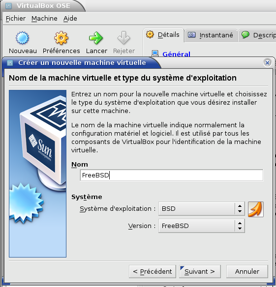
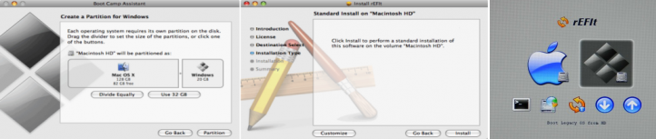
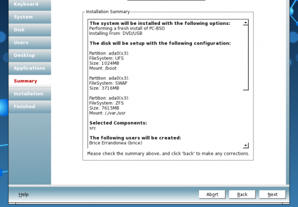
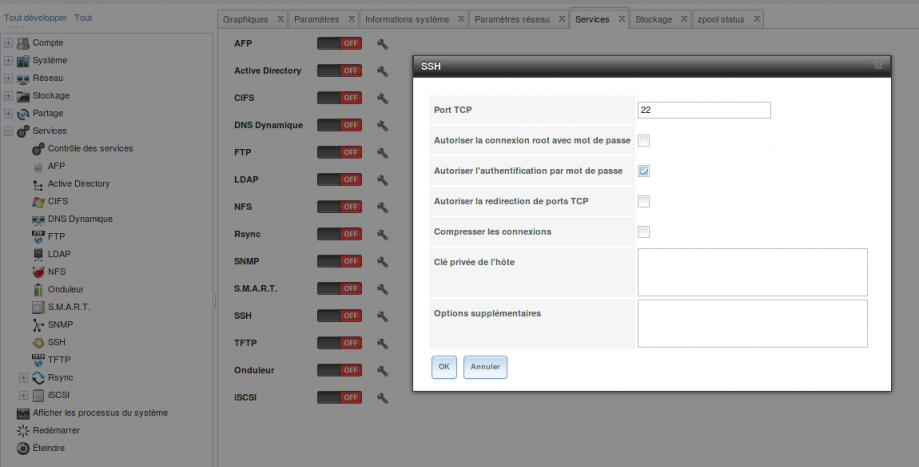
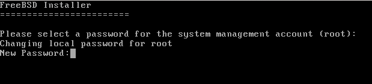
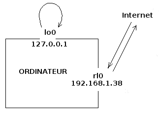

Un ordinateur, vous le savez, sert à exécuter des programmes : navigateur web, traitement de texte, lecteur multimédia, jeux, etc.
Et le plus important de tous ces programmes, c'est le système d'exploitation (souvent abrégé en OS : operating system). C'est le système d'exploitation qui pilote les périphériques, gère la mémoire, organise les fichiers et permet l'exécution des autres programmes. Le votre s'appelle certainement Windows. Ou peut-être Mac OS X, si vous êtes client d'Apple. A moins que vous n'ayez opté pour l'une des nombreuses distributions Linux.
Aujourd'hui, je vous propose de découvrir le roi des OS :soleil: : UNIX !
Erreur ! UNIX occupe certes une place centrale dans l'histoire de l'informatique. Mais c'est surtout, aujourd'hui, une référence à laquelle tous les autres systèmes d'exploitation essaient de ressembler. Il ne vise pas le grand-public mais, pour les entreprises, leurs serveurs et leurs stations de travail, un système UNIX est un gage de fiabilité sans équivalent. Ainsi, la part de marché* d'UNIX sur les serveurs informatiques en 2009 est estimée à 36,2 % :soleil: (35,3 % pour Windows et 13,6 % pour Linux).
Vous voulez en apprendre davantage sur le fonctionnement de votre ordinateur ? Vous voulez devenir administrateur de serveurs UNIX (ou administrateur réseau) ? Ou simplement élargir votre horizon et découvrir un nouveau système d'exploitation ?
Alors, c'est ici que commence votre apprentissage... Ne vous en faites pas si vous n'y connaissez pas grand-chose en informatique : aucune connaissance préalable n'est nécessaire.
Cliquez sur les captures d'écran pour les agrandir :
* : La part de marché concerne les revenus de la vente des OS et ne tient donc compte ni des UNIX gratuits (comme FreeBSD), ni des Linux gratuits (comme CentOS).
UNIX est un système d'exploitation bien vivant et tout à fait actuel. Mais cela ne l'a pas empêché de souffler ses 40 bougies en 2009. Pour bien comprendre d'où il vient, on va donc commencer par un peu d'Histoire. Pas trop, je vous rassure. ;)
Il était une fois, au Laboratoire Bell, une équipe de chercheurs sur le point de révolutionner l'informatique. A sa tête, Ken Thompson, à gauche sur la photo, l'inventeur du langage de programmation B, et Dennis Ritchie, au centre (ne me demandez pas qui est le type à droite ;) ). Cette équipe travaillait, avec d'autres, sur un système d'exploitation du nom de Multics, qui devait permettre à de multiples utilisateurs de travailler sur le même ordinateur. Il faut dire qu'à l'époque, un ordinateur remplissait une pièce entière et tout le monde n'avait pas le sien sur son bureau.
Multics était un ensemble de programmes très sophistiqués, donc chacun pouvait réaliser toutes sortes de tâches. Inversement, pour une tâche donnée, plusieurs programmes étaient susceptibles de la mener à bien et entraient donc en concurrence. Cette configuration déplut profondément à l'équipe du Laboratoire Bell, qui décida de repartir de zéro et de créer Unics : un OS dans lequel chaque tâche était prise en charge par un unique programme, qui ne faisait qu'une unique chose mais qui la faisait bien. L'orthographe Unics céda vite la place à UNIX.
Le code-source d'UNIX, sa recette de fabrication, fut d'abord écrit en Assembleur, un langage de programmation très bas niveau (proche du langage machine et très difficile à comprendre pour des êtres humains). Puis, à partir de 1971, Dennis Ritchie développa un nouveau langage, très largement inspiré du B : le C.
L'entreprise de téléphonie AT&T, propriétaire des laboratoires Bell, aurait bien voulu commercialiser un OS aussi brillant qu'UNIX. Cependant, certaines subtilités législatives américaines lui interdisaient de vendre des logiciels. Elle vendait donc le code-source d'UNIX, sa recette de fabrication, à des entreprises et des universités qui pouvaient le modifier selon leurs besoins avant de le compiler : de le transformer en programmes compréhensibles par des ordinateurs.
Le statut juridique de ce code-source, et la question de savoir si les universités et entreprises clientes avaient le droit de le redistribuer, était assez mal défini : il faudra attendre le début des années 90 pour qu'une série de procès clarifie la situation. On vit donc apparaître, à partir de 1977, plusieurs versions améliorées d'UNIX, et notamment :
BSD UNIX (Berkeley Software Distribution, 1977), distribuée gratuitement par l'Université de Californie Berkeley. Son principal développeur était un étudiant : Bill Joy.
Xenix (1980), oeuvre d'une petite entreprise américaine répondant au doux nom de... Microsoft.
Sun OS (1982), version payante de BSD UNIX vendue par Sun Microsystems, la société fondée par Bill Joy après ses études.
Puis, malgré les lois anti-trusts, AT&T parvint finalement à commercialiser, non pas l'UNIX original, mais une version dérivée : System III.
Mais alors, il y a combien d'UNIX différents ?
Il y en a beaucoup. UNIX n'est plus, aujourd'hui, un système d'exploitation unique. C'est toute une famille. Un peu comme pour Linux, qui a de nombreuses distributions. Voici une "généalogie" simplifiée des principaux systèmes UNIX :
La licence d'un logiciel est un document juridique indiquant ce que l'utilisateur a le droit de faire avec (et, bien souvent, ce qu'il n'a pas le droit de faire). Pour les UNIX modernes, trois cas peuvent se présenter :
Licence de type "propriétaire" : La société qui commercialise le logiciel en conserve la propriété, même après l'avoir vendu (eh oui, c'est très fort :p ). L'utilisateur n'achète en réalité que le droit de se servir du programme d'une certaine manière. En particulier, il ne peut ni consulter le code-source du logiciel, ni le modifier, ni le redistribuer, même à titre gratuit. Parfois, une partie du code-source peut tout de même être accessible (ex : Mac OS X et Solaris).
Licence BSD : Tout le contraire de la précédente. L'utilisateur peut faire ce qu'il veut du logiciel. Il peut consulter son code source, le modifier et le redistribuer sous la licence de son choix. Tout ce qu'on lui demande, c'est de citer l'auteur du logiciel original dans sa documentation.
Licence CDDL : C'est une licence libre de type copyleft (comme la licence GPL de Linux). Par rapport à la licence BSD, elle introduit une contrainte supplémentaire : si vous redistribuez une version modifiée du logiciel, vous devez employer la même licence. Les différences entre GPL et CDDL sont très techniques et je n'entrerai pas dans ces détails. Sachez cependant qu'elles sont incompatibles.
Vous trouvez le schéma ci-dessus trop compliqué ? Bon, alors, contentez-vous de retenir ça :
La marque commerciale UNIX est déposée et appartient à l'Open Group : un consortium d'entreprises et d'organisations (ex : Oracle, Hitachi, Apple, HP, IBM, NASA, etc.) Pour pouvoir utiliser cette marque dans leur publicité, les OS doivent demander à ce groupe la Single UNIX Specification, une certification payante (et chère) fondée sur un ensemble de critères de ressemblance avec les autres UNIX.
Mais cette définition est toutefois restrictive et ne s'applique, en en fin de compte, qu'aux OS commercialisés par les entreprises membres de l'Open Group. Les autres OS du schéma ci-dessus sont tous dérivés d'UNIX et bénéficient tous de ses principaux avantages : il n'y a ni risque de plantage, ni risque de virus, ni vulnérabilité de l'OS en cas de bug dans une application ou de tentative d'intrusion. :pirate: Ils sont tous reconnus par l'ensemble des professionnels comme étant des UNIX à part entière. J'en ferai donc autant dans ce tutoriel.
Et Linux, alors ?
Les systèmes d'exploitation de type GNU/Linux (Ubuntu, Fedora, Debian, etc.) n'ont pas de lien historique avec UNIX. Le sigle GNU signifie d'ailleurs "GNU is Not UNIX". Ils ressemblent cependant beaucoup aux UNIX et ne sont pas loin d'être aussi performants qu'eux. Une différence importante, tout de même, concerne la stabilité : celle des Linux est très bonne mais peut être remise en cause par les applications exécutées lorsque celles-ci contiennent des bugs. Ces OS sont donc plus adaptés à des particuliers qu'à un usage professionnel en entreprise.
Aujourd'hui, les UNIX les plus utilisés sont :
Mac OS X : Le fameux système d'exploitation d'Apple est de loin le plus répandu. Pas tellement sur les serveurs, mais plutôt sur des ordinateurs de bureau : les fameux Macintoshs. Je n'en parlerai pas trop dans ce tutoriel car il est assez différent des autres : les outils traditionnels d'UNIX sont masqués derrière l'interface graphique et les outils d'Apple. Il mériterait un tutoriel à lui seul (et vous en trouverez plusieurs ici). De plus, les "Macs" sont des produits de luxe que tout le monde ne peut pas s'offrir.
Solaris : Développé pendant des années par Sun Microsystems et désormais par Oracle. C'est l'UNIX leader sur le marché des serveurs. Malgré sa licence propriétaire, il est téléchargeable gratuitement pour une utilisation non commerciale. Il a aussi un clone sous licence libre CDDL, maintenu par une communauté indépendante : OpenIndiana.
Solaris 11
FreeBSD : Un système d'exploitation libre, gratuit et de plus en plus utilisé. Il est particulièrement prisé pour héberger des sites web. Les serveurs du moteur de recherche Yahoo!, par exemple, emploient FreeBSD. Idem pour le site web d'Apache, qui s'y connaît en matière de service web.
AIX et HP-UX : Développés respectivement par IBM et Hewlett-Packard. Ce sont les plus anciens OS encore utilisés.
OpenBSD : Un système d'exploitation très... fermé. ;) Il soigne particulièrement ses pare-feu et cryptages et n'a pas son pareil pour transformer un ordinateur en coffre-fort.
NetBSD : Le seul OS capable de préparer votre petit-déjeuner. Ce contorsionniste s'adapte à toutes les architectures matérielles possibles et imaginables, depuis les ordinateurs de la Station spatiale internationale jusqu'aux téléphones portables en passant par le périphérique Time Capsule d'Apple. Même les grille-pain ne lui font pas peur. :D
IRIX : Beaucoup d'entreprises l'utilisent encore, bien qu'il ne soit plus développé depuis 2007.
QNX : Un UNIX "temps réel" basé sur un micro-noyau et destiné aux systèmes embarqués.
Mais alors, lequel va-t-on étudier ?
Sachez d'abord que les UNIX se ressemblent tout de même beaucoup les uns aux autres. L'Open Group y veille. Leur parenté ne se limite pas à ce que montre le schéma ci-dessus. Ils s'échangent régulièrement du code et les nouveautés intéressantes développées sur l'un sont vite reprises par les autres. Une fois que vous en connaîtrez un, vous n'aurez pas de mal à en découvrir un autre.
Puisqu'il faut bien commencer quelque part, je vais vous apprendre à utiliser FreeBSD.
Pourquoi FreeBSD ?
D'abord parce que c'est celui-là que j'utilise moi-même. Autant que je vous parle de ce que je connais le mieux. Mais ce n'est pas la seule raison.
C'est un UNIX très populaire, avec une importante communauté :) disponible pour vous aider sur ses forums en cas de problème.
Il est libre et gratuit. Vous n'aurez donc rien à débourser pour suivre ce tutoriel.
C'est l'un des plus difficiles à prendre en mains (pas trop quand même, surtout avec un bon tutoriel comme celui-ci ;) ). Il est donc plus facile de passer de FreeBSD à Solaris que l'inverse.
Difficile ? Ce n'est pas pour moi, alors...
Pas de panique ! J'ai une bonne nouvelle pour vous : il existe aussi une version facile de FreeBSD, déjà toute pré-configurée et utilisable immédiatement sur votre ordinateur personnel, avec bureau graphique et tout et tout... Elle s'appelle PC-BSD.
Voici donc notre programme :
Dans le prochain chapitre, je vais vous montrer comment préparer votre ordinateur à accueillir UNIX sans perdre votre système d'exploitation actuel.
Dans la Partie 2, nous installerons PC-BSD. Puis je vous présenterai ce système, ses outils graphiques, et tout ce qu'on peut faire avec.
Dans les Parties 3, 4 et 5, nous passerons aux choses sérieuses : pour apprendre les commandes d'UNIX et bien comprendre son fonctionnement, nous repartirons de zéro, avec le FreeBSD "classique", à monter soi-même à la main. Si vous aimez les légos et autres meccanos, si vous préférez faire la cuisine vous-même plutôt que réchauffer des surgelés, alors vous allez vous régaler.
Enfin, dans la Partie 6, je vous parlerai des scripts UNIX, à écrire en (t)csh ou en ksh pour automatiser certaines opérations ou créer vos propres commandes. Vous ne pourrez bientôt plus vous en passer.
Avant d'entrer dans le vif du sujet, je dois vous présenter quelqu'un :
En Anglais, BSD se prononce « Bisdi ». Voici donc « Beastie ». Beastie est un sympathique démon :diable: , et c'est là encore un jeu de mot avec un DAEMON (Disk And Execution MONitor), c'est à dire un programme informatique s'exécutant en arrière-plan, sans que l'utilisateur y ait directement accès. Vous avez remarqué ses baskets ? Eh oui, Beastie a beau être un démon, c'est d'abord un Californien. ;)
Voici une petite anecdote sur Beastie et les malentendus qu'il a parfois provoqués. Elle est tirée du livre de Greg Lehey, The Complete FreeBSD, que je recommande à tous les anglicistes qui voudront approfondir leurs connaissances sur FreeBSD après avoir lu ce tutoriel : Linda Branagan, spécialiste en DAEMONs, fut un jour abordée dans un restaurant texan par deux locaux, alors qu'elle portait un T-shirt à l'effigie de Beastie. J'ai un peu abrégé :
Pardon, madame. Etes-vous sataniste ?
Non, certainement pas.
Vous voyez, nous nous demandions pourquoi vous portez le seigneur des ténèbres :diable: sur votre poitrine. Nous n'apprécions pas que des gens montrent des images du diable, surtout avec un visage si amical. :)
Oh... mais, ce n'est pas vraiment le diable. C'est juste, euh, une sorte de mascotte.
Et quel genre d'équipe de football a le diable pour mascotte ?
Oh, ce n'est pas une équipe, c'est un système d'ex... euh, :euh: un genre d'ordinateur.
D'où viennent ces ordinateurs sataniques ? :colere2:
De Californie. Et ils n'ont rien de satanique.
Madame, je pense que vous mentez. Et nous apprécierions que vous quittiez cet endroit, maintenant. :colere:
Crois-tu que la police est au courant pour ces ordinateurs diaboliques ?
S'il viennent de Californie, le FBI doit en être informé.
Vous donnez à tout ceci des proportions très exagérées. :( Des tas de gens utilisent ce « genre d'ordinateur » : des universités, des chercheurs, des entreprises. Il est très utile.
Est-ce que le gouvernement utilise ces ordinateurs diaboliques ? :colere2:
Oui.
Et est-ce qu'il paie pour eux ? Avec nos impôts ? :pirate:
Tandis que les deux autres l'escortent vers la sortie, Linda Branagan décide alors d'arrêter les frais : Non. Pas du tout. Vos impôts n'ont rien à voir là-dedans. Les gens du Congrès sont de bons chrétiens :ange: et ne laisseraient jamais faire une chose pareille !
Si vous décidez d'utiliser UNIX au quotidien, vous allez certainement finir, comme avec n'importe quel OS, par rencontrer tel ou tel problème dont la solution ne figure pas dans ce tutoriel. Heureusement, les endroits où vous pourrez trouver de l'aide ne manquent pas. Voyez plutôt :
La doc'
Le premier document à consulter est bien sûr le manuel officiel de votre UNIX. Voici celui de FreeBSD. Les pages man sont également très utiles. Pour les courageux, vous pouvez carrément télécharger le livre The Complete FreeBSD dont je vous ai parlé un peu plus haut. Il est en Anglais.
Les forums
Vous trouverez de l'aide sur ces forums. Les trois derniers sont en Français. Les autres sont anglophones mais comportent parfois une section francophone (moins fournie, bien sûr).
Les entreprises peuvent vouloir s'abonner à un support commercial. Elles sont ainsi certaines de toujours obtenir une réponse à leurs problèmes, étant donné qu'elles ont payé pour, ce qui est toujours sécurisant.
Oracle, IBM, HP, SCO et quelques autres vendent des serveurs accompagnés de leurs UNIX propriétaires respectifs, et proposent à leurs clients ce type de service après-vente. Pour FreeBSD, il est possible de souscrire un support commercial auprès d'iXsystems, une entreprise de type employee-owned company, qui vend des serveurs FreeBSD, participe au développement de cet OS et sponsorise le projet PC-BSD. Notez que ce support est également possible si vous utilisez FreeBSD sur un PC et que vous n'avez pas besoin d'avoir acheté vos machines auprès d'iXsystems.
Vous avez d'abord un choix cornélien à faire : installer UNIX directement sur votre vrai disque dur ou utiliser une machine virtuelle.
Une machine virtuelle, c'est quoi ?
C'est un logiciel qui permet de simuler la présence d'un autre ordinateur, un ordinateur virtuel, à l'intérieur du votre. Vous pouvez choisir de ne pas toucher à votre vrai système et d'installer UNIX* sur cette machine virtuelle. On appelle ça la virtualisation. A ce sujet, vous pouvez lire le tutoriel de kankan et ludofloria pour Windows ou celui de Meuhcoin pour Linux. Il existe plusieurs logiciels de virtualisation, comme VMware, Qemu, etc. Vous pouvez choisir celui que vous voulez. Ici, j'ai pris l'exemple de VirtualBox.
Comme je vous l'ai indiqué au chapitre précédent, nous allons utiliser deux versions distinctes de FreeBSD dans ce tutoriel : FreeBSD classique et PC-BSD. Il serait inutile de les installer toutes les deux sur votre disque dur réel, donc vous en mettrez au moins une (ou les deux, comme vous voulez) sous machine virtuelle. Avant de faire votre choix, sachez que, pour un même ordinateur, un système virtuel va moins vite qu'un système réel. Et que la machine virtuelle n'occupera qu'une partie de votre écran. Donc, si vous comptez conserver et utiliser FreeBSD ou PC-BSD au quotidien après avoir fini ce tutoriel, installez votre version préférée sur votre vrai ordinateur.
Je vous propose de commencer par le commencement : allumer l'ordinateur. Rien que là-dessus, il y a plein de choses à dire.
Je sais bien que c'est le Site du zéro mais on sait quand même allumer un ordinateur. On appuie sur le bouton et voilà... Non ?
Connaissez-vous le Baron de Münchhausen, personnage récurrent de la littérature allemande et héros d'un film de Terry Gilliam ? Pensez à un mélange d'Alice au pays des merveilles, de Gulliver et de Jules Verne, mais à la sauce germanique. Au cours d'une de ses aventures surréalistes, il échappe à la noyade en tirant très fort sur les boucles de ses bottes (bootstraps en Anglais) et en se hissant ainsi vers le haut. o_O
Le Baron de Münchhausen montant un demi-cheval Cet exploit absurde est similaire à celui que doit accomplir un ordinateur qui démarre : charger en mémoire un système d'exploitation alors que c'est le système d'exploitation qui assure le chargement des programmes en mémoire. o_O On appelle donc cette opération le bootstrap, généralement abrégé en "boot".
C'est en fait la carte-mère de l'ordinateur qui va chercher les premières instructions sur l'un des supports de stockage, habituellement le disque dur. Mais vous pouvez lui demander d'aller les chercher ailleurs : sur une disquette, sur un CD-ROM, ou encore sur le réseau par l'intermédiaire de sa carte réseau et d'un Environnement de Pré-eXécution (PXE).
Vous devez donc entrer dans le menu de configuration de votre carte-mère, qu'on appelle le BIOS Setup. Ce n'est possible qu'au moment du démarrage de l'ordinateur : il faut tout de suite appuyer sur la touche consacrée pour ouvrir ce menu. Le problème, c'est que cette touche varie d'un ordinateur à l'autre. C'est souvent Suppr, Echap, F1, F2, F10 ou F12. Parfois, l'écran de démarrage vous l'indique. :)
Sinon, il faut consulter la documentation de votre ordinateur, aller sur le site internet de son fabricant ou faire des essais au hasard. :(
Mais quel rapport avec UNIX ? Qu'allons-nous faire dans le BIOS, au juste ?
En fait, ça dépend !
Si vous pensez vous servir UNIQUEMENT de VirtualBox et si votre ordinateur a un microprocesseur (le composant central, là où se font tous les calculs) de type 32 bits (ou si vous ignorez s'il est en 32 ou 64 bits), laissez tomber le BIOS : vous n'avez pas besoin d'y aller. En principe, ceci dit, les processeurs 32 bits sont maintenant assez anciens.
Si vous comptez installer UNIX sur votre ordinateur réel, il va falloir le télécharger, le graver sur un CD-ROM ou une clé USB puis booter sur ce support. La première chose à faire est donc d'indiquer à votre carte-mère qu'elle doit examiner les ports USB et/ou le lecteur de CD-ROM à chaque démarrage. Si elle ne trouve rien, elle pourra booter en second choix sur le disque dur. Une fois parvenu dans le BIOS, donc, définissez votre lecteur de CD-ROM ou les ports USB comme boot prioritaire. Le menu de BIOS est disposé différemment d'un ordinateur à l'autre donc je ne peux pas vous guider plus en détails. Cherchez bien :euh: : il n'est pas si touffu, non plus. Enregistrez vos modifications avant de quitter.
Si vous voulez profiter pleinement :D de la puissance de votre processeur 64 bits sous VirtualBox, il faut activer la fonction de virtualisation dans le BIOS de votre ordinateur réel. Si, sur votre modèle, le mot virtualisation n'apparaît nulle part dans ce menu, cherchez un "VT-x" ou un "AMD-V" qui soit actuellement Disabled (ou Désactivé). Activez-le. Si vous ne trouvez pas, ce n'est pas grave. ;) D'ailleurs, si votre ordinateur a plus de quatre ans, il ne propose peut-être pas cette option. Il faudra simplement vous contenter d'une machine virtuelle plus lente.
Tant que vous êtes dans le BIOS Setup, essayez aussi de repérer l'option Onboard SATA Mode. Il y a très peu de risques que vous en ayez besoin mais on ne sait jamais. Cette option définit comment votre carte-mère va lire le disque dur. Il y a trois valeurs possibles : RAID, AHCI ou Native IDE. Sur certains modèles d'ordinateurs, il peut arriver, en effet, qu'UNIX refuse de démarrer. Vous ne pourrez même pas lancer le programme d'installation. Si vraiment ça vous arrive, revenez voir cette option et essayez l'une des deux autres valeurs. Native IDE sera probablement la bonne. Cette opération est réversible et ne provoque pas de dégâts sur votre machine.
A présent, il est temps de télécharger l'UNIX de votre choix sur son site officiel. Vous l'aurez compris, c'est FreeBSD et PC-BSD que je prends comme exemple pour ce tutoriel. Nous allons donc nous rendre maintenant sur le site de PC-BSD : http://pcbsd.org/get-it/download-pc-bsd-isotope.
Il faut maintenant choisir l'un des fichiers d'installation dans la colonne de gauche (en gris). Chacun comporte ses avantages. Oubliez toutefois les USBLITE, CD et Boot-Only CD, qui vous obligeraient, pendant l'installation, à télécharger le contenu manquant sur un serveur américain ou allemand.
Je prends 32 ou 64 bits ?
Les versions 32 bits fonctionnent à tous les coups. Mais les versions 64 bits sont plus rapides. Voici les cas dans lesquels vous pouvez choisir 64 bits :
Vous installez PC-BSD sur votre disque dur réel, et votre microprocesseur est en 64 bits.
Votre microprocesseur est en 64 bits et vous avez réussi, au paragraphe précédent, à activer la virtualisation dans BIOS.
Il vous reste maintenant à choisir entre DVD, USB et LiveDVD.
Le LiveDVD sert à tester PC-BSD sans l'installer ni modifier aucunement votre ordinateur. PC-BSD sera exécuté directement depuis le DVD. Vous ne pourrez rien enregistrer mais vous verrez au moins si vos périphériques sont détectés (en principe, oui). Il est étonnement rapide pour un live-DVD mais n'est disponible qu'en Anglais, et pour un clavier QWERTY. Et quand, après l'avoir essayé, vous voulez installer PC-BSD, il y a beaucoup moins d'options disponibles qu'avec le DVD classique.
Reste donc à choisir entre DVD et USB.
Je n'ai ni DVD ni clé USB vierge. Il va falloir que j'en achète un(e) ?
Avec VirtualBox, vous pourrez utiliser directement le fichier DVD téléchargé, sans avoir à le graver. Pour une installation sur système réel, par contre, vous avez effectivement besoin d'un support physique. Vous pouvez vous servir d'une clé USB non vierge mais sachez que tout son contenu précédent va être effacé. USB ou DVD, c'est donc, dans ce cas, une question de préférence.
Faites votre choix, cliquez dessus, puis choisissez (à droite) un serveur de téléchargement, le plus près possible de chez vous. Avant d'appuyer sur le bouton Download, notez soigneusement sa somme MD5 (MD5 Sum).
Elle sert à quoi, cette somme MD5 ?
Tout simplement à savoir si le fichier que vous avez téléchargé est arrivé en bon état sur votre ordinateur. Chaque fois que vous téléchargez une image ISO (ou USB, mais là, c'est moins grave), ayez vraiment ce réflexe de vérifier sa somme MD5. Ce serait dommage de gaspiller un DVD en y gravant un fichier corrompu. :o
Pour moi, aujourd'hui, la somme MD5 est : ac6b2485e0e8a9e3c5f3a51803a5af32
Vérifiez bien la votre.
Une fois le téléchargement terminé, si vous avez choisi l'image USB, décompressez-la avec votre gestionnaire d'archives habituel. Il vous faut maintenant un logiciel pour calculer la somme MD5 et la comparer à celle que vous avez lue sur le site. Sous Windows, vous pouvez prendre md5summer. Sous Linux, il y a Check-File-Integrity. Sous Mac OS X, l'utilitaire s'appelle tout bêtement MD5.
Si les deux sommes sont égales, tout va bien. :) Sinon, il faut recommencer le téléchargement. :colere2:
Si votre OS actuel est Linux, vous trouverez VirtualBox OSE (Open Source Edition) dans les dépôts de votre distribution préférée. Dans tous les autres cas, la version non-libre (mais néanmoins gratuite) est téléchargeable ici. Vous pouvez aussi installer la version non-libre sous Linux (même lien) et profiter de quelques fonctionnalités supplémentaires, que nous n'utiliserons pas dans ce tutoriel.
Une fois VirtualBox installé, démarrez-le. En haut à gauche de votre fenêtre, vous avez quatre gros boutons : Nouveau, Préférences, Lancer et Rejeter. C'est bien sûr en cliquant sur Nouveau que vous allez commencer.

Donnez un nom à votre machine virtuelle et indiquez en dessous quel système d'exploitation vous allez installer. Sur l'écran suivant, on vous demande la quantité de mémoire vive (RAM) que vous souhaitez allouer à la machine virtuelle. Mettez un peu moins de la moitié de la RAM de votre ordinateur réel. Dans mon cas, cela donne 226 Mo. :( Pour vous, avec les machines que vous avez maintenant, cela fait certainement beaucoup plus. :)
Ensuite, vous allez créer un disque dur virtuel. Non, aucun nouveau disque dur ne va se matérialiser comme par magie dans votre boîtier d'ordinateur. :magicien: C'est un simple fichier que vous allez créer. Votre machine virtuelle prendra ce fichier pour son disque dur. (Quelle naïve ! ;) )
Retour à la procédure "classique". L'étape suivante consiste à choisir votre Type de conteneur disque dur. Inutile de vous expliquer ce que c'est, la boîte de dialogue le fait très bien. En choisissant une taille dynamique, la taille du fichier-disque dur s'adaptera à vos besoins. Cliquez sur Suivant et affectez-lui une taille maximale. 15 Go devraient suffire.
Quoi ? Je ne vais pas créer un fichier de 15 Go, quand même ?
15 Go, c'est la taille maximale du fichier. Au début, il sera beaucoup plus petit. Ensuite, vous installerez des programmes et là, c'est sûr, il va grandir.
Après un récapitulatif, cliquez sur Terminer. Votre machine virtuelle sera bientôt disponible mais il faut encore la configurer. Cliquez l'engrenage orange : le gros bouton Préférences (ou Configuration dans certaines versions).
Une boîte de dialogue s'ouvre. Nous voulons que la machine virtuelle lise l'image ISO que vous avez téléchargée sur votre disque dur réel. Dans la colonne de gauche, il faut choisir Stockage (ou Support sur certaines versions). Vous voyez alors au centre de la fenêtre le dessin d'un petit CD à côté duquel il est écrit Vide. Cliquez-dessus. Puis, dans la partie droite, cliquez sur la petite icône représentant elle-aussi un CD, et sur Choisissez un fichier de CD/DVD virtuel. Sélectionnez votre image ISO.
Si vous avez pris la version 64 bits de PC-BSD, il reste une étape : toujours dans la fenêtre Préférences (ou Configuration), cliquez sur Système dans la colonne de gauche puis sur l'onglet Accélération. Cochez la case VT-x/AMD-V (si elle ne l'est pas déjà).
C'est prêt. Un tableau vous montre toutes les caractéristiques de votre machine virtuelle. Il est temps de cliquer sur le gros bouton Lancer (la flèche verte).
Votre écran virtuel s'allume. o_O En bas, un message vous demande d'appuyer sur F12 pour choisir sur quel disque démarrer. Ce n'est normalement pas nécessaire mais, au cas où, appuyez sur F12 et désignez le lecteur de DVD/CD-ROM.
Si ! En désignant votre image ISO à l'instant, c'est comme si vous aviez inséré le DVD qu'elle représente dans un lecteur virtuel. Je sais, ça fait beaucoup de virtuel. :D
En tout cas, les préparatifs sont finis pour vous et vous pouvez passer au chapitre suivant pour procéder à l'installation. Cela vous évitera d'effacer Mac OS X par erreur.
D - Si vous choisissez l'installation sur système réel
Vous allez maintenant graver votre fichier d'installation sur un DVD ou sur une clé USB.
CD-ROM
Il vous faut pour cela un logiciel de gravure. Sous Linux, vous avez certainement Brasero ou K3B. Sous Windows, si vous n'avez pas Nero, téléchargez CDBurnerXP ou FreeDiscBurner. Sous Mac OS X, vous pouvez prendre Burn, par exemple. Chaque logiciel a son propre fonctionnement mais c'est toujours très intuitif. Il y a quand même une erreur à ne pas commettre : celle de graver l'ISO en tant que fichier ordinaire. Gravez-le bien en tant qu'image disque.
Clé USB
Là aussi, il vous faut un logiciel spécialisé pour préparer une clé USB sur laquelle vous pourrez "booter". Par exemple, vous pouvez vous servir de win32diskimager pour Windows.
Sous Linux, il y a la commande dd. Sur Mac aussi, logiquement :
dd if=FichierImage.img of=/dev/da0 bs=64k
En remplaçant /dev/da0 par le nom du fichier qui, sur votre système, représente votre clé USB.
PC-BSD est maintenant prêt pour l'installation. :) Mais votre disque dur aussi va devoir s'y préparer.
Partitionner un disque, c'est y délimiter des partitions, des "zones", aux propriétés différentes. Lorsqu'il y a plusieurs OS sur le même ordinateur (ce qui sera bientôt votre cas), chacun n'a le droit d'écrire que sur la ou les partitions qui lui sont réservées.
Je parie que votre disque dur est actuellement occupé par les partitions de votre (éventuellement vos deux) OS actuel(s). ;) Même si vos fichiers n'occupent pas réellement tout l'espace disque, celui-ci est déjà réservé et on ne peut pas ajouter, comme ça, un nouveau système d'exploitation. Il faut d'abord lui faire de la place en réduisant au moins une des partitions actuelles.
Si la partition à réduire est actuellement utilisée par Windows, il faut d'abord la défragmenter à partir du Panneau de configuration (rubrique Performances et Maintenance), c'est à dire réorganiser les données sur le disque dur, car Windows a tendance à éparpiller des fragments d'un même fichier aux quatre coins de ses partitions.
Et si vous avez sur votre disque de vieux fichiers dont vous ne vous servez plus depuis longtemps, c'est le bon moment pour faire un peu de ménage en les supprimant.
Les programmes d'installation de FreeBSD et PC-BSD peuvent créer ou formater des partitions. Mais il ne savent pas réduire la taille d'une partition existante sans la détruire. Il faut donc préparer le terrain avec un logiciel de partitionnement. La procédure à suivre dépend de l'OS que vous utilisez actuellement. Si c'est Linux ou Mac OS X, lisez tout de même la partie consacrée à Windows : il y a des choses très importantes que je ne vais pas dire 3 fois.
Sous Windows
Je vous propose d'utiliser le logiciel EaseUs Partition Master, à télécharger ici. La Home Edition (gratuite) nous suffira largement. Une fois le logiciel installé et démarré, vous allez voir ceci :
Dans cet exemple, le disque dur est divisé en trois partitions principales (on dit aussi des partitions primaires). Sur votre disque à vous, les tailles sont certainement différentes. Un disque dur peut comporter jusqu'à quatre partitions primaires. S'il y en a déjà quatre sur le votre (ce qui m'étonnerait beaucoup), vous ne pourrez pas installer UNIX, à moins d'en supprimer une ou d'en fusionner deux. En effet, un UNIX doit toujours disposer d'une partition primaire complète : une partition logique ne suffit pas.
Quoi qu'il en soit, ces partitions occupent l'ensemble du disque. Il faut en réduire au moins une pour faire de la place. Sélectionnez-la maintenant et cliquez donc sur l'icône Resize/Move.
Allons-y, et concentrez-vous bien, c'est là qu'il ne faut pas faire d'erreur. Nous allons réduire la taille d'une des partitions de Windows. Le moyen le plus simple est encore de la réduire visuellement : cliquez sur le petit rond bleu-clair à gauche ou à droite (selon le côté où vous voulez faire de la place) et maintenez le bouton de la souris enfoncé pendant que vous glissez pour comprimer la partition.
Libérez au moins 15 Go pour installer UNIX. Si vous comptez l'utiliser beaucoup, prévoyez-en davantage. 50 Go, peut-être ? Lorsque vous êtes satifaits de votre répartition, cliquez sur OK. Vous voyez qu'il y a maintenant de l'espace non alloué (Unallocated) disponible.
Ce serait trop bête de laisser cet espace libre en plan sans rien en faire. Nous allons y créer une partition pour UNIX (PC-BSD, en l'occurence). Sélectionnez-le et cliquez sur l'icône Create au-dessus.
Le Partition Label est un nom que vous pouvez donner à votre partition pour la reconnaître facilement. Mettez ce que vous voulez.
Comme je vous l'ai expliqué plus haut, cette partition doit être primaire.
File System vous permet de choisir le format de votre nouvelle partition.
Les formats de systèmes de fichiers déterminent la façon dont les fichiers sont organisés sur le disque. FreeBSD (et donc PC-BSD aussi) utilise le format UFS (Unix File System) ou ZFS (Zettabyte File System).
Il n'y a ni UFS ni ZFS dans la liste des formats disponibles. Lequel je choisis ?
Mettez n'importe lequel pour l'instant. Evitez juste NTFS pour ne pas risquer de confondre cette partition avec celles de Windows. Là, j'ai mis EXT2. C'est un ancien format qu'utilisaient les anciens Linux. C'est le programme d'installation de PC-BSD qui corrigera ce format.
Plus bas dans la fenêtre, vous pouvez réduire la taille de la partition, si vous ne voulez pas qu'elle occupe tout l'espace libre. Ce ne sera pas nécessaire. Allez sur OK. De retour dans la fenêtre principale, vérifiez que vous n'avez pas fait de bêtise. Il est encore temps, en cas de pépin, de tout annuler avec le Undo en haut à gauche.
Par contre, si tout ceci vous convient, vous allez pouvoir demander l'application de vos modifications avec Apply. Et là, vous ne pourrez plus revenir en arrière. Le processus de partitionnement s'exécute alors automatiquement, en redémarrant plusieurs fois votre ordinateur. Vous n'avez pas besoin d'intervenir pendant ce processus. Finalement, Windows redémarre normalement et vous rend la main.
Sous Linux
Nous allons utiliser le programme GParted (Gnome Partition editor). Le problème, c'est qu'il ne faut pas l'exécuter directement depuis le disque dur que vous voulez partionner. Si vous avez conservé un Live CD, un Live DVD ou une clé USB live de votre distribution, vous trouverez GParted dessus.
Sinon, il faut en refaire un. Je vous recommande Parted Magic : une petite distribution très simple conçue justement dans ce but. Ou alors, si vous ne voulez pas consommer un autre support physique, vous pouvez installer le logiciel UNetbootin (regardez dans vos dépôts).
Lancez ce logiciel puis demandez l'installation de Parted Magic sur le disque dur. Inutile de lui préparer une partition dédiée : il va juste se faire une petite place sur la partition de votre Linux actuel, sans gêner personne.
Une fois Parted Magic installé, il faut redémarrer. Vous verrez deux nouvelles options dans votre GRUB : UNetbootin et pmagic_iso. Choisissez UNetbootin. Il ne va rien se passer pendant 30 bonnes secondes, puis Parted Magic va démarrer.
Vous pouvez maintenant lancer GParted (alias Partition Editor). Voici à quoi il ressemble une fois ouvert :
Cette fois-ci, je vous ai mis un exemple de disque dur déjà très partitionné. Vous voyez deux partitions primaires, sda1 et sda2, ainsi qu'une troisième à droite : sda3. La partition sda4, en bleu clair, est une partition étendue, subdivisée en trois partitions logiques. Il y a donc déjà 4 partitions primaires et il faut impérativement en supprimer une (après avoir mis son contenu en lieu sûr) avant d'installer UNIX. Chez vous, il n'y a probablement qu'une ou deux partitions primaires, dont une est éventuellement étendue.
Au dessus de la table des partitions, vous voyez 6 icônes. De gauche à droite, elles permettent de :
Créer une partition
Détruire une partition
Redimensionner ou déplacer une partition (ne déplacez que des partitions vides).
Copier une partition
Coller une partition (Ces deux options servent à recopier le contenu d'une partition dans une autre. Je ne garantis pas la fiabilité du presse-papier si la partition est grande).
Valider les changements (A NE PAS UTILISER A LA LEGERE)
Bon, quand il faut y aller... Concentrez-vous bien, là. :colere2:
Cliquez sur la partition que vous voulez réduire. Repérez bien quel espace est actuellement occupé sur cette partition et quel est son format. Cliquez sur Redimensionner ou déplacer une partition. Ensuite, tout se passe comme sous Windows. Libérez au moins 15 Go. Une fois que vous êtes surs de vous, cliquez sur l'icône verte pour valider vos modifications. Elles vont être écrites sur votre disque dur et vous ne pourrez plus revenir dessus.
Sous Mac OS X
Vous allez avoir besoin de deux outils. D'abord, un boot manager, c'est à dire un programme qui se lance au démarrage de votre Mac et vous demande quel OS vous voulez utiliser. rEFIt, par exemple, ira très bien. L'autre outil qu'il vous faut, c'est bien sûr le logiciel de partitionnement. Il s'appelle BootCamp. Avec lui, libérez de l'espace disque et créez une nouvelle partition primaire pour FreeBSD.
N'ayant pas de Macintosh a ma disposition, je ne peux ni vous en dire beaucoup plus ni vérifier par moi-même que cette procédure fonctionne vraiment. Tenez-moi au courant... :)

Avant d'aller plus loin, renseignez-vous aussi sur la manière dont votre disque est actuellement partitionné. Vous aurez besoin de cette information au chapitre suivant. Sur les Macs récents, les tables de partitions sont de type GPT (GUID Partition Table). Mais vérifiez bien si c'est le cas de votre modèle à vous.
Quand c'est fini, redémarrez votre ordinateur et vérifiez que tout fonctionne bien.
Fin des préparatifs ! On va enfin pouvoir s'amuser. :D
Vous avez bien achevé vos "Préparatifs du voyage" ? Vous pouvez donc essayer PC-BSD. Introduisez votre clé USB ou votre DVD d'installation (réel ou virtuel) dans le lecteur adéquat, et redémarrez l'ordinateur.
Après quelques messages système, qui vous disent que le noyau de FreeBSD est chargé avec plusieurs modules complémentaires, la première chose que vous allez voir, c'est le menu de boot :
Appuyez juste pour Entrée ou sur 1 pour un démarrage classique. D'autres messages systèmes défilent, puis le programme d'installation démarre :
La colonne de gauche vous montre les différentes étapes du processus d'installation : vous allez d'abord indiquer votre langue (Language) puis la disposition de votre clavier (Keyboard). Vous choisirez ensuite quel System installer (PC-BSD ou FreeBSD), indiquerez où et comment l'installer sur votre Disk (réel ou virtuel), avant de définir les utilisateurs (Users), le type de bureau que vous voulez (Desktop) et quelques Applications à installer en même temps que le système. Après un petit récapitulatif (Summary) et une confirmation de votre part, l'Installation proprement dite se fera automatiquement, en fonction de tous vos choix précédents.
Les 4 boutons du bas (1 à gauche et 3 à droite) vous permettent à tout moment de demander de l'aide, d'annuler l'installation, de revenir en arrière ou de continuer.
Je crois que vous n'avez pas besoin de moi pour choisir une langue, un fuseau horaire et votre type de clavier. Le système à installer est PC-BSD. Pour la source d'installation, cochez DVD/USB.
Le partitionnement
Nous arrivons à l'étape un peu délicate : le partitionnement. Comme vous avez préparé le terrain au chapitre précédent, ce sera assez simple. Si vous avez déjà un autre OS sur votre disque dur et si vous ne voulez pas le perdre, ne cochez surtout pas la case "Utiliser un disque entier". Dans mon exemple (voir image ci-dessous), le disque dur s'appelle ada0. Il comporte deux partitions occupées par Linux et un espace libre de 12371MB.
Pour installer PC-BSD dans cet espace vide, sélectionnez-le. Sur Mac, choisissez plutôt la partition primaire que vous avez créée avec BootCamp pour FreeBSD.
Vous pouvez définir quelques options. Si votre ordinateur est assez puissant (au moins 2 GB de RAM), je vous recommande le format ZFS, qui présente de nombreux avantages (nous verrons lesquels). Sur PC, évitez le partionnement GPT, qui effacerait vos autres OS. (Je crois que Mac OS X est déjà en GPT, mais vérifiez). Le cryptage des données n'est pas non plus franchement nécessaire et aurait pour effet de ralentir leur lecture. Une fois vos options choisies, cliquez sur le gros bouton + Ajouter et indiquez la taille de votre partition PC-BSD. J'ai mis 12366MB, juste un peu moins que l'espace disque disponible. Cliquez enfin sur Suivant.
Les utilisateurs
Maintenant, vous allez créer plusieurs utilisateurs. En effet, les UNIX sont des systèmes d'exploitations multi-utilisateurs : plusieurs personnes peuvent se connecter à une même machine et travailler dessus. Mais tous n'ont pas forcément tous les droits. Certains ont le droit de lire tel fichier et pas tel autre. D'autres ont le droit de modifier ces fichiers et d'autres encore ne peuvent que les exécuter. Sur tout système UNIX, il y a toujours un utilisateur particulier, qui a tous les droits : l'administrateur, également appelé superutilisateur (TIN TIN TIN !) :zorro: ou encore root : Charlie Root pour les intimes. Ce superutilisateur, bien entendu, c'est vous, vous qui êtes en train d'installer le système. Et ce qu'on vous demande maintenant, c'est de définir le mot de passe de l'utilisateur root. Tapez-le dans chacun des deux cadres en haut de l'écran.
Créez ensuite d'autres utilisateurs. Des utilisateurs ordinaires, cette fois, un pour chaque personne susceptible d'utiliser votre système. Il faut donc au moins un compte pour vous-mêmes.
Mais moi, je n'ai pas déjà un compte ? Celui de root ?
Si. Mais quand je vous dis que root a tous les droits, il a vraiment tous les droits, y compris celui de détruire le système par inadvertance. Il vaut donc mieux vous connecter le moins souvent possible en tant que root : uniquement quand vous avez des tâches d'administration à accomplir. Le reste du temps, vous utiliserez un compte d'utilisateur ordinaire.
Pour chaque utilisateur, donnez-lui d'abord un nom court, en un seul mot, puis son nom complet, et enfin son mot de passe. Le shell est le programme qu'utilisera PC-BSD pour interpréter les instructions de cet utilisateur. Laissez csh, c'est très bien. Vous pouvez maintenant cliquer sur + Ajouter et passer à l'utilisateur suivant. S'il n'y en a plus d'autre, vous pouvez passer au...
Choix du bureau
Vous n'avez peut-être pas l'habitude de choisir le type de bureau que vous utilisez. Avec Windows, il n'y a qu'un seul bureau. Celui-ci :
On peut le personnaliser un peu, mais à peine. Sur Mac, c'est pareil : même bureau pour tout le monde. Sous UNIX, par contre, vous avez le choix.
KDE est le bureau typique sous PC-BSD. Vous pouvez voir qu'il est pré-coché et c'est lui que je vais vous présenter dans la suite du tutoriel. Mais vous pouvez tout aussi bien choisir GNOME, LXDE (celui qui consomme le moins de RAM) ou Xfce. Vous pouvez même en installer plusieurs (ce sera plus long, bien sûr) et en changer tous les jours. Les voici tous. De gauche à droite : GNOME, Xfce, LXDE et KDE.
GNOME va bientôt changer du tout au tout. Il est donc inutile que je vous parle davantage de la version actuelle, même si elle est très bien.
Pour KDE, le problème est qu'il inclut beaucoup de logiciels inutiles, qui peuvent ralentir votre installation et encombrer ensuite votre menu des applications. Je vous conseille donc de cliquer sur le petit + à côté de KDE et de décocher tout ce qui vous paraît inutile, comme par exemple la suite bureautique KOffice (moins bien qu'OpenOffice ou LibreOffice), les KDE-Toys, KDE-Games, etc.
Dans le même menu, vous pouvez installer les fichiers de traduction (Base-I18N), pour avoir un système tout en Français, quelques logiciels, et des pilotes pour faire fonctionner des périphériques :
Par exemple, si vous avez une imprimante HP, cochez HPLIP. Et si votre carte graphique est de marque nVIDIA, prenez aussi le pilote correspondant. Plus bas, vous trouverez des gestionnaires de fenêtres : des programmes qui gèrent le comportement des fenêtres. Si vous ne savez pas ce que c'est, inutile de vous en préoccuper maintenant : le bureau que vous avez coché plus haut en comporte déjà un, et Fluxbox (un autre) est installé par défaut. Mais si vous en voulez encore davantage, Awesome, IceWM, Openbox, ScrotWM et Window Maker sont à votre disposition.
Le petit marché continue sur l'écran suivant, où on vous propose de télécharger le catalogue des ports et le code-source de FreeBSD (sa recette de fabrication). Prenez les sources : nous en aurons besoin. Le catalogue des ports, par contre, évolue chaque jour et la version présente sur le DVD est sans doute déjà obsolète. Ce n'est donc pas la peine de l'installer. Je vous expliquerai plus tard à quoi sert ce catalogue et comment récupérer la version à jour.
Il est temps de faire le point sur vos choix, dont voici le résumé :

Vous pouvez remarquer que la partition de PC-BSD (ada0s3, dans mon cas) a été découpée en zones plus petites : des tranches. On voit ici une petite tranche de 1024MB au format UFS, intitulée /boot. On y trouve les fichiers qui servent au démarrage de PC-BSD. La tranche swap est un "espace d'échange", utilisé quand la mémoire de l'ordinateur est saturée. Les 3 autres tranches : /, /var et /usr, sont au format ZFS. Vous saurez bientôt à quoi chacune correspond. Vos fichiers personnels, comme tout ce qui ne fait pas partie du système de base de FreeBSD, iront sur la grande tranche /usr.
A la fin, retirez votre DVD de son lecteur et redémarrez.
Sous VirtualBox, retirer le disque du lecteur signifie cliquer sur Ejecter le CD/DVD dans le menu Périphériques et le sous-menu Lecteurs CD/DVD.
S'il n'y a que PC-BSD sur votre disque dur (par exemple parce que vous êtes sous VirtualBox), votre ordinateur redémarre et le lance. Dans ce cas, c'est simple. Vous pouvez passer tout de suite au C.
Par contre, si votre ancien système d'exploitation est toujours présent à côté de PC-BSD, c'est lui qui démarre maintenant. Pour accéder à PC-BSD, il va falloir reconfigurer votre Boot Manager : le programme qui se lance au démarrage de l'ordinateur et qui charge ensuite le système d'exploitation.
Il n'est pas installé sur l'une des partitions dont nous venons de parler mais dans une zone particulière du disque dur qu'on appelle le Master Boot Record (MBR). Il s'agit des 512 premiers octets du disque dur, ceux que l'ordinateur lit en premier quand il boote.
Cohabitation avec Windows
Par défaut, le Boot Manager de Windows ne sait lancer que Windows. Il faut donc le modifier, grâce au programme EasyBCD, à télécharger ici. Quand vous lancez easyBCD, vous voyez cette fenêtre. Dans la liste de gauche, cliquez sur le bouton Add/Remove Entries.
Dans le cadre à droite, cliquez sur l'onglet Linux/BSD. C'est comme ça : vus depuis Windows, Linux et UNIX, c'est un peu la même tambouille. ;) Sélectionnez le type FreeBSD/PC-BSD, tapez un nom et indiquez le numéro de la partition où vous venez d'installer PC-BSD. Elle doit être au format Unknown (inconnu, car Windows ne connaît ni l'UFS ni le ZFS). Quand c'est fait, cliquez sur le bouton Add Entry. En cliquant ensuite sur View Settings (en haut à gauche), vous pouvez constater l'apparition d'un second paragraphe mentionnant FreeBSD (ou PC-BSD).
Cohabitation avec Linux
Le Boot Manager de Linux s'appelle GRUB. Il faut le configurer pour qu'il détecte FreeBSD. Le tutoriel de drakes00 vous explique tout sur GRUB. En résumé, selon la version de GRUB que vous utilisez, il faut éditer le fichier /etc/grub.d/40_custom s'il existe ou bien le fichier /boot/grub/menu.lst.
Dans ce fichier, repérez le paragraphe consacré à Windows (il contient l'instruction chainloader + 1, indiquant qu'il faut lire le premier octet de la partition de Windows) et faites en un équivalent pour FreeBSD, en remplaçant le numéro de partition (hd quelque chose, ou sd autre chose) par celui de votre partition FreeBSD.
Voici mon 40_custom à moi. Cela peut vous aider :
brice@Acer:/etc/grub.d$ cat 40_custom
#!/bin/sh
exec tail -n +3 $0
# This file provides an easy way to add custom menu entries. Simply type the
# menu entries you want to add after this comment. Be careful not to change
# the 'exec tail' line above.
menuentry "PC-BSD 9" {
set root='(hd0,1)'
chainloader +1
}
Pas d'inquiétude à avoir : si vous vous trompez de numéro de partition, FreeBSD ne sera pas détecté mais vous pourrez toujours revenir ici pour arranger ça. ;) Enregistrez le fichier modifié. Selon votre distribution, vous aurez peut-être besoin d'exécuter (en root) la commande update-grub pour que vos modifications soient prises en compte. C'est par exemple inutile sous Fedora mais indispensable sous Ubuntu.
Cohabitation avec Mac OS X
Vous avez installé le boot manager rEFIt au chapitre précédent. Vous n'avez donc plus qu'à choisir BSD dans le menu qu'il vous propose au démarrage de l'ordinateur.
Voila, cette fois, c'est fini. Vous allez pouvoir lancer PC-BSD.
Votre nouveau système d'exploitation démarre donc pour la première fois. Après les messages systèmes, vous allez choisir la résolution de votre écran et le pilote de votre carte graphique :
Le pilote graphique vesa fonctionne à tous les coups mais ce n'est pas le meilleur. En fonction de la marque de votre carte graphique, vous pouvez choisir un pilote plus adapté. Cliquez sur Apply. Votre configuration est testée. Si ça ne va pas, si vous avez choisi un pilote incompatible avec votre carte graphique ou une résolution trop élevée, vous êtes automatiquement ramenés à l'écran précédent pour faire un nouveau choix. Sinon, vous allez pouvoir vous connecter.
Cliquez sur votre nom. Avant de saisir votre mot de passe, pensez à choisir votre langue et votre clavier. Ce choix sera mémorisé pour les démarrages futurs. Si vous avez installé plusieurs bureaux ou gestionnaires de fenêtres, vous pouvez aussi choisir celui que vous utiliserez aujourd'hui. L'icône bleue à droite permet d'activer quelques options d'accessibilité, tandis que l'interrupteur (encore plus à droite) sert à éteindre ou redémarrer l'ordinateur. Tapez votre mot de passe puis cliquez sur Log In.
Vous voici enfin sur votre bureau KDE. En fait, le bureau proprement dit s'appelle Plasma. Le nom KDE désigne l'ensemble formé par le bureau Plasma et les applications qui vont avec.
Une fenêtre d'accueil vous présente un peu PC-BSD. Ensuite, vous pouvez partir vous-même à la découverte de ce nouvel environnement de travail.
Cliquez sur l'image pour l'agrandir
En premier lieu, vous avez dû remarquer les trois raccourcis sur le bureau.
AppCafé : le "café des applications". Une interface conviviale pour choisir de nouveaux logiciels à installer.
Panneau de contrôle : Pour tout configurer.
Handbook PC-BSD : le manuel d'utilisation officiel de PC-BSD.
Regardez en bas à droite de votre écran. Vous y verrez plusieurs icônes de notification. Comme il y en a pas mal, je vais vous les détailler, de gauche à droite :
Les deux premières icônes à gauche sont des raccourcis que j'ai choisi de placer sur le tableau de bord pour y accéder rapidement. Pour l'instant, vous ne les avez pas.
Si vous cliquez sur le i entouré, et si le système a quelque chose à vous dire, il le fera. Typiquement, il vous indiquera ici qu'un téléchargement est terminé ou qu'il a fini de recopier tout le contenu du dossier Vidéos dans un dossier Films.
Si vous utilisez une méthode dactylographique particulière, vous pouvez la configurer en faisant un clic droit sur l'icône suivante (le clavier avec une Terre à gauche).
L'icône HP est là car j'ai une imprimante de cette marque et j'ai donc sélectionné HPLIP pendant l'installation (voir ci-dessus). Un clic droit sur cette icône permet de configurer les impressions. Mais ce n'est pas le seul outil pour ça (heureusement : toutes les imprimantes de sont pas de marque HP).
La petite icône "bouclier" n'a rien à voir avec la sécurité. Elle concerne les mises à jour. Quand elle est verte : tout est à jour. Quand elle est bleue, des applications que vous avez installées via l'AppCafé peuvent être mises à jour. Cliquez sur l'icône pour ouvrir le gestionnaire de mises à jour. Si elle devient jaune, c'est PC-BSD lui-même que vous pouvez réactualiser. Et si elle devient rouge, c'est qu'il faut absolument vous mettre à jour pour corriger un bug important.
On continue avec la formidable Bouée de sauvetage. Je vous la présenterai en détails.
Les ciseaux représentent le presse-papier (ce que vous avez copié et pouvez maintenant coller quelque-part).
Le contrôle du volume. Pas besoin de vous faire un dessin.
Les périphériques USB que vous avez branchées ou les autres partitions de votre disque dur. Ici, vous pouvez par exemple accéder à vos fichiers restés sous Windows.
Le petit triangle permet d'afficher des icônes supplémentaires, comme un agenda.
Le niveau de votre batterie. Il n'a de sens que si vous utilisez un portable. Dans ce cas, une icône wifi pourra aussi apparaître.
L'heure
Les plasmoïdes : des petits gadgets KDE.
Le menu principal s'ouvre en cliquant sur le logo en bas à gauche (la boule de feu). Les logiciels y sont classés par catégories. Et vous verrez que, quand vous en installez un nouveau, il se range automatiquement dans la bonne. Vous pouvez placer vos applications préférées dans l'onglet Favoris, où vous trouverez tout de suite, ou même sur le tableau de bord.
Pas la peine de vous en dire plus sur le bureau lui-même. On retrouve les mêmes principes que sur votre OS habituel (icônes, fenêtres, etc.). Le manuel de PC-BSD est là si vous voulez des précisions. Celui de KDE aussi : vous pouvez l'afficher en tapant Alt F2 puis help puis Entrée.
Je ne vous apprends pas ce qu'est un fichier. Et vous savez bien que, sur un ordinateur, les fichiers sont rangés dans des dossiers (des répertoires, si vous préférez). Des dossiers qui peuvent s'emboîter les uns dans les autres et former un arbre. C'est comme ça sous Windows et c'est pareil sous UNIX. Mais sous UNIX, la racine de cet arbre ne s'appelle pas C:\. Elle s'appelle /.
Pour visiter l'arbre des dossiers et y trouver vos fichiers, il vous faut un logiciel spécial : un explorateur. Sur le bureau KDE, vous en avez deux pour le prix d'un : Konqueror et Dolphin. Vous les trouverez facilement dans le menu principal, section Favoris :
Konqueror fait aussi office de navigateur web. Sur les autres bureaux, vous trouverez des logiciels équivalents : Nautilus pour GNOME, Thunar pour Xfce ou PCManFm pour LXDE. Ouvrez donc l'explorateur de votre choix. Voici l'arbre que vous allez explorer :
La première fois, c'est impressionnant o_O de découvrir tous ces dossiers. Vous ferez peu à peu connaissance avec eux, en commençant par votre dossier personnel. Si vous n'êtes pas root, votre dossier personnel est le seul dans lequel vous avez le droit d'écrire, avec ses sous-dossiers, bien sûr. Parlons-en, justement, de ces sous-dossiers. Il y a d'abord Desktop (Bureau) : les fichiers que vous mettez dedans apparaîtront sur le bureau, dans la zone "Dossier du bureau". Ceux que vous téléchargez sur le web vont habituellement dans Downloads (Téléchargements). Vous voyez d'autres sous-dossiers pour ranger tous vos documents, images, musiques, vidéos. Et vous pouvez en créer d'autres, autant que vous voulez. Si vous êtes débutant, inutile de faire attention à GNUstep. C'est une bibliothèque graphique, équivalente à la Cocoa de Mac OS X. Le suffixe step fait d'ailleurs référence à NextStep (voir le schéma sur la généalogie des UNIX, dans le premier chapitre). Certaines applications se servent de cette bibliothèque. Evitez donc juste de la supprimer.
Voyons maintenant le reste de l'arbre. Directement sous la racine, on trouve donc une quinzaine de dossiers, le fichier COPYRIGHT, et quelques raccourcis vers d'autres dossiers. J'ai entouré etc, où sont rangés les fichiers de configuration du système. Il y a bien sûr des outils graphiques pour tout configurer mais les utilisateurs avancés préfèrent souvent modifier directement ces fichiers. Je vous montrerai comment faire dans un futur chapitre. D'ici là, évitez bien entendu d'y toucher : vous pourriez endommager votre système. ;)
Sur la même ligne, il y a root, le dossier personnel du superutilisateur. Tous ses dossiers ont également des sous-dossiers. Sur l'image ci-dessus, vous pouvez voir que usr en a 15, plus un raccourci. Sous home, vous trouverez votre dossier personnel. Toutes les applications qui ne font pas partie du système de base de FreeBSD se rangent dans les dossiers local et pbi. Dans src, il y a le code-source du système. Vous remarquerez aussi quatre dossiers marqués d'un point vert, qui s'appellent bin ou sbin. Les commandes d'UNIX sont dedans.
Mais, il y a deux dossiers bin ! Comment les distinguer ?
On peut aussi, et on le fait très souvent, désigner un fichier ou un dossier par son nom complet, également appelé chemin d'accès car il montre comment aller de la racine à ce fichier (ou dossier). Le premier bin, à gauche du schéma, est juste sous la racine. Et la racine s'appelle /. Son chemin d'accès est donc très simple : /bin. L'autre est un sous-dossier de /usr. On l'appelle donc /usr/bin. Si, dans votre sous-dossier Documents, vous créez un fichier monFichier, son chemin d'accès sera : /usr/home/[votre nom d'utilisateur]/Documents/monFichier.
Vous avez compris ? Alors, dites-moi. Quel est le chemin d'accès du fichier kernel, que j'ai également entouré sur le schéma ?
/boot-mount/boot/kernel/kernel
Ce kernel n'est pas n'importe quel fichier. Son symbole en forme d'engrenage indique déjà qu'il s'agit d'un programme exécutable. Mais ce n'est pas non plus n'importe quel programme. C'est le plus important de tous : le noyau de FreeBSD. Nous reparlerons de lui plus tard...
Konqueror est un très bon explorateur de disque. Comme navigateur web, par contre, il n'est quand même pas ce qui se fait de mieux. Enfin, je trouve... Il y a par exemple certaines pages web qu'il n'arrive pas à lire. Pour trouver un meilleur navigateur, nous allons donc nous diriger vers le "café des applications" : l'AppCafé.
Dans la rubrique Web (tout en bas), vous allez trouver plusieurs navigateurs :
Sous PC-BSD, ces navigateurs sont configurés pour utiliser par défaut un nouveau moteur de recherche appelé blekko. Bien entendu, s'il ne vous plait pas, il est facile de changer.
Cliquez sur l'application que vous voulez installer, puis sur la grosse flèche bleue pour commencer le téléchargement. Tous les fichiers nécessaires au fonctionnement du logiciel demandé sont regroupés dans un paquet de fichiers, qu'on appelle un paquet PBI. PBI est un format de paquet. Il signifie : Push Button Installer (installateur presse-bouton). En effet, il suffit d'appuyer sur un bouton (ou plutôt de cliquer sur une grosse flèche bleue) pour installer le logiciel.
Combien y a-t-il d'applications disponibles ?
Le système des PBI est encore assez récent et il a été entièrement réformé à l'occasion de la sortie de PC-BSD 9, ce qui a obligé les développeurs à refaire tous les paquets. Il n'y a donc pour l'instant que quelques centaines de logiciels dans l'AppCafé. Mais cela augmente très vite et, d'ici quelques mois, il y en aura autant que sur FreeBSD (près de 23000 ports, dont je vous parlerai dans la Partie 2).
En attendant, pour les impatients, vous pouvez télécharger un PBI en attente de validation, ce qui contribuera justement à le tester. Voici le serveur pour la version 64 bits de PC-BSD 9 et celui de 32 bits.
Imaginons, par exemple, que vous vouliez installer Skype. Ce logiciel n'est pas encore dans l'AppCafé.
Vous suivez donc l'un des deux liens ci-dessus et vous cherchez Skype dans la liste. Il est à la rubrique net-im :
En cliquant dessus, vous arrivez sur une liste plus petites de fichiers téléchargeables. Choisissez celui qui finit par .pbi. Une fois le téléchargement terminé, il faut sortir le logiciel de son paquet. Et pour ça, vous allez faire connaissance avec la console.
La console de jeu ?
Non, la console d'UNIX. Un endroit merveilleux, vous allez voir... Plutôt que de la chercher laborieusement dans les menus, appuyez simultanément sur les touches Alt F2 et tapez konsole (avec un k comme KDE). Notez bien cette astuce Alt F2, qui est souvent pratique pour lancer une application.
Voici donc Konsole, la console du bureau KDE. Ici, vous allez pouvoir communiquer directement avec le système, en tapant des lignes de commandes, sans avoir à chercher un bouton dans un onglet dans une fenêtre, etc. La difficulté, bien entendu, c'est qu'il faut connaître les commandes UNIX. Mais ne vous en faites pas, vous allez avoir tout le tutoriel pour les assimiler petit à petit.
Par défaut, le texte s'affiche en vert sur fond noir, ce qui peut vite devenir pénible à regarder. La première chose que je vous conseille de faire, c'est donc de Modifier le profil et de mettre le texte en blanc. Regardons maintenant ce qui s'affiche dans la console :
[brice@pcbsd-8584] ~>
Bien mystérieux, tout ça ! o_O
C'est ce qu'on appelle l'invite de commandes. Entre crochet, vous trouverez votre nom d'utilisateur, puis le symbole @ et enfin le nom que le système a donné à votre ordinateur. Ici, ce nom est pcbsd-8584. À droite des crochets, après un petit espace, s'affiche le chemin d'accès au dossier dans lequel vous êtes. Vous savez maintenant ce que sont un dossier et un chemin d'accès mais ce ~ est nouveau pour vous. Ce ~ est une abréviation qui désigne votre dossier personnel. ~ est donc équivalent à /usr/home/votreNom.
Pour finir, il y a le symbole >. Il signifie que vous êtes un utilisateur ordinaire et que vos droits sont donc limités. Vous avez quand même assez de droits pour finir l'installation de Skype. Avec la commande cd (changer de dossier), allez dans le dossier où vous avez téléchargé le paquet PBI. Si c'est ~/Downloads (et c'est probablement le cas), il faut taper :
~> cd Downloads
COMMANDE UNIX ----- cd (change directory)
Vous place dans le dossier que vous indiquez.
cd /usr/local/bin : vous place dans le dossier /usr/local/bin
cd .. : vous place dans le dossier "père" du dossier courant (celui où vous êtes)
cd toto : vous place dans le dossier toto, qui est un fils du dossier courant
cd titi/toto : titi est un fils du dossier courant et toto un fils de titi. Vous allez dans toto.
cd ../titi/toto : titi est un fils du dossier père du dossier courant. Vous allez dans toto (fils de titi).
Il faut vérifier que votre fichier est bien là. Vous vous servira pour ça de la commande ls, celle qui donne la liste de tous les fichiers du dossier où vous êtes.
~/Downloads> ls
skype-2.1.0.81-amd64.pbi
COMMANDE UNIX ----- ls (list)
Donne la liste des fichiers et dossiers dans le dossier courant.
ls : liste les dossiers et fichiers du dossier courant.
ls -a : liste tous les dossiers et fichiers du dossier courant, même ceux qui sont cachés.
ls -l : liste les dossiers et fichiers du dossier courant, et donne quelques infos sur chacun.
ls -R : liste les dossiers et fichiers du dossier courant et de tous ses dossiers fils, petits-fils, etc.
On peut aussi combiner les options :
ls -Ra : liste les dossiers et fichiers du dossier courant et de tous ses dossiers fils, petits-fils, etc., même ceux qui sont cachés.
Parfait : le PBI de Skype est là. Il n'y a plus qu'à le déballer avec pbi_add :
~/Downloads> pbi_add skype-2.1.0.81-amd64.pbi
Et pour aller encore plus vite, si vous ne voulez pas vous embêter à visiter le site web pour y chercher un PBI dont vous connaissez déjà le nom, vous pouvez tenter directement :
~> pbi_add -r skype
Si le PBI que vous demandez est disponible, il sera téléchargé et installé.
COMMANDE UNIX ----- pbi_add (add a PBI, spécifique à FreeBSD)
Installe le contenu d'un paquet PBI sur votre système.
pbi_add : décompresse une PBI présente sur votre ordinateur et installe son contenu sur votre système.
pbi_add -e -o destination : décompresse une archive PBI dans le dossier "destination" mais sans l'installer sur le système.
pbi_add -r : télécharge une archive PBI, la décompresse et l'installe.
pbi_add --no-checksig : installe un PBI sans vérifier sa signature numérique.
Là encore, on peut combiner les options. C'est pareil pour toutes les commandes. Devinez par exemple ce que fait :
Si le PBI que vous voulez n'existe pas encore, vous pouvez le demander sur le forum PC-BSD, et attendre que quelqu'un vous le prépare. Mais on n'est jamais mieux servi que par soi-même. Préparer un PBI prend du temps : de quelques minutes à quelques heures selon la taille de l'application concernée. Par contre, c'est très facile ! Nous retournons donc vers l'AppCafé pour y télécharger l'utilitaire EasyPBI. Je pourrais vous dire où il est mais je vais plutôt vous laisser essayer l'outil de recherche en haut à droite de l'AppCafé.
Vous allez pouvoir choisir l'un des quelques 23000 ports FreeBSD existants et, après avoir répondu à quelques questions simples dans la fenêtre d'EasyPBI, vous n'aurez plus qu'à attendre que votre application se construise toute seule. La première fois que vous lancez EasyPBI, il faut que vous téléchargiez le catalogue des ports. Vous vous souvenez peut-être qu'au chapitre précédent, je vous ai dit de ne pas installer la version de ce catalogue présente sur votre DVD ou clé USB d'installation. Celle-ci, en effet, est probablement déjà obsolète. Pour télécharger maintenant la version à jour, allez dans le menu File et cliquez sur Get Ports. Pendant le téléchargement, je vous propose de consulter vous-même ce catalogue en allant sur l'un de ces deux sites : http://www.freshports.org/ ou http://www.freebsd.org/ports/categories-grouped.html. Je vous recommande le premier : il est plus convivial et donne davantage d'informations.
Sur la page d'accueil, vous pouvez découvrir les nouveaux ports et ceux qui ont été mis à jour, ainsi que les failles de sécurité détectées dans des applications. Ce sont souvent les navigateurs web qui connaissent de telles failles, et tout particulièrement chromium, qui est rarement absent de cette rubrique. Pour chercher le port que vous allez transformer en PBI, vous pouvez utiliser la boîte de recherche (Search) en haut à droite, ou consulter la liste des categories en bas à droite.
Le temps que vous fassiez votre choix, le catalogue des ports sera installé sur votre ordinateur, dans le dossier /usr/ports/. Il est à jour, mais ne le restera pas longtemps. Pensez à exécuter de temps en temps la commande portsnap fetch update dans une console afin de le réactualiser.
COMMANDE UNIX ----- portsnap (spécifique à FreeBSD)
Télécharge le catalogue des ports
portsnap fetch extract : Installe le catalogue sur votre système pour la première fois.
portsnap fetch update : Réactualise le catalogue des ports.
Bon, si on le construisait, ce PBI ! Je vais prendre l'exemple de Fluxconf, un utilitaire graphique qui sert à configurer le gestionnaire de fenêtres Fluxbox. La première étape consiste à construire un module. Cliquez donc sur le gros bouton New Module. Une boîte de dialogue s'ouvre. C'est une boîte de dialogue tout à fait classique de sélection de fichier. Vous arrivez, par défaut, dans le dossier /usr/ports/. Choisissez la catégorie du port que vous cherchez.
Et comment je la connais, cette catégorie ?
En général, c'est logique. Par exemple, les logiciels scientifiques sont dans la catégorie sciences. Si vous hésitez, il y a deux méthodes : soit vous cherchez sur l'un des deux sites que je viens de vous montrer, soit vous utilisez la commande whereis dans une console.
Par exemple :
~> whereis fluxconf
/usr/ports/x11-wm/fluxconf
COMMANDE UNIX ----- whereis (Where is ?)
Recherche le chemin d'accès vers un exécutable, une page de manuel ou un port.
Fluxconf est donc dans /usr/ports/x11-wm/fluxconf. Sélectionnez ce dossier dans la boîte de dialogue puis cliquez sur Choose. Le formulaire d'EasyPBI va alors se remplir tout seul.
Vous avez remarqué ? J'utilise un bureau Xfce, aujourd'hui. Rien ne vous oblige à toujours vous servir du même bureau. Bon, revenons à EasyPBI ! En cliquant sur Choose Icon, vous pouvez choisir une image en .png qui servira d'icône à votre PBI. Et s'il s'agit d'une application graphique, cochez la petite case GUI App. Vous pouvez enfin créer le module. Je vous laisse deviner sur quel bouton cliquer pour ça. ;)
La création du module ne prend que quelques secondes. Nous pouvons maintenant passer à la deuxième étape : la construction du PBI. Cliquez sur l'onglet Build PBI.
Comme nous le verrons tout au long du tutoriel, il est possible de configurer absolument tout ce qu'on veut (et bien plus) dans la console. Pour ceux qui préfèrent les fenêtres et les boîtes de dialogue avec menus et boutons, le Panneau de contrôle de PC-BSD vous offre presque autant de possibilités.
Pour commencer, faites bien attention, il ne faut pas confondre le panneau de contrôle de PC-BSD avec celui de KDE. Celui de KDE ne concerne que votre environnement de bureau, même s'il porte l'intitulé Configuration du système. Vous le trouverez dans le menu principal, à la rubrique Favoris. Celui de PC-BSD, par contre, concerne le système d'exploitation en général. Son icône est sur le bureau.
Le panneau de contrôle de PC-BSD comporte 6 rubriques :
Logiciels et mises à jour : Je vous ai déjà présenté l'AppCafé. Nous verrons la Prison des ports bien plus tard, quand vous en saurez plus sur FreeBSD.
Gestion du système : Ce titre-là n'est pas intuitif. Je détaille la rubrique juste en dessous.
Matériel : Gérez vos cartes audio, graphique, etc., l'écran et l'imprimante.
Réseau : Configurez vos connexions à internet et l'excellent pare-feu Packet Filter.
Environnement de bureau : Lien vers le panneau de configuration de votre bureau (KDE ou un autre).
Outils : Pour configurer la lecture de vidéos au format Flash. Et deux autres outils dont je vous parlerai bientôt.
Les utilitaires de Gestion du système
De gauche à droite, nous avons :
KSystemLog : les messages systèmes, comme ceux qui s'affichent au démarrage. Ils sont triés en plusieurs catégories, selon qu'ils concernent le noyau, l'identification des utilisateurs, les DAEMONs (des programmes qui tournent en arrière plan sans que vous y fassiez attention et assurent divers services), ou encore l'environnement graphique. C'est vrai qu'il faut être un peu initié pour comprendre ces messages. Plus vous progresserez dans ce tutoriel et plus ils commenceront à vous parler. Mais rassurez-vous : vous n'aurez vraiment besoin de ces messages que si le système tombe en panne, ce qui n'arrive jamais, ou si vous voulez surveiller qui se connecte ou quel périphérique est branché sur l'ordinateur.
Gestionnaire de services : Revoilà nos fameux DAEMONs. Ici, vous pouvez les démarrer, les arrếter ou les redémarrer. Chacun d'entre eux rend un service bien précis à votre système. Par exemple, cupsd s'occupe des impressions tandis que wpa_supplicant s'occupe des connexions wifi.
Gestionnaire système : Encore un nom un peu vague. Ici, vous obtiendrez des renseignements généraux sur votre système et vous pourrez générer une fiche de diagnostic pour vous faire aider en cas de problème. Vous choisirez aussi le serveur à partir duquel faire vos téléchargements (prenez le plus proche de chez vous). Vous retrouvez l'écran de choix du bureau (le même que pendant l'installation de PC-BSD) et vous pourrez en ajouter un ou plusieurs autres. Remarquez que les logiciels proposés ici ne le sont pas dans l'AppCafé.
Image tirée d'une version bêta. Certains onglets n'étaient pas encore étiquetés
Sous l'onglet Tâches, vous pouvez télécharger le code source de PC-BSD ou la liste des ports. Je vous en parlerai quand nous en aurons besoin. L'onglet Divers concerne l'écran de démarrage de PC-BSD, si vous voulez en afficher un.
Gestionnaire de mises à jour : Pour mettre à jour PC-BSD et/ou les PBI installés.
Gestion des utilisateurs : Pour créer des utilisateurs, changer leurs mots de passe ou les affecter dans des groupes (bouton Affichage Avancé).
Je ne vais pas m'étendre davantage sur le panneau de contrôle. Tout ceci est quand même assez intuitif. Quant aux notions qui vous sembleraient encore obscures, elles le seront de moins en moins à mesure que vous progresserez dans ce tutoriel. N'hésitez pas à essayer tous ces outils et à personnaliser votre système et votre bureau pour qu'ils soient exactement comme vous aimez.
Vous savez maintenant tout ce qu'il y a à savoir pour une utilisation basique de PC-BSD au quotidien. Dès à présent, vous pouvez travailler et/ou vous amuser avec. :soleil:
Mais je pense que, si vous êtes ici, c'est que vous voulez en savoir plus, beaucoup plus. Nous allons donc passer sans tarder à des outils un peu plus avancés.
Si je vous dis "prison", a priori, ça ne donne pas envie. Mais les prisons de FreeBSD sont un outil formidable aux multiples applications. Nous allons commencer par l'exemple d'une prison spécialisée : la portjail.
FreeBSD est un OS très "compartimenté", et c'est là l'une des clés de sa stabilité. Voyez plutôt. Dans la version "classique" de FreeBSD, celle où aucune interface graphique n'est pré-installée, on distingue 3 compartiments :
Les documents des utilisateurs sont isolés dans le dossier /usr/home/. Si vous n'êtes pas l'administrateur du système, vous ne pouvez écrire que dans ce compartiment-là.
L'administrateur du système est le seul à pouvoir installer des applications supplémentaires. Il n'utilise pas pour cela des paquets PBI (spécifiques à PC-BSD) mais des paquets TBZ. Cela ne change pas grand-chose mais comprenez simplement que ce n'est pas le même format de paquet. Il peut aussi se servir des ports, nous verrons ça. L'important, pour l'instant, c'est que toutes ces applications ne sont pas mélangées, en vrac, avec le système de base de FreeBSD. Elles sont rangées dans le dossier /usr/local/. Elles ne risquent donc pas d'endommager ce système de base ou d'entrer en conflit avec lui en voulant installer tel ou tel fichier dans un dossier ou existe déjà un fichier du même nom.
Voyons maintenant la version PC-BSD. PC-BSD, c'est un FreeBSD pré-configuré, sur lequel un certain nombre d'applications sont déjà installées. Il y a donc un étage supplémentaire, au dessus du système de base de FreeBSD, que j'appellerai le "système de base de PC-BSD".On y trouve par exemple l'environnement graphique X.org, le gestionnaire de fenêtres Fluxbox, l'AppCafé, la Bouée de sauvetage, et plein d'autres programmes. On y trouve aussi les applications que vous avez cochées pendant l'installation de PC-BSD : KDE, par exemple.
Les éléments de ce "système de base de PC-BSD" sont installés sous forme de paquets TBZ et donc tout logiquement rangés dans le dossier /usr/local/. Eux non plus ne risquent donc pas de comprommettre le "vrai" système de base (celui de FreeBSD).
Mais si l'administrateur veut ensuite ajouter des logiciels supplémentaires dans le même dossier /usr/local/, le principe de compartimentation n'est plus respecté. Techniquement, il peut le faire : les outils classiques de FreeBSD sont toujours là. Mais ce n'est pas malin : d'abord parce qu'un administrateur inexpérimenté court ainsi le risque de provoquer un conflit entre les applications qu'il installe et le "système de base de PC-BSD". Et aussi parce qu'à la prochaine mise à jour de PC-BSD, tous les logiciels installés de cette manière seront supprimés.
Pour installer des applications sous PC-BSD, on utilise donc plutôt les paquets PBI, et on les range dans un autre dossier : /usr/pbi/. Cette opération n'est d'ailleurs pas réservée à l'administrateur : tous les utilisateurs membres du groupe operator peuvent ouvrir l'AppCafé et installer, supprimer ou mettre à jours des applications PBI. Bien entendu, c'est l'administrateur qui décide qui il inscrit dans le groupe operator. Par défaut, le premier utilisateur créé pendant l'installation y est inscrit d'office.
Le problème, c'est que, pour l'instant, il y a encore beaucoup moins d'applications disponibles en PBI qu'en paquet TBZ, et je ne parle même pas des ports.
Ça veut dire qu'on est condamnés à n'utiliser qu'une petite partie des logiciels FreeBSD existants ?
Heureusement, non ! :)
Vous avez peut-être remarqué la mention "SYSTEME PRINCIPAL" sur les schémas ci-dessus. En effet, on peut créer des systèmes secondaires. Autant qu'on veut. Une prison, c'est un peu (un peu seulement) comme un deuxième ordinateur : elle peut avoir des utilisateurs différents de ceux du système principal, un administrateur différent, des programmes installés différents, une configuration différente, un système de fichiers différents, etc. Et les programmes qui s'exécutent dans la prison ne peuvent pas interférer avec ceux du système principal, à moins de se connecter à lui comme le ferait un autre ordinateur.
Pour plus de théorie approfondie sur les prisons, il faudra attendre le chapitre La prison, dans la Partie 5 du tutoriel. Mais nous allons tout de suite voir un cas pratique.
Voici donc notre portjail, à côté du système principal. Quand vous demandez la création d'une prison, le système de base de FreeBSD y est automatiquement installé. L'administrateur de la prison peut ensuite y installer toutes les applications qu'il veut, en se servant des ports ou des paquets TBZ. Plus le nombre d'applications disponibles dans l'AppCafé augmentera et plus l'utilité de la portjail, ou "prison des ports" diminuera. Son utilisation est effectivement plus complexe. Pour l'instant, vous pouvez encore en avoir besoin.
Mais si l'administrateur les installe dans /usr/local/, ça ne va pas se mélanger avec le système de base ?
Non, car ce n'est pas le même /usr/local/. Il y a un dossier de ce nom sur le système principal et un autre dans la prison.
Mais comment deux dossiers différents peuvent-ils avoir le même chemin d'accès ? o_O
Vous comprendrez mieux en essayant. Nous allons tout de suite créer une portjail. Ouvrez une console (pardon, une Konsole). Nous avons maintenant besoin du code-source de FreeBSD. Si vous avez suivi mes instructions, vous l'avez demandé pendant l'installation de PC-BSD et il se trouve maintenant dans /usr/src/. Allez donc dans ce dossier avec la commande cd et vérifiez qu'il contient bien quelque chose avec ls.
[brice@Acer] ~> cd /usr/src
[brice@Acer] /usr/src> ls
COPYRIGHT UPDATING include share
LOCKS bin kerberos5 sys
MAINTAINERS cddl lib tools
Makefile contrib libexec usr.bin
Makefile.inc1 crypto release usr.sbin
Makefile.mips etc rescue
ObsoleteFiles.inc games sbin
README gnu secure
Si ls ne vous renvoie rien, c'est que vous avez oublié d'installer le code-source. Il faut lire plus attentivement. :colere2: Mais ne vous inquiétez pas, vous pouvez vous rattraper en utilisant le Panneau de contrôle de PC-BSD. Ouvrez-y l'outil Gestionnaire système puis l'onglet Tâches. Allez-y même si vous avez les sources, pour bien repérer les lieux.
Regardez un peu ce gros bouton Télécharger les Sources du Système qui n'attend que votre clic. Si vous n'avez pas encore les sources, allez-y : faites-vous plaisir. ;) Ensuite, laissez cette fenêtre ouverte et mettez-la de côté pour une prochaine étape.
Maintenant que nous avons les sources, nous pouvons créer la prison. Mais seul l'administrateur, le root, le superutilisateur :zorro: , a le droit de le faire. Or, vous, vous n'êtes qu'un simple utilisateur ordinaire.
Comment ça, ordinaire ? C'est mon ordinateur, quand même ! Et c'est moi qui ai installé le système. Si ce n'est pas moi l'administrateur, c'est qui ?
C'est effectivement vous. Mais encore faut-il vous connecter en tant que root, ce qui n'est pas le cas pour l'instant. Vous allez utiliser la commande su (comme substitute user) pour vous substituer à l'administrateur. Ensuite, vous tapez le mot de passe de root. Il ne s'affiche pas quand vous le saisissez. C'est qu'il ne faudrait pas que quelqu'un le lise par dessus votre épaule :pirate: . Votre invite de commande va se transformer :
[brice@Acer] /usr/src> su
Password:
[brice@Acer] /usr/src#
COMMANDE UNIX ----- su (substitute user)
Vous donne les droits d'un autre utilisateur jusqu'à ce que vous tapiez exit. Vous devez connaître son mot de passe.
su : vous donne les droits de root, le superutilisateur.
su -l tartempion : vous donne les droits de l'utilisateur tartempion (vous perdez temporairement vos droits à vous).
La création de la portjail est assez longue. Le code-source de FreeBSD va être compilé, pour reconstituer tout un système de base à l'intérieur de la prison. Faites autre chose pendant ce temps là. Quand c'est prêt, démarrez-la avec portjail start. C'est un peu comme si vous allumiez un deuxième ordinateur.
Maintenant que la prison des ports fonctionne, nous voulons y installer des applications, soit par les ports, soit par les paquets TBZ. Dans un cas comme dans l'autre, on commence par récupérer la liste des ports. Reprenez donc la fenêtre du Gestionnaire système, celle que vous aviez mise de côté. En haut, dans la partie Console des ports, il y a un bouton Récupérer les Ports (voir image ci-dessus). Cliquez dessus.
Mais quand est-ce qu'on la voit, cette prison ?
Vous avez raison, il est temps d'y entrer. Vous pouvez cliquer sur Ports Jail dans le Panneau de Contrôle ou aller dans le menu de KDE : Applications -> Système -> Ports Jail.
La console des ports est blanche, ce qui permet de la distinguer facilement de celle du système principal. Autre différence, l'invite de commande se termine par le symbole %. Nous voici donc dans la place. La prison des ports est prête, allumée, nous y sommes, et la liste des ports aussi.
On va la voir ?
C'est parti. Tapez cd dans la blanche console des ports et rendez-vous dans le dossier /usr/ports/ pour un petit ls :
Tous ces dossiers sont autant de catégories dans lesquelles sont rangés tous les ports disponibles. Bien sûr, il n'est pas très confortable de les parcourir dans la console pour chercher l'application que vous souhaitez installer. Si vous connaissez son nom précis, vous pouvez essayer la commande whereis pour trouver dans quelle catégorie il est. Ou consulter le site FreshPorts, comme je vous l'ai montré au chapitre précédent. Imaginons, par exemple, que vous vouliez installer Freemat, un logiciel de mathématiques similaire à Matlab et compatible avec lui. Voici sa fiche sur Freshports :
Regardons un peu quelles informations cette fiche nous fournit :
La version actuelle de Freemat (4.0_2).
L'e-mail du responsable du port ([email protected]). C'est la première personne à contacter pour râler :colere: demander de l'aide si vous rencontrez des problèmes.
La description de l'application.
Son site officiel.
La liste des dépendances, c'est à dire des bibliothèques ou programmes qui doivent être présents sur votre système pour que vous puissiez installer ou exécuter freemat. Quand vous demandez l'installation d'un programme, toutes ses dépendances sont également installées.
La commande à employer pour installer freemat par le système des ports : cd /usr/ports/math/freemat/ && make install clean
La commande pour installer le paquet TBZ : pkg_add -r FreeMat. Je vous déconseille ces paquets sous PC-BSD : ils sont parfois obsolètes et peuvent alors provoquer des conflits.
La liste des options de compilation disponibles : des choix que vous pouvez faire pour personnaliser certains logiciels (là, il n'y en a pas).
La liste des serveurs HTTP ou FTP que votre ordinateur va contacter automatiquement pendant l'installation.
L'historique des mises à jour et événements survenus depuis 10 ans concernant ce port.
La commande qui va nous permettre d'installer Freemat est donc : cd /usr/ports/math/freemat/ && make install clean. Il s'agit en fait de deux commandes distinctes, séparées par un &&.
COMMANDE UNIX ----- && (and)
Permet d'écrire deux commandes sur la même ligne. Elles seront exécutées l'une après l'autre.
Parmi ces deux commandes, vous connaissez déjà cd. Elle vous conduit tout simplement dans le port de Freemat : le dossier abritant son fichier Makefile.
Eh bien ! Ne restez pas plantez là : allez-y et regardez ce qu'il y a dans ce dossier.
[brice@Acer] /% cd /usr/ports/math/freemat && ls
Makefile distinfo files pkg-descr pkg-plist
[brice@Acer] /usr/ports/math/freemat/%
Dans chaque port, on trouve toujours à peu près les mêmes fichiers. pkg-descr, par exemple, est une description rapide du logiciel concerné. La même que sous Freshports. Vous pouvez le lire avec la commande cat.
COMMANDE UNIX ----- cat (concatenate)
Affiche le contenu d'un fichier texte
cat fichier : affiche le contenu de ce fichier.
cat -n fichier : affiche le contenu de ce fichier, en numérotant les lignes.
cat fichier1 > fichier2 : recopie le contenu du fichier1 dans le fichier2. Si fichier2 n'existait pas, il est créé. S'il existait, son ancien contenu est perdu.
cat fichier1 >> fichier2 : recopie le contenu du fichier1 dans le fichier2, à la suite de l'ancien contenu du fichier2.
Le gros défaut de cat, c'est qu'il affiche la totalité du fichier d'un coup. S'il est court, comme pkg-descr, ça va. Mais essayez avec Makefile : vous allez voir... Ou plutôt non, vous n'allez voir que la fin du fichier. Et s'il est vraiment long, même en remontant, vous ne trouverez pas le début.
Non. Pour lire Makefile, il vous faut la commande more. Ou la commande less, qui est pratiquement équivalente. Un dicton unixien dit d'ailleurs : "less is more, more or less" (traduction : less est identique à more, enfin plus ou moins).
COMMANDE UNIX ----- less (less)
Affiche le début d'un fichier. On peut ensuite faire défiler ce fichier avec Entrée pour le lire jusqu'au bout. À tout moment, on peut revenir à la ligne de commande en appuyant sur q. Beaucoup d'autres commandes (dont les flèches directionnelles) permettent de naviguer dans le fichier.
less fichier : affiche le début du contenu de ce fichier.
less --help : affiche la liste des commandes utilisables quand vous êtes en mode less.
Mais c'est quoi ce fichier Makefile ? Je ne comprends rien à son contenu.
Ce fichier est destiné à être lu par la deuxième commande : make install clean. Quand vous tapez make install clean, le programme make exécute l'ensemble des instructions du fichier Makefile :
Il regarde si le programme que vous voulez installer à des dépendances.
Si oui, il regarde si ces dépendances sont déjà installées sur votre système.
Si non, il les installe.
Il télécharge le code-source de votre application.
Il s'assure que le téléchargement a bien réussi, en se servant du fichier distinfo.
Il compile ce code-source et génère des fichiers objets temporaires, dans un sous dossier work.
À partir de ces fichiers objets, il construit les fichiers exécutables de votre application (freemat).
Il installe tous les fichiers de l'application dans les sous-dossiers de /usr/local/.
Le clean : il efface les fichiers temporaires, qui ne sont plus nécessaires une fois la compilation terminée.
Alors, ça vous dit ? On installe FreeMat ? OK. On se met d'abord en mode root avec su et on tape :
# make install clean BATCH=yes
make install clean, je veux bien. Mais BATCH=yes, c'est quoi ?
Certaines applications sont personnalisables pendant la compilation. Celle-ci s'interrompt soudain et on vous pose une question pour savoir si vous voulez activer telle ou telle fonctionnalité. Ce n'est pas le cas de FreeMat. C'est le cas de quelques-unes des dépendances de FreeMat. Mais nous, on veut juste installer FreeMat et on ne veut pas avoir à surveiller la compilation en attendant les moments où on devra répondre à ces questions. On indique donc BATCH=yes pour dire : avec toutes les options par défaut.
Le programme make est maintenant lancé. Il va mettre un bon moment pour compiler FreeMat (environ 1h). Vous pouvez lire la suite de ce chapitre, et même le suivant, pendant ce temps là. À la fin, vous pourrez lancer FreeMat depuis la console des ports :
Vous pouvez créer autant de prison que vous voulez. Et pas seulement pour les ports !
Par exemple, vous avez codé une application vous-mêmes et vous ne voulez pas qu'elle risque de faire des dégâts. >_ Exécutez-la dans une prison ! Ainsi, elle ne pourra pas intérférer avec les processus du système principal.
PC-BSD dispose d'un utilitaire spécifique pour gérer les prisons. Il s'appelle The Warden, et vous le trouverez dans l'AppCafé, rubrique System Utilities, tout en bas. Une fois installé, vous pouvez le lancer depuis le Panneau de contrôle. Nous allons commencer par créer une prison en choisissant New Jail dans le menu File. Et nous installerons un serveur web à l'intérieur.
Votre prison va avoir sa propre adresse IP. Comme ça, si quelqu'un s'y connecte depuis l'extérieur, il n'aura accès qu'au contenu de la prison. Vous pouvez choisir n'importe quelle adresse du moment qu'elle n'est pas déjà utilisée sur votre réseau local. Par contre, notez-la bien : vous n'avez pas fini de vous en servir.
Donnez un nom à la prison et cochez Include ports tree si vous voulez installer les ports à l'intérieur. Nous n'avons pas besoin des deux autres options donc cliquez sur Create. Le root dont vous parle l'écran suivant n'est pas le vrai administrateur de votre ordinateur mais celui de la prison. Donnez-lui un mot de passe et créez aussi un utilisateur ordinaire dans la prison (un prisonnier, :'( donc). Quand c'est fait, actionnez le bouton Save.
Votre prison est créée dans le dossier /usr/local/warden/jails/192.1.1.1 (non, vous ne pouvez pas choisir). The Warden procède à l'installation du monde. Il suit ensuite vos instructions pour l'utilisateur et les mots de passe. Pour démarrer la prison, faites un clic droit dessus dans la fenêtre The Warden et choisissez Start this jail.
Tout comme la portjail, cette prison est l'équivalent d'un nouvel ordinateur, dans lequel vous pouvez installer ce que vous voulez. Un serveur web, par exemple. Ou votre dernier programme que vous n'avez pas encore testé. Ou des paquets TBZ, avec la commande pkg_add. Ou une application dont FreshPorts vous dit qu'elle présente un risque de sécurité : dans la prison, cette fragilité n'aura aucune conséquence sur le reste du système.
Il y a un autre chapitre sur les prisons dans la Partie 5 de ce tutoriel. Mais vous avez de quoi vous amuser, dans un environnement sécurisé. Dans ce chapitre, vous avez également découvert le système des ports, qui est une composante essentielle de FreeBSD. Lui aussi, nous l'approfondirons bientôt.
Vous avez sous la main un vieil ordinateur que vous trouvez trop lent ? :( Vous comptez le jeter ?
UNIX sur un seul ordinateur, c'est bien. :) Mais cet OS est aussi conçu pour les réseaux. Dans ce chapitre, je vais donc vous proposer deux petits réseaux intéressants. Et votre vieille machine va pouvoir commencer une nouvelle vie trépidente.
Pour moi, c'est l'un des grands atouts de PC-BSD : il peut transformer votre ordinateur en un serveur pour clients légers. J'avais déjà vu certaines distributions Linux en faire autant (Skolelinux, Ubuntu, etc.) mais c'est vraiment plus simple avec PC-BSD.
C'est quoi, un client léger ?
C'est un ordinateur qui n'exécute aucun programme lui-même. Il se contente de transmettre à un ordinateur plus puissant (le serveur) les signaux de son clavier et de sa souris. Le serveur, sur lequel s'exécutent les programmes, traîte ces informations et dit au client léger ce qu'il doit afficher sur son écran.
Rien n'est installé sur le client léger, qui n'a même pas besoin de disque dur. Une carte réseau, une carte graphique et une mémoire vive rudimentaire lui suffisent. Même s'il est ancien, ce n'est pas un problème.
Un même serveur peut gérer simultanément une douzaine de clients, voire plus s'il est très puissant. Il lui faut une grosse mémoire vive car c'est lui qui exécute tous les programmes. Mais aujourd'hui, il est facile de trouver un PC avec 4Go de RAM. De plus, si plusieurs clients utilisent un même programme, il suffit au serveur de le charger une fois en mémoire. Et c'est au moins le cas du système d'exploitation.
Il va quand même falloir acheter quelque chose : une deuxième carte réseau pour le serveur :
Image tirée du tutoriel de junior0, The frog et Vinc14 sur les réseaux
On trouve des cartes réseau à partir de 8€ dans les grands supermarchés ou sur internet. Voici comment disposer vos appareils :
Une fois ces branchements terminés, ouvrez un terminal sur le serveur (votre ordinateur neuf, sur lequel PC-BSD est installé) et lancez la commande ifconfig :
Nous avons ici 3 interfaces réseau : re0, ath0 et lo0. lo0 est une interface un peu spéciale puisqu'il s'agit d'une connexion entre votre ordinateur et ... lui-même. C'est ce qu'on appelle la boucle locale. L'ordinateur s'en sert souvent pour des tests : il se parle tout seul, quoi. ;)
re0 désigne une carte réseau de marque Realtech et ath0 une carte réseau de marque Atheros. Si vos deux cartes ont la même marque, elles seront désignées par re0 et re1, par exemple. Notez bien les noms que PC-BSD a donnés à vos deux cartes. Vous allez bientôt en avoir besoin.
Avant de lancer le programme pc-thinclient en tant que root, attendez peut-être d'avoir terminé la compilation de FreeMat (si vous l'avez lancée au chapitre précédent). En effet, il s'agit là aussi d'un programme long et très gourmand en mémoire, qui va durer quelques heures.
Il faudra que j'attende trois heures chaque fois que je veux me servir d'un client léger ?
Non, non : seulement la première fois. Et même si, à l'avenir, vous ajoutez d'autres clients, vous n'aurez pas besoin de recommencer cette procédure.
Prêts ? Alors c'est parti :
# pc-thinclient
Confirmez d'un y que vous voulez vraiment lancer le programme. Et partez faire autre chose. Vous pouvez lancer d'autres applications sur votre bureau pendant ce temps là, travailler ou vous amuser, mais dites vous bien qu'une grande partie de votre RAM sera mobilisée par le programme pc-thinclient.
À la fin, le programme vous demande à quelle interface réseau est relié votre client (ou votre hub avec plein de clients derrière). Dans mon cas, c'est ath0, donc je l'indique :
What NIC do you wish DHCPD to listen on? (I.E. re0) ath0
DHCPD est un DAEMON. Il assigne automatiquement des adresses IP à des interfaces réseau. Il y en a un autre dans votre "box", qui a donné une adresse à votre carte réseau n°1 (voir schéma ci-dessus). Celui-ci va tourner sur votre serveur. Il est contrôlé par le fichier /usr/local/etc/dhcpd.conf et attribuera à vos clients des adresses comprises entre 192.168.2.100 et 192.168.2.199.
Une fois l'exécution de pc-thinclient terminée, vous pouvez redémarrer le serveur.
Du côté du client, il n'y a pas besoin d'installer quoi que ce soit. En fait, le client n'a même pas besoin d'avoir un disque dur. Par contre, vous allez maintenant configurer son BIOS (voir le chapitre Préparatifs du voyage) pour qu'il boote sur sa carte réseau, via un Environnement de Pré-eXécution (PXE). Puis redémarrez-le, lui aussi. À la fin du processus de démarrage, on vous proposera de configurer votre environnement graphique :
Do you wish to setup a custom xorg.conf for this system? (Y/N)
Vous acceptez, bien sûr. Puis vous choisissez votre résolution, vous la testez et vous l'enregistrez.
Je ne peux pas l'enregistrer. On me demande le mot de passe de l'utilisateur pxeboot. C'est quoi ?
Pardon, j'allais oublier de vous en parler : un nouvel utilisateur a été créé sur le serveur. Il s'appelle pxeboot et son mot de passe par défaut est thinclient. Le problème, c'est que tout le monde sait que le mot de passe par défaut est thinclient. Donc, si vous voulez sécuriser ce compte, il faut vite le changer, ce mot de passe :
C'est fait. Vous pouvez maintenant travailler sur le client léger. Les programmes que vous lancerez et les documents que vous enregistrerez le seront en réalité sur le serveur. Et si le serveur est beaucoup plus puissant que le client, vous profiterez ainsi de la puissance du serveur sur le client.
Bon alors, c'est sûr, tout ceci n'a pas grand intérêt si vous êtes tout seul. Autant travailler directement sur le serveur. Mais si vous êtes plusieurs à vouloir vous connecter en même temps au même serveur (une petite entreprise, par exemple, ou une salle de classe), c'est un outil formidable. :D
Vous n'avez pas besoin d'un client léger ? Voyons ce que je peux vous proposer d'autre... Même sans écran ni clavier, votre ancienne unité centrale peut devenir un endroit idéal pour stocker vos fichiers ou pour les synchroniser entre plusieurs ordinateurs. Les logiciels Bouée de sauvetage et FreeNAS vont vous y aider.
La Bouée de sauvetage est un utilitaire intégré à PC-BSD. Il tourne donc sur votre ordinateur de bureau : le client.
FreeNAS, par contre, sera le système d'exploitation de votre serveur. Il est basé sur FreeBSD et développé par la même équipe que PC-BSD.
Ils peuvent être utilisés indépendamment l'un de l'autre : vous pouvez faire communiquer votre serveur FreeNAS avec un client Windows ou récupérer avec la Bouée de sauvetage des fichiers stockés sur un périphérique NAS ou sur un serveur Linux. Mais bien sûr, ils sont parfaits pour fonctionner ensemble.
Un NAS (Network Attached Storage) est un ordinateur sur lequel on stocke des fichiers. Il est relié à un réseau comportant un ou plusieurs clients : des ordinateurs qui vont y déposer ou y puiser des fichiers.
Le schéma ci-dessous montre comment disposer vos appareils :
La vieille unité centrale sera bientôt un serveur NAS. L'ordinateur neuf lui servira de client tandis que votre chère "box" continuera à jouer son rôle de routeur et de passerelle vers Internet. Rien n'interdit de brancher plusieurs ordinateurs clients, même si leurs OS sont différents.
Matériel nécessaire
De façon permanente :
Une unité centrale munie d'une carte réseau, qui jouera le rôle de serveur.
Une clé USB d'au moins 4GB, qui restera en permanence fixée au serveur.
Un cable ethernet pour relier le serveur à votre box.
Uniquement pendant l'installation :
Un écran, un clavier et un lecteur de CD-ROM sur le serveur. Vous pouvez y brancher temporairement, pour quelques minutes, votre écran et votre clavier habituels (ceux du client).
Un CD-ROM, pour y graver l'image ISO de FreeNAS et l'installer sur le serveur.
Installer FreeNAS
Tout d'abord, vous vous en doutez, il faut télécharger l'image ISO de FreeNAS. La version stable actuelle (décembre 2011) est la 8.0.2. Vous savez maintenant comment la graver sur un CD-ROM. Préparez donc cette petite galette et glissez-la dans le lecteur de votre vieux PC (ou Mac) que vous pensiez bon pour la casse. Branchez aussi sur ce même ordinateur une clé USB dont le contenu va bientôt être effacé, et qui ne bougera plus de ce serveur. Redémarrez finalement ce serveur en bootant sur le CD-ROM.
Après les messages de lancement habituels et le traditionnel menu de boot, vous allez arriver sur le menu principal de FreeNAS :
Vous avez deviné par où commencer ? Oui, par le 1, bravo ! ;)
Là, vous allez choisir le support sur lequel vous voulez installer FreeNAS. On vous donne la liste des disques durs et des clés USB présents sur le serveur. Mieux vaut conserver le ou les disques durs pour y stocker des données. C'est donc sur la clé USB que vous allez installer l'OS. Désignez-la maintenant. FreeNAS va s'installer dessus, puis vous verrez un message disant que vous pouvez retirer le CD-ROM et redémarrer le serveur. Après redémarrage, un menu plus impressionnant s'affiche :
Image tirée du site de FreeNAS Rassurez-vous. Vous n'allez pas vous servir de ce menu. Notez précieusement, par contre, l'adresse IP qui s'affiche en bas. Comme l'image ci-dessus vient d'une machine virtuelle, l'adresse est 10.0.2.15. Mais sur système réel, ce sera plutôt quelque chose comme 192.168.1.52. Désormais, c'est cette adresse IP que vous saisirez dans le navigateur web de votre client chaque fois que vous voudrez contacter le serveur.
Vous avez même terminé votre travail sur le serveur. Vous pouvez en débrancher l'écran et le clavier, et les remettre sur votre ordinateur client.
L'interface web
Sur votre ordinateur client, ouvrez votre OS et votre navigateur web préférés et saisissez dans la barre d'adresse celle de votre nouveau serveur FreeNAS. Mettons que ce soit 192.168.1.52. Voici l'interface web avec laquelle vous allez administrer FreeNAS. La première chose à faire, c'est définir le mot de passe de l'administrateur :
Nous allons aussi demander à l'interface de s'afficher en Français, ce sera plus confortable. C'est dans la rubrique System -> Settings que ça se passe :
Cliquez sur le bouton Save. Tout passe alors en Français.
Nous avons encore plein de choses à configurer. Passons maintenant à l'interface réseau. Dans le menu de gauche, allez dans Réseau -> Configuration générale. Puis, à droite, choisissez l'onglet Interfaces et le bouton Ajouter une interface. Pour la configurer automatiquement, rien de tel que le DHCP. Et si vos adresses sont de type IPv6, cochez aussi la case Configuration IPv6 automatique :
Bien. Au tour du disque dur, maintenant : celui où vous allez stocker vos fichiers. Dans le menu de gauche, allez dans Stockage -> Volumes -> Créer un volume. Donnez un nom à ce disque dur (j'ai mis stockFreeNAS) et choisissez de le formater en ZFS :
Il vous faut aussi définir un utilisateur ordinaire, dans Compte -> Utilisateurs -> Ajouter Utilisateur. Un numéro d'identification (ID) lui sera automatiquement attribué. Il faut aussi indiquer un répertoire personnel, dans lequel cet utilisateur pourra stocker ses fichiers. Là, je n'ai pas divisé le disque : je considère que tous les utilisateurs se connaissent et stockent leurs fichiers ensemble. Donc je désigne simplement le disque dur que je viens de configurer : /mnt/stockFreeNAS.
L'interpréteur de commande sert à vous loguer directement sur le serveur. Vous n'en aurez pas besoin. Mais puisqu'on vous en demande un, indiquons notre interpréteur habituel : csh. Ensuite, vous pouvez enregistrer quelques infos personnelles, puis l'indispensable Mot de passe, avant de dire OK.
C'est seulement une fois l'utilisateur ordinaire créé que vous pouvez lui ouvrir l'accès au disque dur. Dirigez-vous maintenant vers Stockage -> Volumes -> Voir les volumes. Pour définir les permissions sur un volume, cliquez sur l'icône avec le cylindre et la petite clé (entourée en rouge sur l'image ci-dessous).
Remarquez en haut de l'image le bouton Créer un jeu de données ZFS. Il vous permet de diviser votre disque si vous voulez séparer les fichiers des uns et des autres.
Les services
FreeNAS peut échanger des fichiers sur le réseau au moyen de divers protocole. Il peut être employé comme serveur AFP (avec un client Mac), CIFS, FTP, NFS, SSH, RSync, ou encore comme onduleur. CIFS, alias Samba, est par exemple le protocole d'échange de fichiers utilisé par Windows. Les UNIX le supportent aussi même si leur protocole à eux est plutôt NFS. Allez dans Services pour activer et configurer ceux qui vous intéressent :

Si vous avez besoin de détails pour configurer tel ou tel service, je vous renvoie à la documentation de FreeNAS.
Nous allons essayer les services CIFS et FTP, avec plusieurs types de clients. Activez maintenant ces deux services dans l'interface web.
Avec un client Linux
Voyons l'exemple de la distribution Ubuntu (au hasard ;) ) avec un bureau GNOME. Dans votre exlorateur de fichiers, allez voir la rubrique Réseau. Une fenêtre s'ouvre et propose de vous connecter via le protocole CIFS (ou Samba) à un Réseau Windows ou au serveur FREENAS.
Cliquez sur l'icône FREENAS puis sur Stock FreeNAS. Vous n'avez plus qu'à faire glisser des fichiers vers ce dossier pour les archiver sur le serveur.
En FTP aussi, ça fonctionne. Connectez-vous au serveur à l'adresse 192.168.1.52, port21. Quand j'ai pris la capture d'écran ci-dessous, l'adresse était 192.168.1.250.
Et là, vous pouvez archiver d'autres fichiers ou récupérer ceux que vous aviez déposé via Samba. N'oubliez pas de vous déconnecter quand vous avez fini.
Avec un client Windows
Sous Windows, ouvrez votre client FTP préféré et connectez-vous à nouveau au port21 du serveur 192.168.1.250. Vous pouvez alors déposer de nouveaux fichiers sur ce serveur ou télécharger ceux qui viennent du client Linux.
Avec CIFS, c'est encore plus simple : ouvrez l'explorateur de Windows, cliquez sur Réseau --> FREENAS --> Stock FreeNAS et maniez les fichiers comme s'il s'agissait d'un répertoire Windows ordinaire.
Avec un client UNIX
J'ai gardé le meilleur pour la fin : un client UNIX (FreeBSD, par exemple ;) ), avec un bureau KDE. Pour le protocole CIFS, ouvrez l'explorateur Dolphin, cliquez sur Network (dans la colonne de gauche) , puis Samba Shares --> Workgroup --> Freenas --> Stock FreeNAS et faites comme chez vous.
Pour FTP, vous avez la ligne de commande (je vous en parlerai dans un futur chapitre) ou l'application KNetAttach (dans le menu Applications --> Internet). Cochez FTP et cliquez sur le bouton Next (ou Suivant).
Je crois que vous savez quelle adresse il faut demander. Là encore, un dossier s'ouvre et vous pouvez y prendre ou y déposer des fichiers.
La Bouée de sauvetage est donc un utilitaire spécifique à PC-BSD. Il archive automatiquement sur le serveur, à intervalles de temps réguliers, le dossier de votre choix. Pour l'utiliser, vous devez d'abors activer les services SSH et RSync sur votre serveur (FreeNAS ou autre). Cliquez sur la petite bouée à droite du tableau de bord pour lancer l'utilitaire et indiquez l'adresse du serveur à contacter :
Le nom d'utilisateur à indiquer est celui que vous avez défini sur le serveur.
Sur l'écran Scheduled Backups (archivages programmés) choisissez pour l'instant Disable automatic backups. Vous les activerez plus tard si vous le souhaitez, mais il faut faire d'autres réglages avant.
Un canal sécurisé SSH est alors établi entre les deux ordinateurs. La première fois, comme ce serveur est encore un inconnu, et comme la Bouée de sauvetage ne parle pas aux inconnus sans votre permission (oui, elle est très bien élevée ;) ), une confirmation vous est demandée :
La fenêtre principale s'ouvre enfin. Le tableau ne comporte qu'une seule ligne, disant que j'ai créé une bouée de sauvetage pour l'utilisateur brice2 sur le serveur à l'adresse 192.168.1.52 et que je n'ai encore rien archivé. Faites un clic droit sur cette ligne et choisissez Edit pour la configurer.
Il faut indiquer la liste des dossiers que vous voulez régulièrement archiver, pour être certains de ne pas perdre leur contenu. Commencez donc par le bouton Modify Include List. C'est seulement une fois que vous avez défini cette liste que vous pouvez éventuellement programmer des archivages automatiques, une fois par jour (daily) ou une fois par semaine (weekly).
Supposons, par exemple que vous incluez comme moi le dossier /usr/home/vous/Documents avec l'option Backup daily, en laissant le Number of backups to keep à 7. Une fois par jour, votre dossier Documents sera automatiquement sauvegardé sur le serveur. Au bout d'une semaine, cela fera 7 sauvegardes. Et donc, le huitième jour, la première sauvegarde sera effacée. Vous pouvez bien sûr augmenter le nombre de backups à conserver. Tout dépend de la taille des dossiers à archiver et de celle du disque dur de votre serveur. Si vous avez formaté ce disque dur en ZFS, vous pouvez quand même en conserver pas mal car, entre un jour et son lendemain, 90% des données du dossier n'auront pas changé et seules les modifications prendront de la place en plus sur le disque. D'ailleurs, grâce au protocole RSync, le serveur n'enregistre pas deux fois un fichier qui n'a pas été modifié entre temps.
Repérez bien le bouton Start dans la fenêtre principale. Quand vous cliquez dessus, une sauvegarde s'effectue immédiatement. Je préfère pour ma part me servir de ce bouton plutôt que des archivages automatiques. Il faut quand même que vous ayez défini au préalable la liste des dossiers à enregistrer.
Pour récupérer une sauvegarde, faites un clic droit sur la ligne bleue et choisissez Restore From.
Une petite fenêtre s'ouvre. Elle vous propose les différents backups disponibles, avec la date et l'heure auxquelles chacun a été enregistré. Choisissez celui qui vous intéresse et cliquez sur Select Backup. Les dossiers de votre Include List seront alors remis dans l'état où ils étaient à ce moment là. Si vous aviez effacé des fichiers par erreur, c'est l'occasion de les retrouver.
Je ne vous ai montré que quelques exemples parmi les nombreux services que peut offrir FreeNAS. Essayez-en d'autres. Si vous avez plusieurs disques durs dans votre serveur, vous pouvez aussi lui faire faire du RAID 1 (avec 2 disques : les fichiers copiés sur l'un sont automatiquement copiés sur l'autre donc vous ne les perdez pas si l'un des deux tombe en panne) ou du RAID 5 (même principe avec au moins 3 disques).
Un OS facile comme PC-BSD, c'est très pratique au quotidien, pour pouvoir se concentrer sur son travail : sur le contenu de ce qu'on fait dans les programmes. Par contre, pour apprendre comment fonctionne un système d'exploitation (et vous êtes là pour ça, je crois), il faut savoir s'en passer pendant quelques temps. Nous allons donc maintenant repartir de 0 et installer le FreeBSD classique, avec uniquement le système de base.
Je ne vais pas devoir effacer mon PC-BSD, quand-même ?
Pas forcément, non. Si vous avez installé PC-BSD sur votre vrai disque dur, vous pouvez essayer FreeBSD dans une machine virtuelle.
Bon, on commence ? :) Vous avez certainement conservé votre média d'installation de PC-BSD. Sachez qu'il est possible de s'en servir pour installer FreeBSD. Mais FreeBSD a bien sûr son propre programme d'installation : bsdinstall. Dans ce chapitre, nous allons successivement examiner les deux méthodes. Vous pourrez donc faire votre choix.
pc-sysinstaller est le programme d'installation de PC-BSD, celui que vous avez utilisé au début de la partie 2. Sur son 3ème écran, il vous donne le choix entre PC-BSD et FreeBSD. Cette fois, nous allons choisir FreeBSD.
La procédure est identique à celle de PC-BSD. En plus simple et plus rapide, car nous n'installons cette fois que le système de base. Quand on vous l'indique, vous pouvez retirer le média d'installation et redémarrer l'ordinateur (ou la machine virtuelle) et booter sur FreeBSD.
Mais une fois le démarrage terminé, vous allez tout de suite tomber sur un message d'erreur :( :
Eh oui ! pc-sysinstaller n'est pas le "vrai" programme d'installation de FreeBSD et il n'a pas tout configuré correctement. Il va falloir retoucher quelques détails.
Commencez par appuyer sur la touche Entrée. Vous allez pouvoir vous "loguer", c'est à dire vous connecter au système en indiquant votre nom d'utilisateur et votre mot de passe. Pour l'instant, connectez-vous en tant qu'administrateur :
login: root
Password:
Saisissez le mot de passe que vous avez défini quelques minutes plus tôt pour l'administrateur (= superutilisateur = root). Vous accéderez ainsi à l'invite de commande. Quelque chose comme :
freebsd-8041#
Pour corriger la configuration du système de base, lancez tout de suite le programme sysinstall. Comme vous êtes en QWERTY, il faut appuyer sur q pour afficher a :
freebsd-8041# sysinstall
sysinstall est l'ancien programme d'installation de FreeBSD. Il est désormais supplanté par pc-sysinstaller et par bsdinstall (que je vais vous présenter juste après). Mais il est encore utile pour retoucher, après coup, la configuration d'un système déjà installé.
Dans le menu, sélectionnez donc Configure. Le plus urgent est sans doute de remettre le clavier en mode AZERTY. Choisissez Console puis Keymap. Vous pouvez maintenant choisir votre clavier. Il s'agira certainement de French ISO (accent). À moins que ce ne soit French ISO/Macbook. Vous êtes maintenant en AZERTY et vous allez pouvoir écrire normalement. sysinstall vous ramène au menu Console, dans lequel vous pouvez, si vous le souhaitez, modifier la police d'écriture (Font) ou choisir un économiseur d'écran (Saver). Quand vous en avez fini, allez sur Exit pour revenir au menu de configuration.
Descendez maintenant jusqu'à Networking puis choisissez Interfaces pour configurer les interfaces réseau. Vous voyez alors s'afficher la liste de vos cartes réseau. En principe, vous n'en avez qu'une. Elle porte un nom du style em0, rl0, ath0 ou autre selon la marque de son constructeur. Appuyez sur Entrée pour la configurer.
On vous propose une configuration IPv6 (Internet Protocol version 6). Je dois vous expliquer de quoi il s'agit.
Tous les ordinateurs reliés à internet (donc le votre aussi si vous me lisez) ont une adresse unique au monde, qui permet de les identifier, de leur transmettre des informations ou d'aller chercher des fichiers dessus. Cette adresse est généralement du type IPv4 : 4 nombres séparés par des points, chacun étant compris entre 1 et 255. Vous voulez connaître la votre ? Alors, allez sur ce site.
C'est vrai qu'on peut retrouver quelqu'un à partir de son adresse IP ?
Oui, c'est vrai : Retournez sur le site précédent, choisissez IP Location dans le menu à gauche et essayez une adresse IP : la votre, 94.121.3.4, autre chose...
Reprenons. Comme il y a de plus en plus d'ordinateurs sur le net, il n'y aura un jour plus assez de combinaisons disponibles pour que chacun ait une adresse IPv4 différente. Des adresses IPv6 ont donc commencé à apparaître : 8 nombres séparés par des :, chacun étant compris entre 0 et 65535 et exprimé en base 16. (Oui, parce qu'exprimer des nombres en base 10, c'est vraiment trop ringard...):p
En attendant, à moins que votre ordinateur ne fasse partie d'un réseau local en IPv6, répondez Non. On vous propose alors une configuration DHCP.
Un serveur DHCP est un ordinateur qui attribue automatiquement (on dit dynamiquement) des adresses IP à d'autres ordinateurs. C'est probablement le serveur de votre fournisseur d'accès à internet qui vous sert de DHCP. Cette fois, dites Oui.
Donnez un nom à votre ordinateur (Host), et un autre à votre réseau local (domain). Le reste est rempli automatiquement par votre serveur DHCP. IPv4 Gateway est l'adresse de votre modem ou « box ». En dessous, vous avez celle de votre ordinateur (ou plutôt de l'interface em0, située à l'intérieur, qui lui permet de communiquer avec le monde extérieur).
Utilisez la touche TAB pour vous déplacer d'un cadre à l'autre et choisissez OK quand vous avez fini puis 2 fois Exit et enfin Exit Install.
Vous revoici à l'invite de commande. Vous allez pouvoir vous rendre au prochain chapitre et commencer à utiliser FreeBSD. Ou alors, vous pouvez continuer à lire ce chapitre pour découvrir la méthode "conventionnelle" d'installation de cet OS.
PC-BSD, c'est fini. Maintenant, nous allons sur le site officiel de FreeBSD pour y télécharger son image ISO ou USB. Préparez votre média d'installation comme vous avez appris à le faire au chapitre Préparatifs du voyage. Redémarrez ensuite votre ordinateur ou votre machine virtuelle et bootez sur ce média.
Et hop ! Vous voici sur le menu de boot. Admirez cet écran d'accueil noir !
Comment ? Il n'y a pas d'environnement graphique sous FreeBSD ? C'est comme les vieux DOS ? Et tout est en Anglais ! :'(
Oh si, il y a des graphismes. Ou plutôt, il peut y en avoir. Mais il va falloir patienter avant de les voir. Les graphismes, ça se mérite ! ;) Cette fois, vous allez voir l'envers du décor. Et dans les coulisses, il n'y a pas de paillettes.
Quant à l'Anglais, il faut vous faire une raison. Dès que vous faites de l'informatique, vous allez trouver de l'Anglais partout. Mieux vaut vous y mettre. Alors oui, tout est en Anglais et vous allez attendre plusieurs chapitres avant de revoir du Français. Do you speak English ?:soleil: Bon d'accord, je vous rassure : dans un deuxième temps, vous pourrez franciser la plupart des logiciels et donc travailler au quotidien dans votre langue préférée.
Pour l'instant, nous voulons démarrer FreeBSD et c'est justement le choix par défaut. Vous pouvez donc appuyer sur Entrée. FreeBSD part alors à la recherche de vos périphériques et vous indique ce qu'il trouve (ou ne trouve pas). Puis il lance son programme d'installation : bsdinstall.
Welcome ! Vous voyez, il y a déjà de la couleur. :D Bon, là, il n'y a pas l'embarras du choix. Allons-y pour Install.
Mettez-vous tout de suite en mode AZERTY en choisissant votre clavier : French ISO-8859-1 (accent keys) ou French Macbook.... Puis donnez un nom à votre ordinateur.
Pour choisir dans la petite liste ci-dessus les composants à installer, déplacez-vous avec les touches fléchées puis cochez ou décochez les cases avec la barre d'espace. J'ai pris le code-source car nous nous en servirons d'ici quelques chapitres. Inutile par contre d'installer une version périmée des ports. Quand vous avez fini : Entrée.
À l'étape suivante, choisissez une interface réseau à configurer puis choisissez entre IPv4 et IPv6 avant de faire appel au service DHCP. Je vous renvoie au paragraphe précédent pour plus d'informations à ce sujet. Puis viens le choix d'un serveur DNS :
Comme vous le voyez, il n'y a pas 50 choix possibles. Un serveur DNS est une machine très importante, qui vous permettra de naviguer sur internet. Son rôle consiste à traduire une adresse "humainement lisible" comme www.siteduzero.com en une adresse IPv4 (ou IPv6) comme 92.243.25.239, et vice-versa. Pour le choisir, vous allez justement le désigner par son adresse IP à lui : 192.168.1.1, par exemple. En fait, il s'agit tout simplement de votre "box" d'accès à internet.
On continue. Vous allez télécharger FreeBSD à partir d'un serveur FTP. Choisissez-en un dans la liste :
Vous allez maintenant partitionner votre disque dur (virtuel ou réel selon le choix que vous avez fait), c'est à dire y délimiter des partitions, des zones aux propriétés différentes. Si vous êtes sur votre vrai ordinateur, faites bien attention ici à ne pas supprimer votre (ou vos) autre(s) OS.
Vous avez le choix entre un partionnement guidé et un partionnement manuel. Le choix Guided est bien sûr plus prudent.
Voulez-vous donner tout votre disque à FreeBSD (Entire Disk) ou le partager avec un ou plusieurs autres OS (Partition) ? Faites votre choix.
Si vous ne prenez pas tout le disque, choisissez la taille de votre partition FreeBSD. Par défaut, on vous propose de prendre tout l'espace libre. Inutile d'indiquer un point de montage à cette étape. Je ne sais pas pourquoi ils ont mis une ligne Mountpoint. Dites OK.
Maintenant, nous allons découper cette grande partition FreeBSD en plusieurs sous-partitions : des tranches (slices, en Anglais).
Un découpage très simple vous est proposé automatiquement. Voila ce qui signifie l'exemple ci-dessus :
ada0 est l'appellation donnée habituellement au premier disque dur. Comme souvent en informatique, la numérotation commence à 0. Ce disque ci dispose de 10 Go d'espace disque au total (oui, je sais, ce n'est pas beaucoup ;) ) et il dispose d'un Master Boot Record (MBR).
Les 512 premiers octets du disque dur d'un PC forment son Master Boot Record, on y trouve la table de partitionnement (les adresses de toutes le partitions) et le Boot Manager (le programme qui vous demande quel OS vous voulez utiliser aujourd'hui).
Ici, ce disque comporte deux partitions : ada0s1 et ada0s2. Là, elles sont toutes les deux de type BSD. Mais ce n'est qu'un exemple. Chez vous, il y a certainement une au moins une partition Windows, par exemple. Nous sommes en train d'installer FreeBSD sur ada0s1. Comme vous pouvez le voir, cette partition a été découpée automatiquement en deux tranches : ada0s1a et ada0s1b.
ada0s1b est une petite tranche swap. Lorsque la mémoire RAM est saturée, les données qu'on ne peut pas y mettre sont reditrigées vers cette partie du disque dur. Cela ralentit les programmes car il est moins rapide de lire sur le disque que dans la RAM. Et ça fait du bruit, aussi. >_ Vous comprenez, maintenant, pourquoi votre ordinateur devient bruyant quand vous exécutez quinze applications en même temps ? Tout le reste est affecté à une tranche "racine" (ada0s1a sur l'image ci-dessus), avec le point de montage /.
Ce découpage est tout à fait satisfaisant, mais vous pouvez fignoler. Les boutons du bas vous permettent de créer, supprimer ou modifier des tranches. Evitez bien sûr de supprimer une partition entière ou un disque entier. Ce serait un petit peu dommage. :waw: Vous pouvez par exemple, comme sous PC-BSD, choisir de mettre votre système au format ZFS. Dans ce cas, il faut quand même laisser une petite tranche /boot au format UFS, qui sera utilisée pendant le démarrage de FreeBSD :
Quand le partitionnement vous plaît, validez-le avec Finish puis Commit. Vos changements deviennent alors irréversibles. Le téléchargement commence et FreeBSD s'installe sur votre disque.
Après l'installation proprement dite, il reste quelques éléments à configurer. Définissez le mot de passe de l'administrateur (root) :

Puis vient le réglage de l'heure du système. Indiquez que votre horloge n'est pas en UTC, sélectionnez l'Europe puis la France et acceptez l'abréviation CEST.
Tiens, c'est l'heure d'activer les DAEMONs facultatifs. Eh oui, FreeBSD, c'est daemoniaque.:diable:
Avec la barre d'Espace, cochez ou décochez les DAEMONs de votre choix.
sshd permet de vous connecter à cet ordinateur depuis un autre, de manière sécurisée, via la ligne de commande ou un logiciel comme PuTTY. Si vous n'avez pas besoin de contacter cet ordinateur à distance, sachez qu'il est encore plus sûr de ne pas activer cette fonctionnalité du tout. À vous de voir. Elle est quand même très bien sécurisée.
moused est indispensable pour que votre souris fonctionne.
ntpd, comme indiqué, assure la synchronisation de votre horloge système avec un serveur public.
powerd permet de réduire votre consommation d'électricité. Ne vous en privez pas.
Après, on vous propose d'activer les crashdumps. En cas de bug, cet outil sert à générer un rapport destiné à l'équipe de FreeBSD. Autant dire qu'il sert très rarement.
Dernière étape : la création d'utilisateurs ordinaires, avec le programme adduser. Créez au moins un compte ordinaire pour vous-mêmes. Voici une manière de répondre. N'oubliez surtout pas de vous inviter dans le groupe wheel. Seuls les utilisateurs inscrits dans ce groupe peuvent utiliser la commande su pour devenir root et accomplir des tâches d'administration. Quand vous ne répondez pas à une question, la réponse entre crochets est choisie par défaut. Rien ne s'affiche quand vous saisissez votre mot de passe, mais vous avez l'habitude, à présent. ;)
Lisez le petit récapitulatif, confirmez et indiquez si vous voulez créer d'autres utilisateurs.
C'est fini. Retirez votre média d'installation et redémarrez.
Cette installation ne vous a pas trop découragés, j'espère ? ;) Maintenant, nous y sommes. Votre machine redémarre et, dans quelques instants, vous allez commencer votre première visite au coeur de FreeBSD. Je vous préviens, il ne faut pas avoir peur du noir ! :diable:
FreeBSD est très bavard. :lol: Il va vous dire tout ce qu'il fait pendant cette phase de démarrage. Ne vous inquiétez pas si vous voyez passer des messages d'erreur : la plupart du temps, cela veut juste dire que votre imprimante est éteinte ou qu'il a détecté sur votre ordinateur une prise sur laquelle rien n'est branché.
Alors, que se passe-t-il, justement, pendant ce temps-là ? Entre l'allumage de l'ordinateur et celui où vous allez pouvoir commencer à lancer des commandes ?
1 - Au début, seule la carte mère de l'ordinateur est active. L'utilisateur peut afficher le menu BIOS Setup en appuyant sur une certaine touche. S'il ne le fait pas, la carte-mère passe la main au chargeur d'amorçage, le Boot Manager, situé sur le Master Boot Record, c'est à dire les 512 premiers octets du disque dur. Je vous ai déjà expliqué ça.
2 - S'il y a plusieurs OS sur l'ordinateur, le Boot Manager (GRUB ou boot0, selon ce que vous avez installé) affiche un menu demandant à l'utilisateur lequel il veut utiliser. Si ce dernier choisit FreeBSD, le Boot Manager lance le programme /boot/boot1.
3 - /boot/boot1 est un tout petit programme :honte: qui ne sait faire qu'une seule chose : lancer /boot/boot2
4 - /boot/boot2 est un programme un peu plus gros, qui va charger en mémoire le programme /boot/loader (chargeur).
5 - /boot/loader est un vrai programme bien complexe qui va examiner votre matériel :euh: et préparer le démarrage du noyau. Pour mener sa tâche à bien, il consulte plusieurs fichiers de configuration : /boot/loader.rc, /boot/device.hints, /boot/loader.conf, /boot/defaults/loader.conf. Vous ne devrez jamais modifier ce dernier. Mais les données qu'il contient seront ignorées s'il y a des données contradictoires dans /boot/loader.conf.
/boot/loader va aussi afficher le Menu de boot (celui où il est écrit FreeBSD en très gros à droite), qui vous permet de choisir quelques options pour le chargement du noyau. La plupart du temps, il est inutile de préciser quelque option que ce soit. ;)
6 - /boot/loader charge finalement en mémoire le noyau de FreeBSD. En Anglais, on utilise le mot kernel, qui signifie amande. Le noyau est un ensemble de processus (= programmes) qui vont rester actifs aussi longtemps que l'OS et assureront son bon fonctionnement. C'est un peu son ange gardien. :ange: L'utilisateur n'y aura d'ailleurs jamais accès. Pour l'instant, le noyau lance le programme init.
7 - init achève les préparatifs. Il consulte le fichier de configuration /etc/fstab pour charger en mémoire l'arborescence des fichiers. Et il lance successivement les programmes rc et getty.
8 - rc assure la configuration des ressources, à l'aide des fichiers /etc/rc.conf et /etc/defaults/rc.conf. Là encore, ce dernier ne doit jamais être modifié et ses données sont ignorées si elles sont contredites par celles de /etc/rc.conf. En fonction du contenu de ces deux fichiers, rc lance un certain nombre de DAEMONs. :diable: Les daemons sont des processus qui n'interagissent pas avec l'utilisateur. Mais contrairement à ceux du noyau, on peut leur envoyer occasionnellement des signaux, pour leur demander de s'arrêter par exemple. Les noms de daemons finissent généralement par un d, mais pas toujours. Il y a, entre autres, moused, qui gère la souris, ou cron, qui surveille l'horloge et se tient prêt à lancer des tâches programmées à l'avance pour une heure précise.
9 - getty configure la console en s'aidant du fichier /etc/ttys et lance le programme login, qui demande à l'utilisateur son identifiant et son mot de passe. :colere2:
10 - Une fois rassuré sur votre identité, :) login ouvre csh, votre shell. C'est ce dernier qui va vous permettre dans quelques instants de taper vos premières commandes.
A la fin de cette séquence, FreeBSD vous indique la date, l'heure, l'année, sa version, le nom de votre ordinateur et un (ttyv0) qui signifie que vous regardez actuellement le terminal principal. Eh oui, il y a plusieurs terminaux. On y reviendra.
login : signifie que vous devez maintenant vous identifier. Tapez donc l'identifiant que vous avez défini lors de la création de l'utilisateur puis votre mot de passe.
Vous avez alors droit à un sympathique message d'accueil... :) En Anglais bien sûr. Il vous indique où vous pouvez trouver de l'aide. En général, c'est sur le site www.FreeBSD.org. A la fin, on vous dit que vous pouvez taper sysinstall pour revenir au programme d'installation si vous voulez modifier quelque chose.
Pour finir, vous voyez ce symbole : %
C'est l'invite de commande. Il signifie quelque chose comme « Que puis-je faire pour vous ? » Vous devez donc taper une commande. Le problème, c'est que vous ne connaissez rien à ce nouveau système. Vous ne savez pas quels fichiers il contient et où vous êtes actuellement parmi ces fichiers. :euh: Commencez-donc par demander votre position. En langage shell, cela se dit :
Sous UNIX, je vous le rappelle, la racine du disque s'appelle / et les noms de répertoires (on dit des dossiers) finissent par des /, qui ne sont d'ailleurs pas toujours indiqués quand il n'y a rien derrière. Vous remarquerez que c'est la même chose pour les adresses web.
Le dossier home/ est un sous-dossier de usr/, qui, lui, dépend directement de la racine / .
COMMANDE UNIX ----- pwd (print working directory)
Indique le chemin d'accès complet au dossier actuel.
Vous êtes donc dans le dossier /usr/home/[votre identifiant]. C'est votre dossier personnel, celui où vous arrivez automatiquement lorsque vous vous loguez. Que contient-il ? Pour le savoir, tapez :
% ls
Cette commande vous donne la liste des fichiers présents dans le dossier où vous vous trouvez. Et que remarquez vous ? Aucune réponse. En apparence, votre dossier personnel est vide.
En apparence seulement ! Il contient en réalité des fichiers cachés, :ninja: que vous pouvez démasquer en tapant ls -a. Vous voyez qu'il n'est pas vide ce dossier. Il contient plusieurs fichiers et dossiers et tous les noms commencent par un point. Là encore, ça ne va pas plaire aux Windowsiens, :colere2: pour qui un point sert à séparer un nom de fichier de son extension. Sous UNIX, il n'y a pas toujours d'extension et on peut mettre un point (ou même plusieurs) où on veut dans le nom d'un fichier. S'il est au début, alors le fichier est caché et n'apparait que si vous ajoutez à ls l'option -a.
Pour connaître toutes les subtilités de la commande ls et quels autres paramètres on peut lui ajouter, consultez son manuel en tapant man ls. Pour toutes les commandes, c'est pareil : tapez man et vous saurez tout. Vous pouvez parcourir les pages du manuel à l'aide des touches fléchées ou utiliser Entrée pour descendre. Lorsque vous arrivez en bas de la page, la main vous est rendue.
Si vous restez plusieurs minutes à lire cette page sans appuyer sur aucune touche ni déplacer la souris, vous verrez certainement votre économiseur d'écran se déclencher :
Vous n'avez peut-être pas le même que moi. Tout dépend de ce que vous avez choisi pendant l'installation.
Cela ne m'avance pas à grand chose de savoir que je suis dans mon dossier personnel : je ne sais toujours pas ce qu'il y a autour. Il n'y aurait pas une carte ?
Pour lire la carte et tout savoir sur l'arborescence des dossiers :
% man hier
Je ne vais pas tous vous les présenter mais en voici tout de même quelques-uns à bien connaître :
/ : La racine du système. Tous les autres dossiers sont dedans.
/bin/ et /sbin/ : Les programmes exécutables du système de base.
/boot/ : Les fichiers permettant le démarrage du système.
/dev/ : Chacun des fichiers de ce dossier représente l'un de vos périphériques.
/etc/ : Des fichiers de configuration et tout ce qu'il faut pour gérer les DAEMONs. Vous n'avez pas fini d'en entendre parler ! ;)
/root/ : Dossier personnel du superutilisateur. :zorro:
/tmp/ : En général, les fichiers de ce dossier ne seront plus là au prochain démarrage.
/var/ : En quelque sorte le "journal de bord" de FreeBSD.
/usr/bin/ et /usr/sbin/ : Fichiers exécutables des applications préinstallées.
/usr/include/ : Bibliothèques pour programmer en langage C.
/usr/home/ : Les dossiers personnels des utilisateurs. C'est là qu'ils rangeront tous leurs documents.
/usr/local/ : Les applications que vous avez installées. Lui-même est subdivisé en sous-dossiers /usr/local/bin/, /usr/local/etc/, /usr/local/include/, etc.
/usr/src/ : Les code-sources de FreeBSD et des logiciels installés.
Maintenant que vous avez une carte, vous pouvez vous mettre en route. Et si vous alliez à la racine ? La commande pour changer de dossier est cd. Vous devez donc entrer :
% cd /
Vous y voila. Qu'y a-t-il à la racine ? ls vous l'indique mais comment savoir si les noms qu'elle vous présente sont ceux de fichiers ou de dossiers. Demandons-lui quelques précisions en ajoutant l'option -l.
% ls -l
Vous avez maintenant une présentation détaillée de chaque élément présent à la racine. Dans la colonne de gauche, le tout premier caractère est ? pour un fichier ordinaire, d pour un dossier et l pour un lien (un raccourci, si vous préférez). Nous voyons donc que COPYRIGHT est le seul fichier ordinaire situé à la racine. Compat, home et sys sont des liens et la colonne de droite vous indique vers quoi ils pointent. Les autres sont des dossiers, et vous pouvez relire man hier pour savoir ce qu'ils contiennent. Tous ces éléments « appartiennent » à l'utilisateur root et au groupe wheel. Vous comprenez, maintenant, pourquoi il était essentiel de vous inscrire comme membre du groupe wheel ?
Lisez le fichier COPYRIGHT. Vous connaîtrez ainsi la fameuse licence BSD (nouvelle version). Elle est à peine plus complexe que ce que je vous en disais dans le premier chapitre. Pour lire un fichier, la commande est less.
% less COPYRIGHT
Cette fois, quand vous avez fini de lire, il faut appuyer sur q pour revenir à l'invite de commande. Pour des fichiers plus courts, qui tiennent sur un seul écran, vous pouvez aussi utiliser la commande cat, qui affiche tout et vous rend aussitôt la main. Reprenons l'examen de la racine. Il faut pour cela refaire un ls -l, mais Stop ! Lisez d'abord cette astuce :
Donc, affichez à nouveau cet écran :
Les caractères à gauche indiquent qui a le droit de faire quoi dans chaque fichier ou dossier. Les caractères 2, 3 et 4 indiquent les droits de lecture, d'écriture et d'exécution du propriétaire (root). Vous constatez que root :zorro: a tous les droits, sauf celui d'écrire dans les dossiers dev/ et proc/ ou dans le fichier COPYRIGHT. Les 3 caractères suivants montrent les droits du groupe propriétaire (wheel) et les trois derniers les droits des autres utilisateurs.
Les colonnes plus à droite indiquent l'espace disque occupé par le dossier et la date de dernière modification. Vous voyez que certains n'ont pas bougé depuis la création de cette version de FreeBSD (la 8.2). D'autres indiquent l'heure à laquelle vous avez installé FreeBSD sur votre machine et d'autres encore ont été modifiés il y a seulement quelques minutes.
Et maintenant, quelle heure est-il ? Vous pouvez le savoir en faisant appel à date ou à grdc :
Oulah, il se fait tard. :o Rentrons vite à la maison. Quittez d'abord grdc avec les touches Ctrl c.
Dites moi, sauriez-vous maintenant retourner dans votre dossier personnel ?
Il y a quatre façons d'y parvenir :
Le plus simple est de taper cd. L'absence d'arguments après cd vous envoie dans votre dossier personnel. cd ~ fonctionne aussi.
La deuxième méthode consiste à utiliser le chemin que vous a indiqué pwd au début de ce chapitre :
% cd /usr/home/[votre identifiant]
Troisième méthode : vous avez remarqué qu'il existe à la racine un raccourci nommé home vers le dossier /usr/home. Donc vous pouvez taper :
% cd home/[votre identifiant]
Dernière méthode : y aller à pieds.
Taper cd usr puis cd home puis cd [votre identifiant].
Une fois arrivé "chez vous", faites un pwd pour vérifier que vous êtes bien là où vous croyez être.
Si vous connaissez Linux, vous avez certainement remarqué que les commandes UNIX sont bien souvent les mêmes que sous GNU/Linux. Normal : le but du projet GNU est de réimplémenter UNIX, c'est à dire d'écrire un nouveau code-source donnant le même résultat.
N'hésitez donc pas à lire le tutoriel de m@teo sur les commandes de Linux, en complément de celui-ci. Presque toutes les commandes qui y sont présentées fonctionnent sous UNIX, sauf celles qui sont indiquées comme spécifiques à Debian/Ubuntu.
Supposons maintenant que vous vouliez ajouter un nouvel utilisateur ou modifier votre mot de passe. Une première solution consiste à retourner dans le programme d'installation en tapant sysinstall. Mais il est plus simple de faire les modifications souhaitées directement dans la console.
Les commandes permettant de gérer les utilisateurs commencent par le préfixe magique pw. :magicien: Il y a :
pw useradd : ajouter un utilisateur.
pw userdel : supprimer un utilisateur.
pw usershow : afficher les caractéristiques d'un utilisateur.
pw usermod : modifier un utilisateur.
pw groupadd : ajouter un groupe.
pw groupdel : supprimer un groupe.
pw groupshow : afficher les caractéristiques d'un groupe.
pw groupmod : modifier un groupe.
pwd : Ah non, pardon, ça n'a rien à voir... :D
etc.
Par exemple, pour créer un nouvel utilisateur du nom de martin et lui préparer dans home/ un dossier personnel bien douillet, il faut taper pw useradd martin -s csh -m. Le paramètre -s vous permet de définir le shell utilisé par martin et le -m final demande la création de son dossier personnel. Essayez, pour voir.
Ah non, ça ne fonctionne pas. Où est l'erreur ? :euh:
L'erreur, c'est que vous n'avez pas le droit d'appeler pw et de modifier des utilisateurs, comme ça, selon votre bon vouloir. Pour ça, vous avez besoin des pouvoirs de root. :zorro: Il faut donc commencer par vous substituer à l'utilisateur root en tapant :
% su
Saisissez le mot de passe de root, et votre invite de commande va changer :
[Nom de l'ordinateur]#
Ce # signifie que vous avez maintenant les pleins pouvoirs. Faites-en bon usage et veillez à ne rien casser. Donc, pour martin :
[Nom de l'ordinateur]# pw useradd martin -s csh -m
Vous voulez que martin puisse, comme vous, devenir root si nécessaire ? Il faut donc l'inscrire dans le groupe wheel :
[Nom de l'ordinateur]# pw usermod martin -g wheel
Tout compte fait, martin préfère le sh au csh :
[Nom de l'ordinateur]# pw usermod martin -s sh
Vous avez compris ? Avec usermod, l'option -g permet d'inscrire l'utilisateur dans un groupe et -s peut modifier son shell.
Il y a d'autres options possibles ?
Oh que oui ! Il y en a à la pelle ! Si vous voulez tout savoir, tapez man pw. Attention, c'est très long. :D
Il y a aussi d'autres commandes (adduser, par exemple) mais pw suffit la plupart du temps. Vous devez tout de même connaître passwd. Pour définir (ou, plus tard, pour modifier) le mot de passe de martin, tapez :
[Nom de l'ordinateur]# passwd martin
Si son mot de passe ne lui convient pas, martin pourra toujours le changer en tapant juste passwd.
C'est aussi en tant que root que vous pourrez demander l'extinction de l'ordinateur, avec la commande shutdown -p now. reboot permet de redémarrer. Quant à halt, elle interrompt tous les processus et met le système en pause jusqu'à ce qu'on appuie sur une touche quelconque, ce qui provoque le reboot.
Non, je ne vais vous parler ni de Fayard ni de Gallimard ! :p
Vous devez savoir que les fichiers que vous avez découverts au chapitre précédent se classent en deux grandes catégories :
Les fichiers binaires, lisibles uniquement par l'ordinateur. Si vous affichez leur contenu avec less ou cat, vous verrez une suite incompréhensible :o de symboles en tous genre. Chacun de ces symboles représente en fait une suite bien précise de 0 et de 1.
Les fichiers texte, lisibles par les humains. :) Ceux-là peuvent être modifiés (on dit édités) directement dans la console. Vous utiliserez pour cela un logiciel appelé très logiquement : éditeur de texte.
Si vous ne connaissez pas d'autre éditeur de texte que le Bloc-notes de Windows, vous vous demandez peut-être pourquoi je consacre tout un chapitre à une application aussi anecdotique. :o En réalité, le rôle des éditeurs de texte est essentiel : ils permettent d'écrire le code-source des programmes informatiques, en se servant d'un langage de programmation comme le C, le Java ou le PHP. Ensuite, on se sert d'un autre programme, un compilateur, pour transformer les fichiers textes du code-source en fichiers binaires que l'ordinateur pourra exécuter.
Deux de ces éditeurs font partie intégrante du système de base de FreeBSD : vi et ee.
vi, l'éditeur de texte mis au point par Bill Joy, est très puissant et permet à de nombreux développeurs informatiques d'aller très vite. Il est cependant difficile à prendre en main.
ee, par contre, c'est l'easy editor : l'éditeur facile. Il ne propose que des opérations très basiques : écrire du texte, effacer une ligne, rechercher un mot (quand même !), sauvegarder.
Allez dans votre dossier personnel. Vous allez tout de suite essayer ee en modifiant le fichier .cshrc. Les commandes que vous écrivez dans ce fichier sont automatiquement exécutées à chaque fois que vous vous loguez.
% ee .cshrc
Dans ce fichier, vous allez définir votre profil d'utilisateur et indiquer quelques-unes de vos préférences. Par exemple, vous pouvez indiquer que votre langue préférée est le Français.
Vous pouvez tout de suite commencer à écrire. Ajoutez la ligne :
setenv LANG fr_FR.ISO8859-1
LANG est ce qu'on appelle une variable d'environnement. Tous les programmes (ou presque) utilisent des variables. Elles sont désignées par un nom et ont une valeur qui peut changer au cours du temps. En général, les variables utilisées par un programme ne peuvent pas l'être par un autre. Mais les variables d'environnement, elles, sont gérées directement par l'OS et tous les programmes y ont accès. La commande setenv permet de leur attribuer une valeur. En donnant à LANG la valeur fr_FR.ISO8859-1, vous indiquez à FreeBSD que vous êtes francophone.
La touche Echap donne accès au menu principal, dans lequel vous pouvez sauvegarder et/ou quitter. La plupart des commandes disponibles restent affichées en permanence en haut de l'écran, ce qui est quand même bien pratique. Pensez juste à remplacer le symbole ^ par la touche Ctrl. Une fois dans le menu principal, tapez a pour quitter puis de nouveau a pour enregistrer vos modifications.
A présent, déloguez-vous avec exit puis loguez-vous à nouveau. Ouvrez ee : il est en Français ! :) Et toutes les applications qui consultent la valeur de LANG le seront aussi. Vous voulez vérifier la valeur de LANG ? Rien de plus simple. Demandez juste :
% echo $LANG
Et FreeBSD vous répondra : fr_FR.ISO8859-1.
Bien entendu, il existe d'autres variables d'environnement. Par exemple :
USER : Votre nom d'utilisateur (votre login, si vous préférez).
EDITOR : Votre éditeur de texte préféré. Faites votre choix et, dans le fichier .login, affectez à EDITOR la valeur ee, vi, vim ou emacs.
CDROM : Le fichier représentant votre lecteur de CD-ROM. Il se trouve dans le dossier /dev.
MACHTYPE : Le type de microprocesseur de votre ordinateur.
SHELL : Votre shell favori (/bin/csh).
PATH est une liste de dossiers. Les programmes exécutables situés dans ces dossiers peuvent être appelés à tout moment en tapant juste leur nom (ex : pwd, ls, ee, echo, etc.)
S'il y a d'autres utilisateurs sur le système, et s'ils ont les mêmes préférences que vous, pensez à copier ce fichier .cshrc dans le dossier personnel de chacun, pour qu'eux aussi profitent de la francisation. S'il y en a beaucoup, servez-vous du joker : * :
[Nom de l'ordinateur]# cp /usr/home/[votre identifiant]/.cshrc /usr/home/*
En tant que root, vous pouvez aussi éditer le fichier /etc/csh.cshrc. Son contenu est ajouté automatiquement à tous les .cshrc.
ee est idéal pour les débutants, mais il s'avère limité lorsqu'on veut rédiger de longs programmes. Ce qui serait bien, ce serait d'avoir un éditeur de texte sur lequel on puisse débuter aussi simplement qu'avec ee, qui nous laisse progresser à notre rythme et qui, une fois qu'on a l'habitude de s'en servir, offre finalement des fonctions aussi puissantes que celles de vi.
Vous savez quoi ? ;) Cet éditeur de texte existe. Il s'appelle emacs. Mais vous devez d'abord l'installer.
emacs sous UNIX ? C'est plutôt un éditeur pour Linux, non ?
Pour des raisons historiques, les puristes considèrent parfois qu'emacsva avec Linux tandis que vi (et son dérivé vim) vont avec UNIX. En pratique, chacun fait comme il préfère. Et il se trouve que je préfère emacs. D'ailleurs, c'est justement un lisant le tutoriel de m@teo21 sur Linux que vous pourrez en apprendre davantage sur vim, si vous le souhaitez.
Avant d'installer emacs (ou quoi que ce soit d'autres), vous devez d'abord récupérer le catalogue des ports. Ce document indique à votre système la liste des 22780 (le 13/04/2011) programmes disponibles pour FreeBSD. Il lui donne également toutes les instructions nécessaires pour installer ces programmes. Pour télécharger le catalogue, servez-vous de la commande portsnap. Récupérez (fetch) d'abord une archive contenant les nouveaux ports puis demandez son extraction (extract) :
[Nom de l'ordinateur]# portsnap fetch
[Nom de l'ordinateur]# portsnap extract
Ou tout simplement :
[Nom de l'ordinateur]# portsnap fetch extract
N'hésitez pas à employer souvent cette dernière commande : le catalogue évolue tous les jours. Il n'attend pas, comme sous d'autres OS, la sortie de la prochaine version de FreeBSD.
Les quatre installateurs
Sous FreeBSD, chaque tâche peut être accomplie de plusieurs manières, ce qui vous laisse une grande liberté. Par exemple, il existe bien des manières différentes pour installer des programmes. Commençons déjà par les deux principales.
Premier installateur : pkg_add. C'est le système des paquets binaires en .tbz, semblable à ce qui se pratique sous Linux avec les .rpm et les .deb. En une seule commande, vous lancez un programme qui va télécharger tous les fichiers binaires de l'application désirée et installer automatiquement chacun au bon endroit sur votre disque.
Deuxième installateur : make install. C'est le système des ports. Là encore, c'est un programme automatique. Mais lui télécharge le code-source de votre application. Il le compile sur votre ordinateur et installe chacun des fichiers binaires obtenus au bon endroit sur le disque.
L'avantage d'un paquet tout prêt est évident : son téléchargement est plus rapide. :magicien:
Mais en compilant chez vous avec les ports, vous aurez un fichier exécutable taillé sur mesures :soleil: pour votre machine, qui s'exécutera donc (un peu) plus rapidement. Vous pourrez aussi choisir certaines options. Dans ce tutoriel, vous téléchargez beaucoup mais, lors d'une utilisation quotidienne, on ne le fait pas si souvent et on est bien content d'avoir des programmes sur mesures. De plus, la version d'un logiciel disponible par les ports est généralement la plus récente et certaines applications n'existent carrément pas en version paquet.
Les ports sont donc bien utiles et ce n'est pas pour rien si Mac OS X et certaines distributions de Linux ont repris ce système. Toutefois, pour de très gros logiciels (X, KDE, GNOME, ...), la compilation peut durer des heures, :ange: surtout sous VirtualBox ou si votre RAM est limitée. Pensez alors aux paquets.
Certains paquets binaires sont présents sur le DVD de FreeBSD. Vous pouvez les installer à l'aide d'un troisième programme : sysinstall (tiens, une connaissance :) ). Je ne recommande pas cette méthode car, à moins que la dernière version de FreeBSD vienne juste de sortir, il y a de grandes chances que les paquets du DVD soient obsolètes. Et puis, télécharger l'image ISO du DVD, c'est télécharger la totalité des paquets. Et tous ne vont pas vous intéresser.
Et il y a aussi les méthodes manuelles, moins pratiques mais qu'il peut être bon de connaître.
Le quatrième installateur, c'est donc vous-même. :p Vous pouvez télécharger manuellement les fichiers binaires d'une application. Ils se retrouveront alors tous dans le même dossier. Je vous montrerai ça.
Quelle que soit votre installateur préféré, il faut d'abord trouver votre logiciel. Et pour ça, la méthode la plus simple est encore d'aller sur le site des FreshPorts. Vous pouvez aussi consulter la liste officielle des ports. FreshPorts donne cependant davantage d'informations.
La page d'accueil du site vous donne l'actualité des 10 derniers jours : les nouveautés et les failles de sécurité détectées dans tel ou tel logiciel. Consultez-la souvent. Vous saurez ainsi quand mettre votre catalogue à jour ou quand prendre des précautions avec un logiciel vulnérable.
Dans la catégorie editors, trouvez emacs et cliquez dessus pour consulter sa fiche. Elle vous apporte beaucoup de renseignements précieux :
La version actuelle d'emacs (23). Notez que d'anciennes versions, toujours disponibles, ont également leurs fiches : emacs21 et emacs22.
L'e-mail du responsable du port. C'est la première personne à contacter pour râler :colere: demander de l'aide si vous rencontrez des problèmes.
La description de l'application.
Le site officiel d'Emacs.
La liste des dépendances, c'est à dire des bibliothèques ou programmes qui doivent être présents sur votre système pour que vous puissiez installer ou exécuter emacs. Quand vous demandez l'installation d'un programme, toutes ses dépendances sont également installées.
Le système des paquets et celui des ports gèrent très bien les dépendances et installent celles que vous n'avez pas sans qu'il y ait besoin de le leur demander.
Voici encore d'autres infos fournies par la fiche Freshports :
La commande à employer pour installer par les ports : cd /usr/ports/editors/emacs/ && make install clean et celle pour installer le paquet : pkg_add -r emacs. C'est généralement ça que vous rechercherez en priorité.
La liste des options de compilation disponibles : des choix que vous pouvez faire pour personnaliser votre compilation (si vous employez les ports).
La liste des serveurs HTTP ou FTP que votre ordinateur va contacter automatiquement pendant l'installation.
L'historique des mises à jour et événements survenus depuis 10 ans concernant ce port.
La commande permettant d'installer un paquet est pkg_add. Saisissez donc :
[Nom de l'ordinateur]# pkg_add -r emacs
C'est quoi ce -r ?
Pour le savoir, il faudrait demander man pkg_add. Seulement voilà, vous venez de lancer un téléchargement qui va durer plusieurs minutes. :) Bonne nouvelle : UNIX est un système d'exploitation multitâches. Il peut exécuter plusieurs programmes en même temps.
Et comment je peux lui demander de lancer un autre programme ? Je n'ai pas d'invite de commande !
C'est vrai que le terminal principal (ttyv0) est occupé pour l'instant et que vous ne pouvez pas y écrire. Mais il y en a d'autres : des terminaux virtuels. Pour y accéder, appuyez sur les touches Alt F2.
Voici le terminal virtuel (ttyv1), dans lequel vous pouvez vous loguer et taper :
% man pkg_add
Pendant que vous lisez le manuel dans le terminal virtuel (ttyv1), votre téléchargement continue dans le terminal principal. Et si vous avez beaucoup de processus à lancer en même temps, vous pouvez ouvrir d'autres terminaux virtuels en appuyant sur Alt F3, Alt F4, ..., jusqu'à Alt F8.
Avez-vous trouvé le sens de ce -r ?
Tout à fait, il signifie "remote" : à distance. Le paquet que vous avez demandé doit donc être téléchargé depuis un serveur distant. Une fois votre curiosité satisfaite, revenez au terminal principal avec Alt F1.
Le téléchargement est en cours. Le paquet emacs.tbz est récupéré sur un serveur FTP. Ensuite, il sera ouvert et tout va s'installer automatiquement.
La commande pour effacer un paquet est pkg_delete, suivie de son nom. Elle implique que vous connaissiez le nom exact du paquet à effacer, avec le numéro de version et tout et tout... Difficile de tous les retenir. :o Mais il y a une autre commande bien pratique : pkg_info, qui vous donne la liste des paquets présents sur votre disque, avec quelques mots de description pour chacun. Essayez-la maintenant dans un terminal virtuel.
Pour l'instant, il n'y a pas grand-chose. Mais, d'ici quelques jours, vous aurez déjà des dizaines de paquets installés sur votre machine et il deviendra difficile de s'y retrouver. Heureusement, il y aura la commande grep ! :) Nous en reparlerons.
Emacs est un éditeur de texte créé par Richard Stallman, le président de la Free Software Foundation (Fondation pour le Logiciel Libre) et initiateur du projet GNU. D'où l'idée selon laquelle il irait plutôt avec Linux.
Bon, il est temps d'essayer :
[Nom de l'ordinateur]# emacs
Si ça ne fonctionne pas, passez par la version longue : /usr/local/bin/emacs. La prochaine fois que vous redémarrerez, un simple emacs suffira.
Emacs (Editor macros) est un éditeur de texte très pratique. Il comporte des fonctionnalités puissantes et des raccourcis clavier qui permettent aux habitués d'éditer très rapidement. :soleil: Et il peut aussi être utilisé simplement par des débutants, :euh: d'une façon moins optimale mais bien plus intuitive.
Pour apprendre à le maîtriser, vous consulterez le tutoriel intégré dans le logiciel, en appuyant sur Ctrl h puis sur t. Voici déjà des bases, qui vous suffiront pendant quelques temps. Les combinaisons de touches pour se déplacer à travers un fichier sont :
Ctrl p (previous) : vers le haut
Ctrl n (next) : vers le bas
Ctrl b (back) : vers la gauche
Ctrl f (forward) : vers la droite.
Mais vous pouvez utiliser tout simplement les touches fléchées. Il y a aussi :
Alt v (ou Pg_Up) : écran précédent
Ctrl v (ou Pg_down) : écran suivant
F10 puis l'initiale d'un menu : accès à ce menu
Echap : quitter les menus
Ctrl x puis Ctrl w : enregistrer sous...
Ctrl x puis Ctrl s : enregistrer
Ctrl x puis Ctrl c : quitter Emacs (on vous propose alors de sauvegarder)
Fouillez bien le menu Tools. Vous y trouverez des "outils" un peu particuliers, comme celui-ci par exemple :
Quand vous avez fini de faire mumuse avec Tétris et les autres jeux, revenez à la ligne de commande. Vous n'avez pas déjà oublié comment on quitte Emacs, quand même !
Voyons le système des ports, à présent. Je vous propose d'installer un navigateur web. Comme ça, vous pourrez suivre ce tutoriel en direct, en passant simplement d'un terminal virtuel à l'autre. Génial, non ? :D Et puis, c'est logique de trouver un navigateur dans un port. :p
:euh: Euh, je veux bien, mais on n'a toujours pas de graphismes. Comment ouvrir un navigateur web dans la console ?
Pas besoin d'un environnement graphique pour surfer sur la toile. Des navigateurs en mode texte, ça existe. Bon alors, c'est sûr, vous n'y verrez pas d'images, mais vous pourrez tout de même accéder au texte des pages web. Celui que je vous propose d'installer s'appelle links. Pour le trouver sans aller sur Freshports, tapez :
% whereis links
/usr/ports/www/links
Direction : le port !:pirate:
% cd /usr/ports/www/links
ls montre que ce dossier contient un fichier Makefile. Si vous avez déjà programmé, vous savez que c'est l'un des outils nécessaires pour compiler un programme, autrement dit pour passer de son code-source à un fichier exécutable.
Pour commencer la compilation, tapez (en root) :zorro: :
[Nom de l'ordinateur]# make install clean
Cette commande make demande à l'ordinateur d'exécuter toutes les instructions écrites dans le fichier Makefile. Il va donc vous compiler un links spécialement adapté à votre configuration. Puis il va l'installer, car vous avez tapé install. Troisième étape, clean va supprimer les fichiers temporaires créés pendant la compilation, qui ne sont plus nécessaires ensuite.
D'abord, une boîte de dialogue apparaît pour vous proposer quelques options.
C'est l'occasion de personnaliser votre installation. Ici, par exemple, nous installons un navigateur en mode texte donc nous n'avons pas besoin du support des graphismes X11. Une fois que nous aurons un environnement graphique, nous naviguerons avec Firefox ou l'un de ses semblables mais plus avec links. Vous pouvez donc décocher la case X11. Le patch utf-8 de gentoo n'est probablement pas utile non plus vu que nous n'utilisons pas Gentoo mais FreeBSD. N'en sachant pas plus, je l'ai quand même laissé (c'est peut-être un patch créé pour Gentoo mais utile aussi avec d'autres OS). Je vous invite d'ailleurs à adopter la même attitude prudente : à moins d'être certains de savoir ce que vous faites, laissez toujours les options par défaut qu'on vous propose et dites juste OK à chaque fois.
Consultez la fiche FreshPorts de votre programme pour savoir quelles options de compilation sont modifiables. Pour compiler automatiquement avec toutes les options par défaut, vous pouvez ajouter BATCH=yes à la commande précédente. Ce qui donne :
[Nom de l'ordinateur]# make install clean BATCH=yes
Si, par contre, vous voulez ajuster des options, vous pouvez, avant de compiler, taper :
[Nom de l'ordinateur]# make config
La boîte de dialogue apparaîtra tout de suite et vous pourrez faire vos choix. Plus tard, quand vous taperez make install clean, la compilation tiendra compte des options que vous aurez personnalisées. Si, entre temps, vous changez d'avis et souhaitez revenir aux options par défaut, tapez make rmconfig.
La commande make deinstall permet de désinstaller l'application. Mais si vous vous apercevez, pendant une longue compilation que, tout compte fait, vous ne voulez pas de ce logiciel, ce n'est peut-être pas la peine d'attendre la fin. A tout moment, vous pouvez interrompre le programme qui tourne dans la console active en tapant Ctrl C. C'est vrai pour make, mais aussi pour n'importe quelle commande dont vous voulez interrompre prématurément l'exécution.
Voyons maintenant comment se déroule l'installation. Ce moulin à paroles qu'est FreeBSD va tout vous raconter au fur et à mesure. Vous verrez des téléchargements par FTP, des inspections de votre disque dur, un recours régulier au compilateur CC pour transformer des fichiers bidule.c (fichiers textes contenant du code-source en langage C) en bidule.o (on appelle ça un fichier « objet »), etc. La compilation proprement dite est l'assemblage de ces fichiers objets (leur combinaison, leur regroupement, leur association, leur compilation, quoi ;) ).
Au bout de quelques minutes, la main vous est rendue et vous pouvez lancer votre nouvelle application en tapant links.
Il faut appuyer sur la touche Echap pour accéder aux menus. Allez dans Setup -> Language et choisissez French.
Et maintenant, Mesdames et Messieurs, :magicien: vous allez découvrir le Site du Zéro comme vous ne l'avez encore jamais vu. :D Appuyez simplement sur la touche g (comme ggo to) et tapez l'adresse www.siteduzero.com :
Descendez avec les touches fléchées (ainsi que Pg_Down et Pg_Up) jusqu'au menu des tutoriels et, quand vous arrivez sur UNIX, appuyez sur la touche Entrée. Vous pouvez maintenant suivre ce tutoriel dans le terminal principal et essayer les commandes dans un autre.
Editeurs et installateurs... Grâce à ces outils, nous allons bientôt pouvoir passer en mode graphique. Retroussez-vous les manches : il ne va pas tomber du ciel !
Tous les UNIX utilisent habituellement le même environnement graphique. Celui-ci a été développé au Massachusetts Institute of Technology (MIT) en 1984 et il s'appelle X. On peut aussi dire X11 ou X Window System.
Eh bien, au début, il s'appelait W. Car le but était de dessiner des fenêtres et car fenêtre se dit window en Anglais. Mais comme la première version (W) n'était pas très réussie, il a fallu en faire une autre. Et plutôt que de l'appeler W2, on a pris la lettre suivante dans l'alphabet, c'est à dire X. :D
Vous allez donc utiliser X. Mais sachez qu'il en existe plusieurs versions : XFree86, X.org, Accelerated X, etc. Contrairement à ce que suggère le nom XFree86, seul X.org est un logiciel libre. C'est lui qui est disponible sous FreeBSD et que nous installerons. Sachez cependant que d'autres UNIX (AIX, Solaris, etc.) font plutôt appel à Accelerated X.
Faites votre choix entre port et paquet et tapez l'une de ces deux commandes pour installer X.org. Si votre ordinateur est peu puissant et si vous n'êtes pas patient, optez plutôt pour la première :
[Nom de l'ordinateur]# pkg_add -r xorg
[Nom de l'ordinateur]# cd /usr/ports/x11/xorg/ && make install clean
L'opérateur &&, que vous voyez ici, permet de taper deux commandes sur la même ligne. Elles seront exécutées l'une après l'autre.
Et voilà ! A présent, consultez à nouveau la liste des paquets installés avec pkg_info.
Tout ça ? Mais je n'ai téléchargé que X.org, emacs et Links !
Erreur. Vous avez également importé toutes leurs dépendances. Impressionnant, n'est-ce pas ? Je vous avais bien dit que ça se remplirait vite. Remarquez que, si vous vous êtes servi des ports, pkg_info fonctionne quand-même. Imaginons maintenant que vous vouliez supprimer le paquet xorg, comment feriez-vous ? Ne le faites pas, hein ! :o J'ai bien dit : "imaginons".
Il faudrait taper pkg_delete, puis le nom exact du paquet, tel qu'indiqué par pkg_info.
Je veux bien mais c'est une sacré liste que pkg_info me renvoie. Autant chercher une aiguille dans une botte foin. On ne peut pas faire plus simple ?
C'est là que grep va voler à votre secours. Essayez :
% pkg_info | grep xorg
Cette fois, la liste est beaucoup moins longue.
Ce symbole | (on l'appelle le pipe : le tuyau) permet de rediriger vers la commande de droite (grep) le résultat de la commande de gauche (pkg_info). La liste complète des paquets n'est pas affichée dans la console mais transmise à la commande grep, qui va faire le tri et retenir uniquement les lignes contenant la suite de caractères xorg. Ainsi, tous les paquets dont le nom ou la description contiennent xorg, et seulement eux, vous sont indiqués.
Cela ne fonctionne pas uniquement avec pkg_info. Pour retrouver combien de grammes de farine il faut mettre dans un gâteau, plutôt que de lire la totalité d'un fichier texte appelé recette, vous pouvez taper :
% cat recette | grep farine
Seules les lignes contenant la chaîne de caractères farine seront affichées. :D
Bien. X.org est maintenant installé. Mais où est-il, au juste ? Voyons voir. :colere2: C'est un logiciel exécutable que vous avez installé vous-mêmes. Il doit donc logiquement se trouver dans /usr/local/bin/ ou dans /usr/local/sbin/. Mais le plus simple est encore de poser la question à FreeBSD. Nous pouvons utiliser les commandes :
find : trouve n'importe quel fichier. Mais ça peut être aussi long que sous Windows.
which : explore les dossiers de la variable PATH à la recherche d'exécutables.
locate : trouve immédiatement les fichiers répertoriés dans sa base de données.
La base de données dans laquelle locate fait ses recherches est mise à jour une fois par semaine. Pour la mettre à jour tout de suite, tapez :
[Nom de l'ordinateur]# /usr/libexec/locate.updatedb
Il est déconseillé d'utiliser cette commande pendant que d'autres utilisateurs sont logués car ils pourraient intercepter la base de données. Pour savoir qui est connecté, tapez who.
Une autre solution consiste à lancer un avis de recherche :
[Nom de l'ordinateur]# whereis Xorg
La commande whereis, entrevue au chapitre précédent, est capable de vous indiquer en un éclair l'emplacement de certains fichiers, même si vous venez seulement de les installer. Mais cela ne fonctionne que pour : certains fichiers exécutables, les pages de manuel et les ports.
Parmi les deux réponses qui vous sont données cette fois-ci, l'une est visiblement une page de manuel. C'est l'autre qui nous intéresse : le fichier exécutable /usr/local/bin/Xorg.
Exécutons-le, justement, afin de configurer X :
[Nom de l'ordinateur]# /usr/local/bin/Xorg -configure
Vous exécutez ainsi un script qui va créer un fichier de configuration xorg.conf.new dans le dossier /root. Ce n'est pas un très bon emplacement. FreeBSD trouvera plus facilement ce fichier si vous le copiez dans /etc/X11/. Allez donc dans le dossier /root.
Vous y êtes ? Vérifiez avec ls que xorg.conf.new est bien là. Puis tapez :
[Nom de l'ordinateur]# cp xorg.conf.new /etc/X11/xorg.conf
La commande cp permet de copier des fichiers d'un dossier dans un autre. Remarquez que la copie n'a pas besoin de porter le même nom que l'original. Ici, l'original est xorg.conf.new et la copie xorg.conf.
Parfait ! J'ai une grande nouvelle à vous annoncer. :) Dans quelques secondes, vous allez voir vos premiers graphismes sous UNIX. :D Saisissez exit puis :
% /usr/local/bin/startx
...et retenez votre souffle ! o_O
C'est quoi, ces vieilles fenêtres ? :'( C'est ça, les graphismes sous UNIX ? Et la souris ne fonctionne même pas ! Et le clavier non plus ! :colere:
Dans les années 80, ils ressemblaient à ça, en effet. Mais, pas de panique ! :) Ce n'est que le début de notre chantier et il ne faut pas vous attendre à voir l'édifice tout de suite. Le rôle de X, c'est de créer un environnement graphique, pas d'afficher de belles fenêtres et encore moins un bureau complet.
Nous allons arranger ça. La première chose à faire, c'est de revenir en mode texte. Appuyez sur Alt F1 pour afficher à nouveau la console principale. Tant que X reste actif, vous pouvez y retourner avec Alt F9. Mais, pour l'instant, nous voulons justement l'arrêter. Donc, faites Alt F1 puis demandez l'interruption du processus en cours avec Ctrl c. Vous retrouvez alors votre ligne de commande.
Au delà des questions esthétiques, la première urgence concerne les périphériques. Pour que X détecte notre clavier et notre souris, il nous faut des DAEMONs supplémentaires. Et pour les appeler, vous vous souvenez peut-être que le fichier à éditer est :
rc.conf, situé dans le dossier /etc/.
Vous pouvez taper directement :
[Nom de l'ordinateur]# emacs /etc/rc.conf
Nous allons ajouter deux lignes en bas de ce fichier :
hald_enable="YES"
dbus_enable="YES"
La première ligne active le programme HAL. :waw: Non, pas de panique, HAL est bien un DAEMON :diable: mais ce n'est pas celui de 2001, l'Odyssée de l'espace. :DHAL, c'est le Hardware Abstraction Layer, qui assure la communication entre le hardware (le matériel) et certaines applications. Et dbus permet à certains processus (dont HAL, justement) de s'échanger des informations.
Ces changements faits, quittez emacs avec Ctrl x puis Ctrl c. On vous demande si vous voulez sauvegarder vos modifications. Bien sûr, vous n'avez pas fait ça pour rien. :D Répondez oui en appuyant sur y.
Occupons-nous maintenant du problème QWERTY. Pour indiquer à X que notre clavier est en AZERTY, nous avons besoin de configurer HAL en créant un nouveau fichier :
[Nom de l'ordinateur]# cd /usr/local/etc/hal/fdi/policy
[Nom de l'ordinateur]# emacs 10-x11-input.fdi
Et voici ce qu'il faut écrire dans ce fichier, en langage XML :
N'oubliez pas de sauvegarder (Ctrl x puis Ctrl s) avant de quitter.
Maintenant, avant de réessayer X, activez HAL et dbus manuellement. En effet, le fichier rc.conf ne sera lu qu'au prochain redémarrage de FreeBSD. Dans les dossiers /etc/rc.d/ et /usr/local/etc/rc.d/, vous trouverez des scripts (des programmes) permettant justement de lancer, arrêter ou redémarrer des DAEMONs. Il faut donc taper :
[Nom de l'ordinateur]# /usr/local/etc/rc.d/hald start
[Nom de l'ordinateur]# /usr/local/etc/rc.d/dbus start
[Nom de l'ordinateur]# exit
% /usr/local/bin/startx
Tiens, il y a un menu à droite de l'image. Comment l'affiche-t-on ?
Cliquez n'importe où dans la zone noire et gardez le bouton effoncé.
Et Twm, c'est quoi ?
Tiling window manager. C'est le gestionnaire de fenêtres, le programme qui, comme son nom l'indique, s'occupe des fenêtres. Il est assez rudimentaire et nous en installerons un meilleur dès le prochain chapitre.
Voilà : X reconnaît maintenant votre clavier et votre souris. Vous pouvez écrire dans les fenêtres, les déplacer, afficher un menu en cliquant dans la zone noire et même lancer les programmes que vous avez. Sauf que, pour l'instant, vous n'en avez pas des masses. Il est grand temps d'installer Firefox et de vous relier au monde extérieur avec ce navigateur graphique.
Quittez X en tapant exit dans la fenêtre login. Sur les machines peu puissantes, il vaut mieux compiler les nouveaux programmes dans la vraie console plutôt que sous X : c'est plus rapide. Et Firefox est tout de même un programme relativement lourd à installer (mais ça vaut le coup).
Vous pouvez vous servir du paquet ou du port. L'exemple de Firefox montre d'ailleurs bien l'avantage des ports sur les paquets : tandis que j'écris ces lignes (le 13/04/2011), le port installe Firefox 4 alors que le paquet concerne toujours Firefox 3.6.
[Nom de l'ordinateur]# pkg_add -r firefox
Ou :
[Nom de l'ordinateur]# cd /usr/ports/www/firefox && make install clean BATCH=yes
Comme ça, Firefox est en Anglais. Pour le franciser, il faut installer firefox-i18n puis, dans le menu Tools du navigateur, allez sur Quick Locale Switcher, cliquez sur Options :
Dans la boite de dialogue qui s'ouvre, cochez User Interface Language (c'est la première ligne). Fermez ensuite cette boite, retournez dans Tools -> Quick Locale Switcher et, cette fois, choisissez fr-FR - French (France). Vous n'avez plus qu'à redémarrer Firefox.
Pour ceux qui n'aiment pas Firefox, sachez qu'il existe beaucoup d'autres navigateurs disponibles sous FreeBSD et UNIX. Par exemple, il y a chromium, la version libre (licence BSD) du fameux Google Chrome. Mais, je vous préviens, rares sont les semaines où on ne voit pas passer sur FreshPorts une alerte de sécurité :o concernant ce navigateur.
Par contre, vous avez :
Opera
Rekonq
Konqueror
Epiphany
Midori
et bien d'autres...
Rekonq
Pour lancer firefox, ouvrez une session graphique (startx) et tapez firefox.
Ouf ! Vous avez maintenant un navigateur web graphique et vous allez pouvoir suivre ce tutoriel avec les images. C'est-y pas génial, ça ? :D Bon, je sais bien, il y a encore beaucoup de choses à améliorer dans notre environnement graphique.
Par exemple, ce serait bien qu'il démarre un peu plus tôt. Pour l'instant, quand vous allumez l'ordinateur, il faut passer le menu de boot puis regarder défiler les messages systèmes, puis taper votre login et votre mot de passe dans la console. Et c'est seulement à partir de ce moment là que vous pouvez lancer l'environnement graphique avec startx. Il faut dire que FreeBSD a d'abord été conçu pour les serveurs, qui n'ont pas besoin d'environnement graphique et sont rarement redémarrés.
Sur un ordinateur de bureau, au contraire, nous voulons des graphismes le plus tôt possible. Par exemple, on aimerait bien taper son login et son mot de passe dans un environnement plus agréable qu'un écran noir. Nous allons donc activer un gestionnaire d'affichage (display manager), parfois également appelé gestionnaire de login (login manager). Celui qui accompagne X.org par défaut s'appelle xdm (X11 Display Manager). Mais il n'est pas très joli :( et je vous conseille plutôt SLiM (Simple Log in Manager).
Je vous laisse chercher sur FreshPorts comment installer SLiM. Ensuite, pour l'activer, il faut éditer le fichier /etc/ttys. Allez dans la console. Le dossier /etc, vous vous en souvenez peut-être, est une chasse-gardée de notre ami root :zorro: . Lui seul peut y écrire. Il faut donc vous mettre en mode root. Ensuite, avant de modifier le fichier ttys, faites-en une sauvegarde avec cp. Vous vous rappelez comment on fait ? ;) Finalement, tapez :
[Nom de l'ordinateur]# emacs /etc/ttys
Si vous avez oublié le maniement d'emacs, c'est l'occasion rêvée de relire le chapitre précédent. Mais si, je sais que vous en réviez. :D
C'est cette partie du fichier qui nous intéresse :
Voici donc vos différents terminaux : (ttyv0), le « vrai », (ttyv1) à (ttyv7), les terminaux virtuels en mode texte et (ttyv8), celui des sessions graphiques. Attention au décalage : (ttyv0) correspond à la touche F1 et (ttyv8) à la touche F9.
Vous voyez à la ligne ttyv8 que le terminal graphique est off par défaut. Transformez cette ligne en :
ttyv8 "/usr/local/bin/slim -nodaemon" xterm on secure
C'est fait ? Alors, il est temps de partir. Faites Ctrl x puis Ctrl c et appuyez sur y pour enregistrer vos modifications. Redémarrez avec reboot. Au moment de vous loguer, vous allez voir ça :
Pas mal, non ? :soleil: Personnellement, je trouve le thème par défaut très bien. Mais, si vous voulez le modifier, n'hésitez pas à consulter le site internet de SLiM, qui vous explique en détails comment faire. Une précision tout de même : contrairement à ce qu'indique le site, le dossier des thèmes n'est pas /usr/share/slim/themes sous FreeBSD mais /usr/local/share/slim/themes. Repérez également le fichier de configuration /usr/local/etc/slim.conf.
Vous pouvez aussi installer slim-themes, par les ports ou en paquet.
Le problème vient de Twm, le gestionnaire de fenêtres. Quand vous vous loguez avec SLiM, il n'est pas lancé automatiquement.
Pour arranger ça, il faut vous rendre dans l'un des terminaux virtuels. Appuyez donc sur les touches Alt Ctrl F2 (ou Alt Ctrl F3, ça fonctionne aussi... ;) ).
Allez ensuite dans votre dossier personnel et créez-y un fichier .xinitrc contenant cette unique ligne :
exec twm
Comme il n'y a qu'une seule ligne, ce n'est peut-être pas la peine de se servir d'un éditeur de texte. Vous pouvez employer la commande echo :
% echo "exec twm" > .xinitrc
Vous savez que la commande echo sert normalement à afficher dans la console le texte que vous écrivez derrière elle, ou la valeur d'une variable si vous mettez un $ devant son nom. Mais le symbole > redirige cet affichage : au lieu d'apparaître dans la console, le texte est transmis au fichier .xinitrc. Et comme ce fichier n'existait pas, il est créé.
Remarquez que, si vous faites ça avec un fichier existant, son contenu sera supprimé ... et donc perdu ! :waw: Il ne contiendra plus que le texte envoyé par >. Si ce que vous voulez, c'est ajouter une ligne à la fin d'un fichier existant, il faut mettre deux chevrons :
% echo "bla bla bla" >> fichier_existant
Retournez alors dans SLiM avec Alt Ctrl F9, et tapez votre identifiant puis votre mot de passe. Vous vous retrouvez devant un écran vide. Maintenez le bouton gauche de la souris enfoncé pour afficher le menu de Twm et choisissez Xterm pour ouvrir un terminal.
csh /etc/csh.cshrc
csh $HOME/.cshrc
HOME est la variable d'environnement qui désigne votre dossier personnel.
Votre session graphique commence donc plus tôt qu'avant. Mais pas non plus tout à fait au démarrage. Et heureusement ! :-°
Eh Oui ! C'est que vous venez de prendre un sacré risque en activant un gestionnaire d'affichage. Imaginez qu'il ait un problème. Qu'il ne parvienne pas, pour une raison X ou Y, à ouvrir une session. :o (Cela n'arrive jamais, mais imaginons...) Vous n'auriez plus accès à rien : ni à X.org, ni à la console. >_ Et bien sûr, impossible de réparer le système sans vous loguer. Même root :zorro: ne pourrait rien pour vous. Tout serait fichu, :'( à moins que...
Il reste un ultime recours. :magicien: Vous l'avez déjà vu plusieurs fois, mais probablement sans y faire attention. Ce recours, c'est...
Si, un jour, votre gestionnaire d'affichage vous ennuie, tapez 6 dans ce menu. Vous lancerez alors le single user mode, ou mode mono-utilisateur. Le texte de démarrage défilera sous vos yeux comme d'habitude mais, soudain, le défilement s'arrêtera. Tapez alors Entrée pour voir apparaître un #. Vous êtes dans la console, et en mode root. Sans même avoir à taper un mot de passe.
Quoi ? :o Mais c'est dangereux ça ! N'importe qui :pirate: peut donc devenir root, rien qu'en redémarrant ?
En effet, et il faudra régler ce problème. Mais, pour l'instant, concentrons-nous sur notre opération de secours. Votre mission, si vous l'acceptez, :ninja: est de désactiver le gestionnaire d'affichage et de libérer ainsi l'accès à la console. Les obstacles :diable: ne manqueront pas sur votre chemin : d'abord, vous êtes en QWERTY, ce qui n'est jamais très confortable. Ensuite, la plupart des commandes de FreeBSD sont, pour l'instant, inaccessibles.
Pour éditer /etc/ttys, vous allez vouloir taper emacs /etc/ttys. En QWERTY, vous appuierez donc sur les touches e,qcs !etc!ttys. Et là, vous allez récolter un joli :
emacs : not found
N'espérez pas avoir plus de succès avec ee ou vi : FreeBSD n'est pas dans son état normal ! :'( Il n'accède pas comme il le devrait à ses propres tranches (ou partitions). La première chose à faire est donc de recharger ces tranches dans la RAM (on appelle ça le montage des tranches). Commençons par la tranche racine :
# mount -u /
En QWERTY, vous taperez donc : ,ount )u !
L'option -u indique que nous montons à nouveau une tranche qui l'est déjà (mais pas correctement). Ensuite, selon ce que vous voulez faire, vous pouvez avoir besoin de monter toutes les autres tranches qui sont au format UFS :
# mount -a -t ufs
C'est à dire : ,ount )a )t ufs
Si vous voulez aussi le swap :
# swapon -a
Autrement dit : szqpon )q
Voila. FreeBSD a retrouvé ses esprits. :) Ouvrez /etc/ttys, retrouvez la ligne ttyv8 et remplacez-y le on final par un off. Attention : vous êtes toujours en QWERTY. Ensuite, vous pouvez redémarrer en mode normal.
Mission accomplie !
Le mode mono-utilisateur, c'est donc le mode de secours, à utiliser en dernier recours si plus rien d'autre ne fonctionne. Mais c'est aussi, vous l'avez compris, une vulnérabilité que des pirates :pirate: peuvent exploiter si vous ne le protégez pas. Vous allez donc le reconfigurer pour qu'il demande le mot de passe de root au démarrage. Le fichier à modifier pour ça est... /etc/ttys ! (Oui, encore lui...) ;)
La première vraie ligne de /etc/ttys, juste après les commentaires, est :
console none unknown off secure
En raison de ce secure final, FreeBSD se sent en sécurité et garde grandes ouvertes les portes du mode mono-utilisateur. Quelle naïveté ! :ange: Il faut l'informer que nous vivons dans un monde dangereux et donc remplacer le secure par insecure (uniquement sur cette ligne là).
Désormais, si vous passez en mode mono-utilisateur, au lieu de vous donner directement le #, FreeBSD vous demandera le mot de passe de root.
Après vous avoir reconnu, FreeBSD vous proposera de choisir un shell. Résistez à la tentation de demander le csh et tapez simplement Entrée. Vous retrouverez alors le # et pourrez commencer à monter des tranches.
Parfait. :D Vous avez maintenant un environnement graphique et un démarrage agréable. D'accord, les fenêtres sont moches et peu maniables. Mais on avance. Brique après brique, vous le construisez, votre bureau. :)
Pour embellir votre environnement graphique, et surtout, pour rendre vos fenêtres plus maniables, vous avez maintenant besoin d'un gestionnaire de fenêtres. Vous avez de la chance : ce n'est vraiment pas ça qui manque.
Le dossier /usr/ports/x11-wm/ (window manager) en est plein ! dwm, azalea, fluxbox, openbox, fvwm, etc. Ce ne sont là que quelques-uns des environnements qu'UNIX et FreeBSD vous proposent. Une sacré différence avec Windows et son bureau unique, n'est-ce pas ? En plus, chacun d'eux est extrêmement personnalisable.
Là encore, il faut donc faire un choix. Je vais vous parler de Fluxbox.
[Nom de l'ordinateur]# cd /usr/ports/x11-wm/fluxbox && make install clean BATCH=yes
Il faut ensuite mettre à jour le fichier .xinitrc, dans votre dossier personnel, pour qu'il lance Fluxbox au lieu de Twm :
exec startfluxbox
Maintenant que tout est prêt, vous pouvez changer de gestionnaire de fenêtres. Fermez Twm à l'aide de son menu puis loguez-vous à nouveau avec SLiM.
Comme vous le voyez, l'interface de Fluxbox est très dépouillée. Il y a juste une barre de tâches en bas, dans laquelle vous pouvez réduire les fenêtres. Les flèches à gauche permettent de changer de bureau : si vous avez beaucoup de fenêtres ouvertes, vous pouvez les répartir sur plusieurs bureaux et passer de l'un à l'autre avec ces flèches ou avec la molette de la souris.
Bien. :) Tout ceci commence un peu à ressembler à quelque chose. Bon, je vous accorde qu'on est encore loin du paradis. :ange:
Un clic droit sur l'écran affiche le menu de Fluxbox, à partir duquel vous pouvez ouvrir des terminaux ou lancer des applications graphiques. Sachez qu'il est possible d'adapter ce menu pour qu'il propose exactement les options que vous voulez. En voici un exemple (à droite).
C'est le fichier ~/.fluxbox/menu qui définit le contenu du menu. Je vous rappelle que le symbole ~ désigne votre dossier personnel.
~/.fluxbox/menu est donc équivalent à /usr/home/[votre identifiant]/.fluxbox/menu. Et c'est quand même plus court. ;)
Vous pouvez éditer ce fichier manuellement avec emacs ou utiliser un outil de configuration graphique. Voici, par exemple, le fichier permettant d'obtenir le menu ci-contre.
Recopier bêtement ce fichier n'aurait aucun intérêt. Voyez comment vous voulez organiser votre menu et quels logiciels vous prévoyez d'installer. De plus, tous ces fichiers d'icônes en .xpm n'existent probablement pas chez vous. Vous devrez créer ceux qui vous intéressent et les ranger dans un dossier adéquat.
Par contre, je vous ai montré ce fichier pour que vous en compreniez la structure. La plupart des lignes sont du type :
[exec] (Nom d'un programme) {commande lançant le programme} <chemin vers le fichier d'icône>
Bien entendu, l'icône n'est pas indispensable.
Configuration ouvre un sous-menu. Là, ça se complique un peu mais vous pouvez laisser le contenu par défaut.
Si, plutôt que d'éditer le menu à la main, vous préférez un outil de configuration graphique, il va falloir l'installer. Il s'appelle fluxconf. FreshPorts vous dira comment le télécharger. Pour le lancer, il faut taper fluxbare dans un terminal. Vous verrez alors apparaitre cette petite fenêtre :
Chacun de ces trois boutons ouvre une boîte de dialogue assez intuitive vous permettant de configurer :
Le menu
Les raccourcis clavier
Tout le reste
La boîte de dialogue du bouton Fluxconf parle d'un "slit". C'est quoi ?
C'est un objet invisible situé sur le bureau. Certaines applications, programmées avec la bibliothèque GnuStep, peuvent y être rangées. Un peu comme dans un dock, pour ceux qui connaissent. Il devient alors visible. Comme GnuStep est de moins en moins utilisée, vous ne devriez jamais avoir affaire à lui.
Nous, c'est le menu qui nous intéresse :
N'oubliez pas de sauvegarder avant de partir.
Remarquez les boutons en haut des fenêtres. A droite, il y a les traditionnels Agrandir, Réduire, Fermer. A gauche, il y a un quatrième bouton, représentant un cercle. Quand vous cliquez dessus, le cercle se remplit et, apparemment, rien d'autre ne se passe. Mais si vous changez alors de bureau, avec la molette de la souris ou les flèches de la barre de taches, cette fenêtre-ci viendra avec vous. Une autre manière de déplacer une fenêtre d'un bureau à un autre consiste à la faire glisser hors de l'écran, à gauche ou à droite.
En double-cliquant sur le titre d'une fenêtre, vous l'enroulez : toute la fenêtre disparaît, sauf la barre de titre. Double-cliquez à nouveau pour qu'elle réapparaisse.
Le fond d'écran tout noir ou tout gris, ça commence à bien faire. On est au XXIème siècle, quand même ! :colere2: Un bureau comme celui-ci, ce n'est quand même pas trop demander :
Vous pouvez facilement changer de thème à l'aide du menu de Fluxbox, qui en propose une bonne trentaine. Sur la capture ci-dessus, vous voyez le thème Makro, avec sa petite barre marron qui ne prend pas trop de place. Chacun de ces thèmes peut être modifié en éditant le fichier /usr/local/share/fluxbox/styles/[Nom du thème]/theme.cfg.
Définir le fond d'écran est à peine plus compliqué. Il faut éditer le fichier ~/.fluxbox/startup. Vers le début du fichier, avant la ligne exec fluxbox, ajoutez :
fbsetbg -f [chemin vers l'image à mettre en fond d'écran]
La commande fbsetbg définit (set) le fond d'écran (bbackground) pour fluxbox. L'option -f indique que l'image doit occuper tout l'écran. Si vous préférez une image centrée ou une mosaïque, choisissez plutôt l'option -c ou -t.
Plus élaboré, vous pouvez aussi mettre plusieurs images dans un dossier et écrire dans ~/.fluxbox/startup la ligne :
fbsetbg -r [chemin vers ce dossier]
Une image sera prise au hasard dans ce dossier.
Non, ça ne fonctionne pas. J'ai raté quelque chose ?
Avec fbsetbg, nous avons demandé à fluxbox de mettre une image en fond d'écran. L'ennui, c'est que fluxbox ne sait pas faire ça. Pas tout seul, en tout cas. Il a besoin de l'aide de feh, un logiciel afficheur d'images. Installez-le puis tapez fbsetbg -i. Vous devez obtenir cette réponse :
feh is a nice wallpapersetter. You won't have any problems.
Redémarrez fluxbox. Vous aurez votre fond d'écran. Vous pouvez aussi choisir Reload config dans le menu.
feh ne sert pas qu'à ça. Pour afficher monimage.png, tapez dans un terminal graphique :
Dans son menu par défaut, fluxbox vous propose le programme top. Vous vous demandez peut-être de quoi il s'agit. Cet utilitaire en mode console est très pratique pour surveiller l'activité des DAEMONs et faire le point sur l'état de votre système. Vous pouvez le lancer depuis le menu ou en tapant top dans un terminal.
En haut, vous lisez la charge du système : celle du microprocesseur (CPU), celle de la mémoire RAM (Mem), et celle du swap. Vous trouvez aussi le nombre de processus actifs ou dormants. En dessous, un tableau vous présente les principaux programmes en cours et les classe, en commençant par celui qui occupe le plus de place en mémoire.
Dans les colonnes de droite, vous trouvez le nom du programme et la part du CPU qu'il utilise. Dans celles de gauche, vous découvrez son numéro PID et l'utilisateur qui l'a lancé. Il peut s'agir d'utilisateurs en chair et en os ou de DAEMONs. Quand vous lancez un programme qui en lance lui-même un autre, c'est votre nom qui apparaît pour les deux.
Le numéro de PID est très utile pour manipuler un processus. Naturellement, vous n'avez accès qu'aux vôtres, à moins d'être root. Dans cet exemple, je peux interrompre firefox-bin en tapant :
% kill 1610
Parfois, un programme refuse de se fermer. Il a souvent une bonne raison pour ça et vous devriez chercher laquelle.
kill a la mine patibulaire d'une brute épaisse. :pirate: Mais c'est une commande bien plus sophistiquée qu'elle en a l'air. Elle peut envoyer aux programmes divers signaux :
kill ou kill -15 : signal TERM "Ferme-toi, s'il te plait."
kill -1 : signal HUP "Suspends-toi un moment."
kill -6 : signal ABRT "Enregistre un rapport d'erreur dans un fichier en .core et ferme-toi."
kill -9 : signal KILL "Tu discutes pas, tu te fermes et puis c'est tout."
Et il y en a d'autres...
On peut aussi préciser en toutes lettres le nom du signal à envoyer.
kill -s KILL 1290
Cette commande "tuera" immédiatement le DAEMON moused, sans aucune négociation. Bien entendu, vous n'aurez plus de souris tant que vous ne l'aurez pas relancé avec le script /etc/rc.d/moused start.
Pour l'instant, seul root peut redémarrer ou éteindre l'ordinateur. Peut-être que c'est très bien comme ça. Si plusieurs utilisateurs sont susceptibles d'utiliser cette machine simultanément (par exemple, s'il s'agit d'un serveur), on ne peut pas laisser n'importe qui l'éteindre et interrompre brutalement :o les programmes des autres.
Mais s'il s'agit de votre ordinateur personnel, vous n'avez peut-être pas envie de passer en mode root chaque fois que vous voulez l'éteindre. Il faut donc modifier la politique de l'ordinateur en éditant le fichier /usr/local/etc/PolicyKit/PolicyKit.conf. Il est rédigé en XML et voici son contenu par défaut :
<?xml version="1.0" encoding="UTF-8"?> <!-- -*- XML -*- -->
<!DOCTYPE pkconfig PUBLIC "-//freedesktop//DTD PolicyKit Configuration 1.0//EN"
"http://hal.freedesktop.org/releases/PolicyKit/1.0/config.dtd">
<!-- See the manual page PolicyKit.conf(5) for file format -->
<config version="0.1">
<match user="root">
<return result="yes"/>
</match>
<define_admin_auth group="wheel"/>
</config>
En clair, root a tous les droits et, dès qu'il demande quelque chose, il faut lui répondre "Oui, chef !" :) Par ailleurs, le groupe des administrateurs est le groupe wheel.
On veut que les utilisateurs ordinaires puissent, depuis le mode graphique (donc par l'intermédiaire de HAL), se servir des commandes shutdown et reboot. On ajoute donc avant </config> les lignes suivantes :
Maintenant, vous pouvez ajouter les commandes reboot et shutdown -p now au menu de fluxbox. Soyez toutefois conscients que, si vous cliquez dessus, on ne vous demandera pas confirmation.
Pour compléter votre bureau fluxbox, un gestionnaire de fichiers comme Thunar est indispensable. Vous pouvez aussi installer le programme fbdesk, qui vous permettra de placer des icônes sur le bureau, ainsi que fluxspace, pour configurer différemment chaque bureau virtuel.
Personnalisez votre bureau à l'envi. Faites en sorte qu'il soit joli :soleil: et bien adapté à l'usage que vous souhaitez en faire.
En 1993, les sociétés qui développaient les principaux UNIX "propriétaires" (IBM, Sun Microsystems, Hewlett-Packard et Novell) s'associèrent pour développer un environnement de bureau commun : CDE (Common Desktop Environment). Voici, grosso modo, à quoi il ressemblait :
Les développeurs de logiciels libres, voyant ça, commencèrent en 1996 à mettre au point leur propre environnement de bureau commun : KDE. KDE est programmé en langage C++, avec la fameuse méga-bibliothèque Qt. Or, au début, la licence de Qt n'était pas complètement libre (aujourd'hui, elle l'est), et cela poussa la Fondation pour le Logiciel Libre à développer un troisième environnement : GNOME.
Aujourd'hui, tout ce petit monde est réconcilié et, si Fluxbox ne vous suffit pas, vous avez le choix entre ces deux formidables bureaux que sont KDE et GNOME (CDE est sous licence propriétaire et plutôt daté). Il en existe encore d'autres, avec moins de fonctionnalités mais aussi moins gourmands en mémoire : Xfce, LXDE, Enlightenment, EDE, Étoilé, etc.
Je vais vous en présenter quelques uns, en commençant par KDE. Inutile, naturellement, de tous les installer. Ce serait d'ailleurs très long et prendrait beaucoup d'espace sur votre disque dur... :( Lisez peut-être une première fois ce chapitre sans rien faire avant de choisir.
Alors attention, KDE, c'est un truc énorme, avec des dizaines d'applications intégrées et des bibliothèques comme s'il en pleuvait. Même avec le système des paquets (pkg_add -r kde4), vous en avez au minimum pour une heure d'installation. Il faut être sûr de le vouloir vraiment.
Une fois votre gestionnaire de bureau sur votre machine, il faut demander à FreeBSD de toujours le lancer en même temps que X. Nous allons donc modifier le fichier .xinitrc dans votre dossier personnel. Vous n'avez plus besoin des privilèges de root donc renoncez-y vite en tapant exit. Puis, rentrez chez vous avec cd.
Pour ne pas perdre la version "Fluxbox" de .xinitrc, faites-en une copie. ;) Par exemple :
% cp .xinitrc .xinitrc1
Le programme lançant KDE est startkde, situé dans /usr/local/kde4/bin. Utilisez la commande echo :
Vérifiez le contenu du fichier. Comme il n'y a qu'une ligne, vous pouvez utiliser :
% cat .xinitrc
N'oubliez pas de copier ce nouveau .xinitrc dans le dossier personnel de chaque utilisateur intéressé par KDE. Vous savez maintenant comment faire.
Bon, assez bavardé. Voyons si ça marche. Tapez startx ou connectez-vous avec SLiM.
Et voilà !
Vous voyez le K, en bas à gauche ? Vous pouvez ouvrir le menu principal de KDE en cliquant dessus. Si vous êtes habitués à Windows, dites-vous que c'est comme le menu Démarrer. Allez-y.
Tout est en Anglais ! :o J'ai pourtant bien changé la valeur de la variable d'environnement LANG. On ne peut pas avoir du Français ?
Disons que KDE ne respecte pas tous les standards. Et qu'il ne consulte pas la valeur de LANG. Il est cependant possible d'en télécharger une traduction en allant dans /usr/ports/french/. Pour vous y conduire, je vais vous présenter la Konsole de KDE.
Dans le menu K, faites passer votre curseur au dessus de l'icône Applications, le menu change et dévoile de nouveaux sous-menus. Vous allez cliquer sur le sous-menu System pour découvrir les applications qu'il contient. L'une d'elles porte le nom de Terminal ou Konsole. Cliquez-dessus pour l'ouvrir.
Elle est pas belle, cette console là ? :D Bien, nous sommes ici pour traduire KDE en Français. Allez voir du côté des ports.
% cd /usr/ports/french
% ls
Le dossier /usr/ports/french contient un sous-dossier kde4-l10n/. Vous pouvez utiliser ce port si vous êtes patients. :ange: Sinon, il y a le paquet :
[Nom de l'ordinateur]# pkg_add -r fr-kde-l10n
Lorsque c'est terminé, vous pouvez ouvrir le menu K, aller dans System Settings puis dans Regional & Languages. Dans la colonne de gauche, choisissez Country/Region & Language.
Cliquez sur Add Language (à droite) et optez pour French. Le mot Français apparaît dans la grande case Languages :. Juste au dessus, vous pouvez choisir votre pays en cliquant sur change.... La France se trouve dans la catégorie Europe, Western. N'oubliez surtout pas de cliquer sur le bouton Apply, en bas à droite, avant de quitter la fenêtre. Le changement de langue ne sera effectif que lorsque vous redémarrerez KDE. Allez dans le menu K et déloguez-vous. Je vous laisse chercher comment : c'est super dur ! :p
Ouf, revoila enfin notre bon vieux SLiM. Prenez une grande bouffée d'air et replongez.
Et voilà votre bureau KDE en Français. Il reste bien quelques étiquettes en Anglais mais ça ne devrait pas trop vous perturber. :) Par ailleurs, certaines applications nécessitent leur propre traduction. Vous savez maintenant dans quel port les trouver.
Vous voyez que j'ai changé le fond d'écran et placé quelques lanceurs sur le bureau (les icônes en haut à gauche, pour lancer des programmes). Pour en faire autant, trouvez votre application préférée dans le menu K, faites un clic droit dessus et choisissez Ajouter au bureau. L'option Ajouter au tableau de bord vous permet de placer un lanceur sur la barre grise en bas de l'écran.
Je vous laisse maintenant parcourir le menu K pour découvrir les applications à votre disposition. Profitez-en bien.
Les fichiers exécutables des applications de KDE sont dans /usr/local/kde4/bin/ et /usr/local/kde4/sbin/. Vous devriez ajouter ces deux dossiers à votre variable d'environnement PATH. Ajoutez donc à votre fichier .login la ligne :
KDE dispose de son propre gestionnaire d'affichage : kdm. Vous pouvez avoir envie de l'utiliser à la place de SLiM. Dans ce cas, éditez le fichier /etc/ttys et remplacez la ligne ttyv8 par :
ttyv8 "/usr/local/kde4/bin/kdm -nodaemon" xterm on secure
En vous déloguant, vous arriverez ici :
Remarquez les deux petits boutons en bas à gauche. Le deuxième sert évidemment à redémarrer ou éteindre l'ordinateur. Le premier vous permet de choisir le type de session que vous voulez ouvrir.
En plus de KDE et de son failsafe mode (mode sans échec), il vous permet d'ouvrir une session Fluxbox, si vous l'avez installée auparavant, ou TWM. Si, par la suite, vous installez d'autres bureaux ou gestionnaires de fenêtres, ils viendront s'ajouter à ce menu et vous pourrez choisir au début de chaque session celui que vous voulez utiliser.
Pour personnaliser kdm, lancez l'un des deux gestionnaires de fichiers de KDE (Konqueror ou Dolphin) et ouvrez le dossier /usr/local/kde4/share/kde4/services/ (avec Konqueror, vous pouvez taper ou copier-coller directement ce chemin d'accès dans la barre d'adresse). Dans ce dossier, cliquez sur le fichier exécutable kdm.desktop et saisissez le mot de passe de root.
Cliquez sur l'onglet Theme. A moins d'avoir le coup de foudre pour l'un des trois magnifiques thèmes qui vous sont proposés, vous allez certainement vouloir rechercher autre chose. :p Cliquez donc sur le bouton Get New Themes.
Faites votre choix, cliquez sur le bouton Install (à droite) puis sur Close pour revenir à la fenêtre précédente. Le thème que vous venez d'installer a été ajouté à la liste des 3 déjà présents. Sélectionnez-le et cliquez sur les boutons Apply et OK. Vous pouvez maintenant fermer votre session pour aller admirer votre nouveau kdm. :soleil:
Passons maintenant au panneau de configuration et à la catégorie Apparence. Avec l'onglet Couleurs et le thème Desert, vous pouvez mettre KDE aux couleurs de FreeBSD. Changez aussi l'aspect des fenêtres. Par exemple, j'ai choisi le style Keramic. Et avec l'onglet Ecran d'accueil, vous pouvez personnaliser le splash-screen, la petite animation qui s'affiche après kdm pendant le chargement du bureau. Vous en trouverez certainement un qui cadrera bien avec votre thème kdm et/ou avec votre fond d'écran.
L'icône du menu principal peut-être modifiée en faisant un clic droit dessus. Et pour avoir, comme ici, un petit Beastie sur votre écran, lancez le logiciel AMOR (dans la catégorie Jeux du menu principal) et configurez-le.
DesktopBSD-tools
D'un point de vue plus fonctionnel, vous pouvez installer les outils desktopbsd-tools, issus du projet DesktopBSD. Le plus utile de ces outils est un gestionnaire graphique de paquets (ou de ports, au choix*) : dbsd-pkgmgr. * : Il peut même vérifier l'ancienneté d'un paquet par rapport à son port et décider automatiquement, au cas par cas, s'il peut installer le paquet ou s'il est plus sûr de se servir du port.
Vous pouvez vous servir de dbsd-pkgmgr avec n'importe quel bureau ou gestionnaire de fenêtres. L'avantage, sous KDE, c'est qu'il placera automatiquement les nouvelles applications au bon endroit dans le menu. Ailleurs, vous devrez parfois faire ça à la main.
GNOME est très lié à GNU/Linux et c'est le gestionnaire de bureau le plus utilisé sous cet OS. Il fonctionne aussi sous UNIX mais pas toujours à 100 %. Pour l'installer, demandez gnome2 (à moins que GNOME 3 ne soit déjà sorti le jour où vous lirez ceci).
Le gestionnaire d'affichage de GNOME s'appelle gdm. Il s'active un peu différemment de xdm, SLiM et kdm. Avec emacs (ou autre chose), vous allez éditer deux fichiers que vous connaissez déjà : /etc/rc.conf et /etc/ttys. Le premier pour demander le lancement de gdm au démarrage, avec les daemons, et le second pour désactiver SLiM et éviter un conflit. :pirate: Dans rc.conf, ajoutez la ligne gdm_enable="YES". Dans ttys, à la ligne ttyv8, remplacez le on final par un off.
C'est fait ? On essaye ? Alors, redémarrez votre machine. Après la séquence de démarrage habituelle, ce n'est donc plus SLiM qui est lancé mais bien gdm. Dans le menu des sessions, choisissez GNOME. Et...
Contrairement à KDE ou à Windows, GNOME n'a pas un menu principal unique en bas à gauche mais trois menus distincts en haut à gauche. Le menu Applications permet, comme son nom l'indique de lancer vos applications. Elles sont classées par catégories. S'il y en a que vous utilisez souvent, vous pouvez faire un clic droit dessus et ajouter un lanceur au bureau ou au tableau de bord (la barre grise à côté des menus). Il y a justement deux lanceurs déjà placés sur ce tableau de bord : le navigateur Web epiphany et le client de messagerie evolution. Le menu Places permet d'accéder à divers points du disque dur à l'aide de l'explorateur de fichiers Nautilus. Et le menu System permet de configurer le bureau et le système en général.
Ce menu System est divisé en deux sous-menus : Preferences, qui permet de configurer le bureau, et Administration, qui propose plusieurs applications graphiques destinées à administrer... Linux ! :p Inutile de vous dire qu'elles ne fonctionnent pas sous FreeBSD.
Pour mettre GNOME aux couleurs de FreeBSD, téléchargez le thème Beastie. Ce sera l'occasion de découvrir le dossier /usr/ports/x11-themes/.
Xfce est un bureau léger, sans trop de fioritures, qui consomme peu de RAM et permet donc aux applications de s'exécuter plus rapidement. Il est cependant très fonctionnel. Il se télécharge bien plus vite que les deux précédents. Vous pouvez, par exemple, le compiler :
# cd /usr/ports/x11-wm/xfce4 && make install clean
# exit
% echo "/usr/local/bin/startxfce4" > ~/.xinitrc
Deux questions vous seront posées au début de la compilation. Ce sera l'occasion de demander d'installer gdm, si vous le souhaitez. Xfce, en effet, n'a pas de gestionnaire d'affichage propre comme gdm ou kdm.
Au premier démarrage, vous allez tomber sur un message d'erreur :
Il semble que ça le perturbe beaucoup. :'( Vous êtes cependant obligés de cliquer sur Continue anyway et d'entrer dans Xfce.
Bon alors, Xfce est très bien, très très bien même, mais son papier-peint par défaut, ça ne va pas être possible ! >_ Vous penserez bien à le changer à la première occasion. Dans l'immédiat, nous avons plus urgent : quittez tout de suite Xfce par la porte de sortie en bas à droite et allez rectifier votre /etc/hosts.
Il faut remplacer les deux localhost.my.domain par le nom de votre ordinateur et celui de votre domaine (indiqués sur le message d'erreur). Après avoir sauvegardé, vous pourrez rebooter et relancer Xfce. Changez tout de suite le papier-peint :
Vous en voulez encore ? Allez, un dernier pour la route. :) Enlightenment était initialement un simple gestionnaire de fenêtres. Mais il a évolué et a maintenant toutes les fonctionnalités d'un bureau complet. Après l'avoir installé, il faudra remplacer votre .xinitrc par la ligne : exec enlightenment_start.
Après une animation d'accueil, qui fait toujours son petit effet, :soleil: vous accéderez à Enlightenment et vous verrez qu'ils n'ont pas lésiné sur le côté esthétique :
Je vous recommande d'ajouter les modules complémentaires (e17-modules) pour profiter de toutes les fonctionnalités d'enlightenment.
Votre interface graphique est maintenant prête. Il ne manque plus que la touche finale.
Que diriez-vous d'afficher une image d'accueil :) au lancement de FreeBSD, à la place des messages système ? Pour consulter ces derniers, vous pourrez toujours lire le fichier /var/run/dmesg.boot.
Vous allez avoir besoin d'un logiciel de dessin. Si aucun n'est inclus dans le bureau que vous avez choisi, regardez dans /usr/ports/graphics.
Votre image doit être au format BMP 256 couleurs, avec une résolution maximale de 1024x768. Il faut la copier (en root) dans le dossier /boot. Supposons qu'elle s'appelle monimage.bmp.
Pourquoi se limiter à 256 couleurs ?
Parce que l'environnement graphique X n'est pas encore actif au moment du démarrage. C'est la console qui va afficher votre image. Et pour elle, 256 couleurs, c'est déjà beaucoup.
Maintenant, pour afficher l'image, il faut modifier le noyau de FreeBSD. Rassurez-vous : c'est simple ! :)
Le noyau de FreeBSD est modulaire : il comporte de nombreux petits modules qui peuvent être chargés ou non en mémoire par le programme loader pendant la séquence de démarrage. Le fichier de configuration /boot/loader.conf va vous permettre de les activer. Pour l'instant, il est vide et c'est à vous de le remplir :
Il ne vous reste plus qu'à redémarrer pour profiter de votre nouvel écran d'accueil. :soleil:
On peut pousser cette idée jusqu'au bout et ne plus afficher le menu de boot. Il suffit pour cela d'ajouter à /boot/loader.conf la ligne :
beastie_disable="YES"
Mais ce n'est pas forcément une bonne idée. :( Vous pourriez avoir besoin de ce menu un jour.
Entre les gestionnaires de fenêtres, façon fluxbox, les bureaux légers, façon Xfce, et les gros bureaux, façon KDE ou GNOME, vous trouverez immanquablement chaussure à votre pied. :D
Commençons par un lecteur de documents PDF. Ce format, développé par Adobe, est devenu incontournable. Un simple petit logiciel libre tout léger comme ePDFview ou evince nous ira très bien.
Désormais, je ne vous donne plus les commandes à taper pour l'installation. Vous savez où les trouver : regardez sur FreshPorts ou demandez à whereis.
Mais il nous faut aussi un tableur, un logiciel de traitement de texte, un éditeur de diapositives, etc. Autrefois, chaque UNIX développait ses propres applications bureautiques de son côté. Mais, au tout début des années 2000, Sun Microsystems a publié le code-source de sa suite StarOffice.
C'était la naissance d'OpenOffice, un ensemble de six applications très réussies :
Base (Bases de données)
Calc (Tableur)
Draw (Dessin vectoriel)
Impress (Diapositives)
Math (Editeur de formules mathématiques)
Writer (Traitement de texte)
En moins de 10 ans, OpenOffice est devenue une suite bureautique très populaire, rivalisant même avec celle de Microsoft. Elle était développée à la fois par Sun et par une vaste communauté de développeurs bénévoles. Comme son code-source était public, tout le monde pouvait l'améliorer.
Pourquoi parler au passé ? :o Elle n'existe plus ?
Oh si, toujours. C'est Sun qui n'existe plus. A force de vouloir absorber des sociétés plus petites, cette entreprise a tellement dépensé qu'elle s'est elle-même fait racheter par Oracle début 2010.
Le problème, c'est que les relations entre Oracle et les développeurs bénévoles d'OpenOffice ont vite tourné à l'orage. Ces derniers ont donc laissé tomber la suite d'Oracle et lancé un projet "concurrent", lui aussi libre et gratuit : LibreOffice. :ange:
Ils sont soutenus par Google (toujours en conflit :pirate: avec Oracle), mais aussi par la Fondation pour le logiciel libre et par des entreprises comme Red Hat et Novell. Cette situation va probablement évoluer encore dans les prochains mois. Oracle, en effet, vient d'annoncer son intention de se désengager d'OpenOffice.
Concrètement, pour l'instant, les différences entre LibreOffice et OpenOffice sont à chercher au microscope. :euh: Tout juste peut-on dire que les nouveaux efforts d'Oracle sur OpenOffice concernent surtout le tableur, tandis que LibreOffice a amélioré son traitement de texte. Pour votre FreeBSD, vous pouvez installer l'un ou l'autre.
Attention, dans les deux cas, il faut indiquer une option spéciale pour les avoir en Français :
[Nom de l'ordinateur]# make LOCALIZED_LANG=fr_FR install clean BATCH=yes
Pour OpenOffice, je vous propose d'essayer une autre méthode, pour changer. Je vais vous apprendre à contacter manuellement un serveur FTP.
Varions nos techniques d'installation et passons à la méthode manuelle.
Notre enquête commence tout naturellement sur FreshPorts. :euh: Tapez openoffice dans la boîte search. Il vous propose plusieurs ports. Optez pour la dernière version stable : openoffice.org-3. Sur la fiche correspondante, à la rubrique WWW, vous lisez l'adresse :
Ce lien vous conduit sur le site de l'équipe qui s'occupe de porter OpenOffice sur FreeBSD.
Repérez sur cet écran un lien qui propose d'obtenir les paquets actuels (current) et les traductions (language packs). Cliquez dessus.
Hé ! Mais il y en a deux. :euh: Je prends lequel ?
amd64 et i386 désignent des familles de microprocesseurs. Choisissez celui qui correspond à votre version de FreeBSD. Dans le cas présent, ça n'a pas grande importance : au final, vous allez aboutir au même fichier.
Vous arrivez alors sur un serveur FTP (File Transfer Protocol), c'est à dire un ordinateur qui met des fichiers à la disposition du public. Ce n'est pas la première fois que vous en contactez un. Chaque fois que vous avez installé un programme, votre ordinateur a récupéré automatiquement des données sur un serveur de ce genre. Là, vous allez le faire consciemment, et à la main. :)
Pour l'heure, vous voyez que plusieurs dossiers vous sont proposés. Mais un simple coup d'oeil sur le premier (3.3.0) suffit à comprendre que c'est lui qui nous intéresse. A l'intérieur, vous trouvez plein de fichiers OOo (comme OpenOffice.org) pour toutes les langues. Le nom de la version francophone finit en _fr.tbz.
Vous l'avez trouvé ? Parfait ! :) Il suffit de cliquer dessus pour le télécharger. Mais avouez que ce serait vraiment trop simple de faire comme ça. Maintenant que vous savez contacter un serveur FTP avec un navigateur web, je vous propose d'en faire autant avec la console. Repérez bien comment celui-ci s'appelle (ooopackages.good-day.net) et quel est le chemin d'accès à votre fichier.
Avec une console, allez dans votre dossier personnel (si vous n'y êtes pas déjà), et connectez-vous au serveur :
% ftp ooopackages.good-day.net
C'est un serveur FTP anonyme. Vous n'avez pas besoin de vous identifier pour vous y connecter. Quand il demande votre nom, il faut répondre : anonymous. Le mot de passe, c'est pareil : il n'y en a pas. :p Tapez directement Entrée.
Vous y êtes. Vous voulez installer la version 3.3.0 d'OpenOffice.org pour FreeBSD. Saisissez :
ftp> cd /pub/OpenOffice.org/contrib/freebsdx86-64/3.3.0
Il faut maintenant vous saisir du fichier que vous êtes venus chercher, avec la commande get.
ftp> get OOo_3.3.0_FreeBSD82_x86-64_install_fr.tbz
A la fin du téléchargement, n'oubliez pas de dire au revoir ;) :
Vous venez de télécharger une archive compressée. ls peut vous permettre de vérifier qu'elle est bien là, dans votre dossier personnel. Vous allez la décompresser avec le programme gunzip. Il faut taper gunzip, suivi du nom de votre fichier (inversement, le programme gzip sert à compresser des fichiers).
Il est super-long ce nom de fichier. Toutes ces lignes à rallonge, ça commence à bien faire. :colere2: Il n'y a pas moyen d'aller plus vite ?
Bon, d'accord. Je vais vous donner une astuce : l'autocomplétion de commandes. Tapez simplement gunzip OOo_ puis appuyez sur la touche TAB.
Le nom du fichier s'affiche tout seul. Vous n'avez plus qu'à appuyer sur Entrée.
Mais comment a-t-il fait pour savoir ce que je voulais taper ? :o
Ce n'était pas si difficile. FreeBSD sait bien que la commande gunzip doit être suivie par un nom de fichier. Or, votre dossier personnel ne contient qu'un seul fichier dont le nom commence par OOo_ : OOo_3.3.0_FreeBSD82_x86-64_install_fr.tbz. Il a donc tout de suite compris que vous parliez de lui. Eh oui, ça fait plaisir d'avoir un OS intelligent. ;)
Vous avez obtenu ainsi une archive décompressée : un très gros fichier dont le nom finit par .tar. Tous les fichiers d'OpenOffice sont dans cette archive. Il faut maintenant les séparer... mais pas ici, malheureux ! :o Ne mettez pas le bazar dans votre dossier personnel.
Vous allez d'abord créer un dossier spécifique, par exemple OOo, y déplacer votre archive, vous y rendre vous même et enfin découper votre archive. Cela fait quatre étapes, dont trois sont nouvelles pour vous. Voici donc les commandes :
Pour créer un dossier : mkdir [nom du dossier]
Pour déplacer un fichier : mv [nom du fichier] [destination]
Pour aller dans un dossier : cd [destination]
Pour découper une archive : tar -xf [archive]
Ce qui nous donne :
% mkdir OOo
% mv OOo_3.3.0_FreeBSD82_x86-64_install_fr.tar OOo/
% cd OOo
% tar -xf OOo_3.3.0_FreeBSD82_x86-64_install_fr.tar
N'hésitez pas à vous servir de l'autocomplétion de commande pour taper ces instructions plus rapidement.
Comme son nom l'indique, l'autocomplétion ne se limite pas aux noms de fichiers et fonctionne aussi avec les commandes. Par exemple, la seule commande commençant par his est history. Tapez donc his TAB Entrée et la commande history sera exécutée, vous montrant la liste des commandes que vous avez saisies jusqu'à maintenant. C'est cette liste qui est parcourue lorsque vous utilisez les touches fléchées pour retrouver une commande tapée précédemment.
Allons voir quels fichiers nous avons récupérés. Pour ajouter OpenOffice au menu de Fluxbox, il est important de repérer les exécutables correspondant à chaque composant (le traitement de texte, le tableur, ...), ainsi que leurs icônes. Accessoirement, il faudra aussi placer les exécutables dans /usr/local/bin et les icônes dans /usr/local/share.
% ls -l
Les trois derniers "fichiers" de la liste qui s'affiche sont des dossiers, comme l'indique le d au début de ces 3 lignes.
Le dossier bin contient des exécutables. En apparence, c'est ceux-là qu'on veut. Mais, vous constaterez qu'ils ne fonctionnent pas. o_O
Les vrais exécutables que nous cherchons sont cachés au fond du deuxième dossier : openoffice.org-3.3.0
Le dossier share contient nos icônes.
Pour explorer rapidement le dossier share, allez-y et entrez la commande ls -R. C'est le listing "récursif" : il montre le contenu de share et aussi celui des sous-dossiers.
Mais il y a deux problèmes. :( D'abord, on ne voit pas facilement si tous ces noms qui s'affichent sont ceux de fichiers, de dossiers, ou de liens. Il faudrait mettre un peu de couleur. Avec l'option -G, ls va afficher les fichiers en blanc, les dossiers en bleu et les liens en violet. On peut cumuler les options, donc essayez :
% ls -RG
Oui, mais voilà ! Il y a le deuxième problème :( , encore plus gênant : la liste est trop longue et prend plus d'un écran. Du coup, on ne peut pas voir le début. Il faudrait pouvoir remonter...
Eh bien, figurez-vous que c'est possible ! Si, si ! Il y a sur votre clavier deux touches spéciales qui permettent ça. Et si ça se trouve, vous ne les avez jamais utilisées. :p Elles se trouvent normalement au haut à droite du clavier et s'appellent respectivement Arrêt défil et Pause.
Arrêt défil et Pause ! Elles serviraient donc à quelque chose, ces touches là ? o_O
Essayez, vous allez voir. ;) Appuyez sur l'une des deux puis, grâce aux touches fléchées, remontez au début du listing. Vous n'imaginez pas tout ce dont votre clavier est capable ! Pour revenir à la ligne de commande, appuyez à nouveau sur Arrêt défil ou sur Pause (la même que précédemment).
Autre méthode, essayez cette commande :
% ls -RG | less
Le symbole | (sur la même touche que 6) va rediriger la sortie de la commande de gauche vers celle de droite. Au lieu d'afficher directement son résultat dans la console, ls le transmet donc à la commande less. Et c'est less qui affiche le contenu des sous-dossiers, mais à sa manière, comme il le ferait pour un fichier (sans couleur, malheureusement). Parcourez-le avec les touches fléchées puis revenez à la ligne de commande avec q.
Assez de digressions ! :lol: Voilà donc les icônes pour nos 6 applications. Elles sont dans le dossier ./icons/hicolor/128X128/apps/. Je vous rappelle que . désigne le dossier où on est, à savoir : /usr/home/[votre identifiant]/OOo/share/. Le chemin complet vers les icônes est donc : /usr/home/[votre identifiant]/OOo/share/icons/hicolor/128X128/apps/.
Cherchons maintenant les exécutables. Je vous ai dit qu'ils étaient dans le dossier openoffice.org-3.3.0/. Sortez de share/ avec la commande cd .. (rappel : .. désigne le dossier "parent" de celui où vous êtes), tapez cd o TAB Entrée puis :
% ls -G
Vous trouvez ainsi, à droite, le dossier openoffice.org3. On y va ?
Et répétant la même opération dans ce dossier, vous devriez repérer facilement le dossier program. Et là, un nouveau ls -G va faire apparaître en rouge un certain nombre d'exécutables, dont ceux de nos six applications : sbase, scalc, sdraw, simpress, smath et swriter.
Nous les avons trouvés. Mais où sommes-nous, au fait ?
Je vous avais dit qu'ils étaient bien cachés. ;) Mais visiblement pas assez bien pour nous échapper. :diable:
Vous connaissez maintenant la structure du dossier OOo/. Pour l'étudier, c'était pratique de l'avoir dans votre dossier personnel. Mais vous savez bien que ce n'est pas sa place. Comme toutes les applications installées par vos soins, OpenOffice doit aller dans le dossier /usr/local/. C'est donc là-bas qu'il faut placer l'archive en .tar. Vous pourrez alors supprimer l'archive en .tbz et ce OOo/ temporaire de votre dossier personnel.
% cd ~/OOo
% su
[Nom de l'ordinateur]# mv OOo_3.3.0_FreeBSD82_x86-64_install_fr.tar /usr/local/
[Nom de l'ordinateur]# cd ..
[Nom de l'ordinateur]# rm OOo_3.3.0_FreeBSD82_x86-64_install_fr.tbz
Et maintenant, le gros morceau : :pirate: la destruction du dossier OOo/. Ce n'est pas un simple fichier, cette fois. Il faut supprimer le dossier et son contenu avec. C'est ce qu'on appelle une suppression récursive.
% rm -rf OOo/
L'option -r demande la suppression récursive du contenu de chacun des sous-dossiers. Et comme on ne veut pas s'embêter à confirmer la suppression de chacun, on ajoute l'option -f : sans confirmation. Vous voyez encore une fois qu'on peut écrire deux options ensemble : -rf est équivalent à -r -f.
Maintenant, allez installer OpenOffice "pour de vrai" dans /usr/local/. Vous retrouvez là-bas votre archive OOo_3.3.0_FreeBSD82_x86-64_install_fr.tar. En la découpant ici, vous enverrez chaque fichier dans le bon dossier :
[Nom de l'ordinateur]# tar -xf OOo_3.3.0_FreeBSD82_x86-64_install_fr.tar
Duke, mascotte de Java Pour lancer enfin OpenOffice, allez dans /usr/local/bin/ et tapez :
% ./openoffice.org-3.3.0
L'autocomplétion de commande peut vous aider. ;)
Un message d'erreur :'( s'affiche dans la console :
javaldx: Could not find a Java Runtime Environment!
Mais, pas de panique : OpenOffice se lance quand même. :)
Java est un langage de programmation. Les programmes écrit dans ce langage ont besoin, pour s'exécuter, d'un système supplémentaire appelé Environnement d'exécution Java, ou Java Runtime Environment, ou tout simplement JRE. Seules quelques fonctionnalités avancées d'OpenOffice ont vraiment besoin d'un JRE. Vous pouvez vous en servir dès maintenant.
Mais c'est vrai qu'il vous faudra, à terme, un JRE sur votre ordinateur. Même si vous ne comptez pas programmer en Java, vous aurez besoin, tôt ou tard, d'exécuter des applications de ce type. Je vous recommande openjdk6, qui fournit aussi des outils pour programmer.
Petite difficulté pour la compilation : il y a deux licences à accepter. L'une auprès d'Oracle, par laquelle vous vous engagez à ne pas utiliser ce logiciel dans une centrale nucléaire :D , et l'autre auprès de la FreeBSD Foundation.
Sur le site d'Oracle, il faut télécharger le JDK DST Timezone Update Tool - 1.3.38, en acceptant la licence correspondante. Et sur celui de la FreeBSD Foundation, récupérez diablo-caffe-freebsd7-amd64-1.6.0_07-b02.tar.bz2.
Placez ensuite ces deux fichiers, sans les décompresser, dans le dossier /usr/ports/distfiles/. Vous pouvez maintenant compiler openjdk6 sans soucis.
OpenOffice est maintenant à votre disposition. Si vous connaissez Microsoft Office, vous n'aurez aucun mal à vous y adapter. Au cas où, voici quelques tutoriels sur le sujet.
Il existe de très nombreux modèles d'imprimantes, avec toutes sortes de cables, de protocoles, de pilotes, etc. La méthode à employer varie d'un modèle à l'autre. Je vais essayer de vous en donner une qui fonctionne avec la plupart des imprimantes actuelles. Selon votre modèle, toutes les étapes présentées ici ne sont pas forcément indispensables.
Je pars de l'hypothèse que c'est un cable USB qui relie votre imprimante à votre ordinateur. Si c'est un modèle plus ancien, consultez le manuel de FreeBSD.
Commençons. Vous allez d'abord allumer votre imprimante et la relier à une prise USB à l'ordinateur. Allez ensuite dans le dossier /dev/ et faites un ls. Vers la fin du listing, vous devez voir des fichiers intitulés ulpt0 et unlpt0. Si, chez vous, c'est ulpt1 et unlpt1, ou autre chose, adaptez la suite du tutoriel en conséquence.
Ces deux fichiers représentent votre imprimante. Les données que vous enverrez à ces fichiers iront, normalement, jusqu'à votre imprimante. Encore faut-il activer, dans le noyau de FreeBSD, le support pour ce type d'imprimante. Vous savez qu'on peut charger des modules noyau supplémentaires grâce au fichier /boot/loader.conf. Vous allez donc ouvrir ce fichier et y ajouter :
usb_load="YES"
ulpt_load="YES"
Maintenant, pour mettre toutes les chances de votre côté, installez ces trois programmes : cups, gutenprint-cups et hplip. Le dernier concerne surtout les imprimantes HP mais peut être utile pour certains autres modèles.
Le système de base de FreeBSD comporte le programme LPD, pour gérer les impressions. lpd devrait suffire pour beaucoup de modèles, mais d'autres ont besoin de CUPS : le Common UNIX Printing System.
CUPS doit avoir accès à tous les fichiers de périphériques susceptibles de recevoir une imprimante. Nous allons l'y autoriser en éditant le fichier /etc/devfs.rules. Comme son nom l'indique, ce fichier contient les règles qui régissent le système de fichiers des périphériques (devices) :
[localrules=1]
add path 'unlpt*' mode 0660 group cups
add path 'ulpt*' mode 0660 group cups
add path 'lpt*' mode 0660 group cups
add path 'usb/*' mode 0660 group cups
Les membres du groupe cups, c'est à dire le DAEMON :diable: cupsd, ont maintenant accès à tous les périphériques de type unlpt, ulpt, lpt et usb. Avec tout ça, il devrait bien trouver votre imprimante.
Encore faut-il réveiller cupsd et informer FreeBSD de l'existence de ces règles locales. Cette fois, c'est /etc/rc.conf qui entre en scène. Ajoutez-y les lignes :
Pour ajouter deux lignes à un fichier, vous n'avez pas forcément besoin d'ouvrir un éditeur de texte. echo est limité à une seule ligne. Mais il y a printf :
[Nom de l'ordinateur]# printf 'devfs_system_ruleset="localrules"\ncupsd_enable="YES"\n' >> /etc/rc.conf
signifie retour à la ligne. Vous pouvez, au choix, entourer le texte à écrire avec des guillemets " " ou des apostrophes ' '. Ici, j'utilise des apostrophes vu qu'il y a des guillemets dans mon texte.
A présent, redémarrez l'ordinateur, ouvrez un navigateur web, et demandez l'adresse localhost:631.
localhost signifie que votre ordinateur va se connecter à ... lui-même ! :o Vous allez ainsi pouvoir communiquer avec CUPS.
A vous de faire les présentations. :) Je veux dire, à vous de présenter votre imprimante à CUPS. Cliquez sur l'onglet Administration puis sur le bouton Add Printer.
Aussitôt, CUPS réagit et, avant que lui présentiez qui que ce soit, il commence par vous demander : Et vous êtes qui, vous, d'abord ? o_O
Donnez votre nom d'utilisateur et votre mot de passe. CUPS vous propose alors plusieurs emplacements possibles pour votre imprimante. Je suppose que vous installez une imprimante locale. Vous avez trois choix possibles :
USB Printer # 1 est généralement le bon choix. Chez vous, toutefois, il faudra peut-être essayer l'un des deux autres. Un nouvel écran vous demande de donner un nom à votre imprimante, de la décrire un peu et d'indiquer si elle doit être partagée entre plusieurs ordinateurs. J'ai donné à la mienne un nom très original : imprimante.
Ensuite, il faut choisir sa marque et son modèle dans une liste. Si vous êtes aussi chanceux que moi, votre imprimante ne figurera pas dans la liste et c'est vous qui devrez fournir à CUPS un fichier PPD.
Mais c'est quoi fichier PPD ? Et où je le trouve, moi ?
C'est un pilote, dont CUPS a besoin pour contrôler votre imprimante. Le site de la Fondation Linux en propose un certain nombre. Mais peut-être que celui qu'il vous faut est déjà sur votre ordinateur : regardez dans le dossier /usr/local/share/ppd/. C'est là que j'ai moi-même trouvé le fichier hp-psc_1400_series-hpijs.ppd.gz dont j'avais besoin. Un petit coup de gunzip et on envoie le fichier PPD décompressé à CUPS. A partir de là, le reste de la configuration de l'imprimante est un jeu d'enfant. Une fois que c'est fait, cliquez sur l'onglet Printers pour vérifier que votre imprimante y est bien répertoriée.
Vous pouvez aussi faire cette vérification dans la console. La commande lpstat -p vous donne la liste des imprimantes disponibles. Il faut maintenant choisir l'imprimante par défaut, toujours avec lpstat. Si vous n'en avez qu'une, ce ne sera pas très difficile.
% lpstat -d imprimante
Je vous rappelle que imprimante est le nom que j'ai défini pour la mienne.
La commande FreeBSD pour imprimer est lpr. Sur d'autres UNIX, c'est juste lp. Mais attention : il y a deux versions de lpr sur votre système : /bin/lpr, destinée au système LPD et incapable de travailler avec CUPS, et /usr/local/bin/lpr. Il faut vous servir du second et donc détailler son chemin d'accès.
% /usr/local/bin/lpr [fichier texte à imprimer]
Vous pouvez aussi choisir d'imprimer de résultat d'une commande, plutôt que de l'afficher dans la console. Je vous rappelle que le symbole | ("pipe") permet de rediriger la sortie d'une commande :
% man lpr | /usr/local/bin/lpr imprimante
ou
[Nom de l'ordinateur]# make install clean BATCH=yes | /usr/local/bin/lpr imprimante
Au quotidien, ceci dit, vous n'aurez pas besoin de vous embéter avec ça. Il vous suffira de cliquer sur Imprimer dans le menu Fichier de chaque application, qu'il s'agisse d'un tableur, d'un lecteur de PDF ou d'un simple éditeur de texte.
Vous commencez maintenant à bien connaître /boot/loader.conf. Les modules supplémentaires qu'il charge dans le noyau au démarrage aident FreeBSD à détecter vos périphériques. Pour savoir quels autres modules il peut charger, et donc quels pilotes de périphériques vous pouvez prendre en main, consultez un autre fichier : /boot/defaults/loader.conf.
% less /boot/defaults/loader.conf
Vous voyez que /boot/defaults/loader.conf ne veut rien charger du tout. Mais les instructions que vous saisirez dans /boot/loader.conf seront prioritaires sur celles-ci. Voici quelques lignes susceptibles de vous intéresser. Vous en trouverez peut-être d'autres :
sound_load : pour le son digital
snd_driver_load : charge tous les pilotes de cartes son.
snd_uaudio_load : pour les haut-parleurs USB
speaker_load : le petit bip de l'ordinateur (pas forcément indispensable).
Allons donc écrire ça (en root, bien sûr) dans le fichier /boot/loader.conf :
Sauvegardez et quittez emacs. Voici la méthode la plus rapide pour ça : placez votre annulaire gauche sur la touche Ctrl de gauche et appuyez successivement avec votre index gauche sur les touches X, S, X et C.
Lors du prochain démarrage, vous verrez passer de nouveaux messages, indiquant que ces modules supplémentaires sont chargés. Mais si vous ne voulez pas attendre jusque là, vous pouvez les charger immédiatement avec la commande kldload. Suivez le guide ;) :
cd /boot/kernel && ls
Voici /boot/kernel, un dossier particulièrement important puisque c'est celui du noyau de FreeBSD. Vous voyez tous ces fichiers en .ko ? Ce sont les modules disponibles. Faites votre marché et demandez à kldload de charger ceux qui vous intéressent. Vous indiquerez pour cela le nom de chaque module (sans son extension).
Et tapez finalement kldstat pour vérifier la liste des modules chargés.
Pour tester immédiatement le son, allez à la racine et tapez :
% cat COPYRIGHT > /dev/dsp
o_O Je croyais que cat servait à lire un fichier texte. Quel rapport avec le son ?
cat sert bien à afficher le texte d'un fichier. Et vous reconnaissez certainement le symbole >, qui redirige ce texte vers le fichier /dev/dsp. Si /dev/dsp était un fichier ordinaire, le contenu de COPYRIGHT y serait recopié (en effaçant celui de dsp). Mais vous avez bien compris, maintenant, que les fichiers du dossier /dev/ sont en réalité des périphériques.
Le texte de COPYRIGHT est donc envoyé vers votre haut-parleur, où il provoque un grésillement. Si vous ne l'avez pas entendu, réessayez en augmentant le volume de votre haut-parleur (commande mixer 100:100 et tournez la molette de votre haut-parleur à fond).
Là, selon votre configuration matérielle, il y a deux cas possibles : soit vous entendez le grésillement, soit vous n'entendez toujours rien. Dans le second cas, essayez :
FreeBSD a donc détecté quatre sorties audios sur votre machine. pcm0 est sélectionnée par défaut mais, puisque vous n'entendez rien, ce n'est visiblement pas la bonne. Pour en essayer une autre :
[Nom de l'ordinateur]# sysctl hw.snd.default_unit=1 && cat COPYRIGHT > /dev/dsp
Si vous n'entendez toujours rien, essayez de remplacer le 1 par un 2 (pour sélectionner pcm2) puis par un 3. Et une fois que vous avez trouvé la bonne valeur, indiquez-la dans le fichier /etc/sysctl.conf en ajoutant la ligne :
hw.snd.default_unit=1
(ou 2, ou 3)
D'accord, ça marche, mais on n'a pas de la vraie musique, plutôt ? >_
On va s'en occuper. Mais nous avons d'abord un autre problème à régler. En demandant le chargement du module snd_driver, vous n'avez pas fait qu'activer le support pour votre pilote de carte son. Vous avez activé le support pour tous les pilotes de toutes les cartes sons que FreeBSD connaît. Et un seul nous sert réellement. C'est du gaspillage ! :colere2:
Vous devez donc identifier quel pilote vous utilisez vraiment. Pour ça, votre allié est à nouveau le fichier /dev/sndstat. Relisez-le. Dans l'exemple ci-dessus, le pilote est HDA. Le module snd_hda remplacera donc avantageusement snd_driver.
Si vous hésitez, consultez à nouveau la liste des modules disponibles dans /boot/defaults/loader.conf :
% cat /boot/defaults/loader.conf | grep snd_
Ou, plus simplement :
%grep snd_ /boot/defaults/loader.conf
Vous pouvez maintenant retourner voir /boot/loader.conf et remplacer snd_driver_load par snd_atiixp_load ou snd_hda_load ou autre chose. C'est quand même plus propre comme ça. :)
Passons maintenant à la musique. Avec Firefox, vous trouverez facilement un morceau MP3 gratuit à télécharger depuis le web. :D Vous pouvez aussi, tout simplement, glisser un CD audio dans votre lecteur de CD-ROM.
Pour écouter ces morceaux, installez un logiciel de lecture audio : XMMS, MPlayer, Amarok, etc.
Maintenant que vous avez du son, que diriez-vous d'une bonne petite vidéo ?
Il vous faut au moins un lecteur vidéo. Ce n'est pas ça qui manque dans le catalogue des ports FreeBSD : MPlayer, VLC, Totem, etc. Faites votre choix.
Mais il y a le problème du format. Les vidéos qu'on trouve sur internet sont presque toujours au format "Flash", un format propriétaire appartenant à l'entreprise Adobe. Même si des tentatives de lecteurs flash libres existent (gnash, par exemple), ils ne permettent généralement pas de lire la majorité de ces vidéos et chaque internaute dépend pour cela des outils et plugins fournis par Adobe. Or, Adobe n'a pas développé de version FreeBSD pour ses plugins :colere2: , malgré cette pétition.
En attendant une version FreeBSD d'Adobe Flash Player, il faut donc ruser ;) et se servir de la version Linux. Commencez par activer la compatibilité avec Linux en lançant la commande kldload linux et en ajoutant à /etc/rc.conf la ligne linux_enable="YES".
Ensuite, téléchargez la couche de compatibilité avec Fedora : linux_base-f10.
Vous pouvez maintenant installer la version Linux de Flash Player. Elle n'est disponible que par les ports :
[Nom de l'ordinateur]# cd /usr/ports/www/linux-f10-flashplugin10 && make install clean
Le code-source de Flash Player n'est bien sûr pas public (c'est un logiciel propriétaire). La compilation consiste donc cette fois à assembler des fichiers objets binaires fournis par Adobe avec d'autres fichiers objets conçus pour permettre son intégration dans FreeBSD.
Le résultat de tout ceci est un fichier libflashplayer.so, qui s'installe sans vous demander votre avis dans le dossier /usr/local/lib/npapi/linux-f10-flashplugin/. Mais comment voulez-vous que Firefox aille le trouver là-bas ? :( Lui, ses plugins, c'est dans /usr/local/lib/browser_plugins/ qu'il les met. Créez ce dossier avec mkdir s'il n'existe pas encore puis établissez un lien symbolique :
[Nom de l'ordinateur]# ln -s /usr/local/lib/npapi/linux-f10-flashplugin/libflashplayer.so /usr/local/lib/browser_plugins/
Bien. Notre plugin est arrivé à destination. Maintenant, pour bien l'installer dans Firefox (ça marche aussi pour rekonq et sans doute pour d'autres navigateurs), il nous faut un programme "enveloppeur" (wrapper).
[Nom de l'ordinateur]# pkg_add -r nspluginwrapper
ou
[Nom de l'ordinateur]# cd /usr/ports/www/nspluginwrapper/ && make install clean
Une fois que ce programme est installé, chaque utilisateur peut l'activer...
% nspluginwrapper -v -a -i
...vérifier que son navigateur l'a bien détecté...
...et regarder ensuite toutes les vidéos flash qu'il veut. :D
Une clé USB est ce qu'on appelle un périphérique de stockage de masse. Elle permet de stocker une grande masse de données : plusieurs gigaoctets. Vous avez déjà activé le module du noyau qui gérant le système USB. Mais pour que votre clé soit entièrement prise en charge par FreeBSD, il faut ajouter le module umass. Vous savez comment faire.
Par ailleurs, plusieurs mécanismes de sécurité interdisent à un utilisateur ordinaire d'accéder au contenu d'un périphérique externe. Seul root :zorro: en a le droit. C'est une protection pour éviter que n'importe qui :pirate: vienne insérer une clé USB contenant des programmes mal-intentionnés.
Bon, chez vous, ce risque est normalement minime. :D Vous allez donc pouvoir désactiver ces protections, pour accéder à votre clé USB en tant qu'utilisateur ordinaire.
Sur cette clé USB, il y a des fichiers, organisés en répertoires (oui, j'ai bien dit répertoires et pas dossiers ;) ), le tout au format FAT : un format assez ancien maintenant, qui était celui du système d'exploitation MS-DOS. Il faut intégrer l'arborescence des répertoires de votre clé à celle des dossiers de votre disque dur et donc rattacher la racine de la clé à l'un de vos dossiers. On appelle ça le montage. Et pour l'instant, seul root est autorisé à monter une clé USB.
Il faut créer sur votre disque un dossier spécial consacré à ces montages, avec un sous-dossier pour chaque utilisateur. La commande mkdir (make directory) est là pour ça :
[Nom de l'ordinateur]# mkdir /mnt/[votre identifiant]
Il faut aussi préciser à FreeBSD que le dossier portant votre nom vous appartient (ce n'est pas si évident pour lui :p ) :
[Nom de l'ordinateur]# chown [votre identifiant]:[votre identifiant] /mnt/[votre identifiant]
Pourquoi est-ce que je dois taper mon identifiant trois fois ? o_O
La commande chownchange le propriétaire (owner) d'un dossier. Chaque dossier appartient à la fois à un utilisateur bien précis et à un groupe d'utilisateurs. L'utilisateur propriétaire et le groupe propriétaire n'ont pas forcément les mêmes droits sur ce dossier. Souvenez-vous du chapitre L'envers du décor.
Après chown, vous saisissez donc une première fois votre identifiant pour indiquer que vous êtes l'utilisateur propriétaire. Puis une deuxième fois pour signaler que le groupe propriétaire se réduit à votre personne. Et la troisième fois, c'est pour préciser le nom du dossier, qui se trouve être le votre.
Il faut répéter cette étape pour chaque utilisateur que vous voulez autoriser à monter des clés USB. On peut aussi définir un point de montage commun à tous les utilisateurs (ça ira plus vite ;) ) mais ça peut être bien de savoir qui monte quoi où.
Pour donner des privilèges supplémentaires à certains utilisateurs, sans pour autant leur ouvrir les portes du groupe wheel, on peut les inscrire dans un autre groupe spécial : operator. Inscrivez-y tous ceux que vous voulez autoriser à monter des clés USB.
[Nom de l'ordinateur]# pw usermod [identifiant] -g operator
Pour ceux qui sont déjà membre du groupe wheel, utilisez cette formulation, pour indiquer qu'ils sont maintenant dans deux groupes à la fois :
[Nom de l'ordinateur]# pw usermod [identifiant] -G operator,wheel
Ce groupe operator va se voir offrir un chemin (path) vers les périphériques à accès direct (da), c'est à dire les clés USB et certains modèles de disques durs. Il faut pour cela éditer un fichier de configuration que vous connaissez déja :
[Nom de l'ordinateur]# emacs /etc/devfs.rules
A la fin de ce fichier, ajoutez :
[localrules=1]
add path 'da*' mode 0660 group operator
Si vous avez déjà configuré l'imprimante, la ligne [localrules=1] est déjà présente en haut du fichier et ce n'est pas la peine de la répéter.
Par contre, si vous ne l'avez pas fait, il faut informer votre système de configuration des ressources (rc) de l'existence de cette règle locale. Ajoutez donc au fichier /etc/rc.conf la ligne : devfs_system_ruleset="localrules".
Autre cran de sécurité : FreeBSD dispose d'un mécanisme de contrôle du système : sysctl. L'une des règles fondamentale de sysctl est vfs.usermount=0 : un utilisateur ordinaire n'a pas le droit de monter (to mount) de nouveaux systèmes de fichiers (file systems).
A l'aide d'emacs, d'echo, d'ee ou de printf, ajoutez dans le fichier /etc/sysctl.conf, la ligne : vfs.usermount=1.
Votre clé USB, vous le savez, est représentée comme tous les périphériques par un fichier dans le dossier /dev/. Quel fichier exactement ? Son nom doit être da[numéro], puisqu'il s'agit d'un périphérique à accès direct. Pour savoir quel est ce numéro, allez dans le dossier /dev/, faites un ls et repérez les da[numéro]. Ensuite, branchez votre clé USB et recommencez : un nouveau da[numéro] est apparu. Chez moi, c'est da4. Il y a aussi un fichier da4s1 représentant l'unique partition de cette clé USB.
C'est justement cette partition qu'il faut monter dans le dossier /mnt/[votre identifiant].
% mount -t msdosfs -o -m=644,-M=755 /dev/da4s1 /mnt/[votre identifiant]
L'option -t permet de spécifier le format du système de fichiers à monter. Avec cette commande, vous monterez le système de fichiers de type MS-DOS situé sur la 1ère partition du périphérique (device) à accès direct n°4. (Pour vous, ce n'est peut-être pas le n°4)
Elle est bien compliquée cette commande. Je vais devoir taper tout ça à chaque fois que je veux monter une clé USB ?
En principe, oui. Mais pour vous simplifier la vie, je vous propose de créer un alias de commande : une commande plus courte, qui sera équivalente à celle-ci.
C'est csh, votre shell, qui gère les alias. Il y a dans votre dossier personnel un fichier caché du nom de .cshrc qui configure ce shell et où vous pouvez définir de tels alias. Mais au lieu de faire ça pour chaque utilisateur, définissez-les plutôt dans le fichier de configuration globale du csh : /etc/csh.cshrc.
[Nom de l'ordinateur]# emacs /etc/csh.cshrc
Vous voyez qu'il n'y a pas grand chose ici. Les lignes commençant par un # sont des commentaires : elles sont destinées à être lues par des humains et l'ordinateur les ignore. Celle que vous allez écrire, par contre, devra bien être lue par l'ordinateur.
Je vous propose de créer l'alias usb (il ne faut pas choisir un nom déjà utilisé), qui sera équivalent à la longue commande mount -t ...
alias usb 'mount -t msdosfs -o -m=644,-M=755 /dev/da4s1 /mnt/$USER'
Vous pouvez aussi, par exemple, créer une commande win pour monter une partition Windows, et une commande imprim, pour ne plus avoir à écrire /usr/local/bin/lpr.
Et, tant que vous êtes dans csh.cshrc, ajoutez aussi la ligne :
if ($?prompt) /usr/games/fortune freebsd-tips
Comme ça, à chaque fois que vous ouvrirez un terminal, vous pourrez lire une astuce sur FreeBSD et sa ligne de code, choisie au hasard par le programme fortune. Vous allez vite devenir de vrais experts. Le if, en début de ligne, permet d'éviter que ces astuces s'affichent aussi à chaque fois que vous demandez l'exécution d'un script csh.
Sauvegardez et quittez.
Mais ! Je ne m'appelle pas $USER. :o Qu'est-ce que c'est que ça ?
Vous avez déjà oublié ? USER est une variable d'environnement. Le symbole $ désigne la valeur d'une variable d'environnement. On peut la consulter avec la commande echo et la modifier avec setenv.
Que fait une variable d'environnement dans notre alias ?
On veut que l'alias soit valable pour tous les utilisateurs et que chacun puisse monter la clé USB dans le dossier qui porte son nom. Or, son nom, c'est justement la valeur de USER. Cette méthode globale évite d'avoir à configurer un par un tous les .cshrc dans le dossier personnel de chaque utilisateur.
Bon ! Je crois que votre machine a bien mérité un petit reboot pour digérer tous ces changements. Vous aussi, d'ailleurs, une pause vous ferait du bien : vous avez l'air épuisés. :'(
Ensuite, pour tester la nouvelle commande usb, insérez votre clé, tapez usb, et allez voir dans le dossier /mnt/.
Un serveur est là pour ... servir des clients. C'est vrai dans un café, et aussi entre ordinateurs. Cela implique que les ordinateurs communiquent entre eux. On peut les relier les uns aux autres par des fibres optiques, des cables ethernet, les ondes de la Wi-Fi, etc.
Les interfaces réseau sont les portes de votre ordinateur : elles lui permettent de communiquer avec le reste du monde.
Votre machine a donc plusieurs portes mais, ce que vous ne savez peut-être pas, c'est que chacune a une adresse différente. En plus de votre adresse publique, accessible en vous connectant au site whatsmyip, vous avez donc aussi plusieurs adresses locales. Dans ce chapitre, nous ne parlerons que de ces dernières.
Tapez ifconfig dans un terminal pour en savoir plus sur vos interfaces réseau.
Même sur un système simple, il y a toujours au moins deux interfaces réseau. Sur la capture d'écran ci-dessus, vous voyez rl0 et lo0.
Pourquoi ces deux là ? J'en compte cinq, moi.
fwe0, fwip0 et plip0 ne sont pas de vraies interfaces. Vous voyez que dans leur liste de drapeaux (flags), il n'y a pas le drapeau UP. Et elles n'ont pas non plus d'adresse locale (inet).
lo0 (adresse locale 127.0.0.1) correspond à ce qu'on appelle la boucle locale : c'est une connexion entre l'ordinateur et... lui-même. Eh oui ! Je ne sais pas quel âge a votre machine, mais sachez qu'il lui arrive fréquemment de parler toute seule. :D Cela vous a déjà servi pour communiquer avec CUPS.
L'autre interface (adresse locale 192.168.1.38 dans mon cas) n'a pas forcément le même nom chez vous. Tout dépend du modèle de votre carte réseau. Chez moi, c'est rl0. Chez vous, c'est peut-être em0, re0 ou autre chose. Dans la suite du chapitre, chaque fois que j'écrirai rl0, rectifiez par le nom de votre interface à vous.

Vous voyez sur ce schéma qu'il n'y a pas vraiment de barrière entre internet et les précieuses données que renferme votre ordinateur. La moindre des choses, c'est d'installer un pare-feu, qui filtrera les données. Et sous FreeBSD, il y a une deuxième ligne de défense : la prison.
Vous allez installer un serveur web sur votre ordinateur, afin de créer votre propre site. Bientôt, les visiteurs afflueront dessus par milliers (mais si, soyez un peu optimistes ;) ). Comment être certain que toutes ces requêtes sur votre serveur n'endommageront :waw: pas le reste de votre machine ? Ou encore qu'un pirate :pirate: qui parviendrait à s'introduire dans le serveur ne puisse pas aller plus loin ?
Réponse : en établissant une cloison étanche entre le serveur et le reste. C'est à dire, en mettant le serveur dans une prison, qui aura sa propre interface réseau, différente de celles de votre système principal.
Le problème, c'est qu'il faut maintenant trier les données en provenance d'internet. Il y en a qui ne doivent pas passer, d'autres qui doivent être acheminées vers votre serveur HTTP (donc vers lo1) et d'autres encore sont destinées à votre système principal via rl0. Comment faire pour s'y retrouver ?
Pensez aux vrais courriers papiers. Chacun comporte l'adresse de son destinataire, un contenu et l'adresse de l'expéditeur. De même, chaque paquet comporte, en plus de son contenu, un ensemble de quatre numéros, qu'on appelle un socket. Parmi ces quatre numéros, il y a l'adresse IP de l'ordinateur d'origine, celle de l'ordinateur destinataire,...
Si seulement la vie pouvait être aussi simple ! Mais l'adresse de destination indiquée dans le paquet est en réalité votre adresse publique ! Ce n'est donc ni l'adresse locale de rl0 ni celle de lo1. Impossible de s'en servir pour faire le tri. :( Heureusement, :) le socket comporte deux autres informations : des numéros de ports.
C'est bon ? Pas trop embrouillés ? o_O Je vous explique.
Les ports sont numérotés. Par exemple, les ports 20 et 21 concernent les communications FTP, dont nous avons déjà parlé. Vous connaissez aussi 631, le port de CUPS. 22 est consacré aux connexions sécurisées de type SSH. Les serveurs DHCP, qui attribuent automatiquement les adresses aux autres machines, se servent des ports 67 et 68.
Votre futur serveur HTTP, quant à lui, utilisera les ports 80 et 443.
Donc, lorsqu'un internaute cherchera à contacter votre futur serveur web, il lui enverra des paquets dont les sockets comprendront :
Votre adresse IP publique.
Son adresse IP publique.
Le numéro de port de votre serveur web.
Le numéro de port du programme expéditeur.
La solution, par conséquent, c'est de demander à votre pare-feu de détourner vers lo1 tous les paquets destinés aux ports 80 et 443.
Bon, là, j'ai un peu simplifié. Il est évident que votre prison pourra recevoir d'autres communications que celles des ports 80 et 443, notamment quand c'est elle qui cherchera à joindre un serveur extérieur.
Avec la Wi-Fi, les ordinateurs peuvent aussi communiquer par la seule magie des ondes électromagnétiques. :magicien:
Si votre machine dispose d'une connection Wi-Fi, elle peut être activée à l'aide de trois fichiers de configuration : /boot/loader.conf, /etc/rc.conf et /etc/wpa_supplicant.conf. On ne présente plus les deux premiers. Quant au troisième, c'est vous qui allez l'écrire.
Voyons d'abord si FreeBSD a détecté votre carte Wi-Fi. Le programme ifconfig ne demande qu'à vous renseigner. Parmi les interfaces réseau, il vous affichera quelque chose comme :
Le votre ne commence peut-être pas par ath0 mais la présence du mot Wireless vous indique qu'il s'agit bien de l'interface Wi-Fi. FreeBSD dispose donc du pilote nécessaire pour la faire fonctionner. En principe, il dispose de tous les pilotes pour toutes les cartes Wi-Fi courantes. Mais si la votre est plus atypique, il est possible qu'il ne la détecte pas.
Mais attention : ce n'est pas parce que votre interface est détectée qu'elle est prise en charge pour autant. Il faut pour cela charger dans le noyau le module adéquat. Ajoutez donc au fichier /boot/loader.conf, la ligne :
if_ath_load="YES"
De plus en plus souvent, les communications Wi-Fi sont cryptées. Vous aurez donc besoin, toujours dans /boot/loader.conf, de l'instruction :
wlan_wep_load="YES"
Sur un réseau local peu sécurisé, qui utilise un chiffrage de type WEP, c'est suffisant. Mais rien n'est plus facile, pour tout pirate :pirate: un peu sérieux, que de craquer un WEP. Des systèmes plus sophistiqués ont donc été mis au point, comme le chiffrage WPA et ses variantes. Par conséquent, vous devez ajouter :
wlan_ccmp_load="YES"
wlan_tkip_load="YES"
Je vais continuer en prenant l'exemple du cryptage WPA : c'est maintenant le plus répandu (et c'est celui-là que j'ai). Vous allez vous identifier à l'aide du fichier /etc/wpa_supplicant.conf. Créez-le avec l'éditeur de votre choix et écrivez :
Là, quelques explications s'imposent. WLAN est le Wireless Local Area Network (Réseau local sans fil). Vous vous connectez à lui via l'interface ath0. La première ligne ci-dessus va créer une interface fictive wlan0, associée à ath0. La deuxième ligne configure wlan0 en confiant à DHCP l'attribution d'une adresse IP et en précisant que le cryptage local est de type WPA.
Et le mode 11n ?
Le protocole Wi-Fi s'appelle aussi 802.11 et il comporte plusieurs variantes, avec des fréquences et des performances diverses. Par défaut, ath0 est en mode 11b, comme le montre le ifconfig un peu plus haut. Mais le mode 11n permet un meilleur débit.
La prochaine fois que vous allumerez votre ordinateur portable, ouvrez un navigateur web et surfez tant qu'il vous plaira... sans fil ! :)
Packet Filter (pf pour les intimes) n'est pas n'importe quel pare-feu. C'est la grande fierté d'OpenBSD, son OS d'origine, et certainement l'un des meilleurs qui soient. Avec Packet Filter d'un côté et ses prisons de l'autre, FreeBSD est donc ultra-sécurisé ! A condition, bien sûr, de le configurer correctement. ;)
Pour en profiter, il faut bien sûr l'activer en ajoutant à notre cher /etc/rc.conf :
pf_enable="YES"
pf_rules="/etc/pf.conf"
Et il faut aussi le configurer :
[Nom de l'ordinateur]# emacs /etc/pf.conf
Vous allez définir dans ce fichier les règles qui indiquent quels paquets refuser, accepter ou rediriger. Vous commencerez par tout bloquer avec :
block in all
block out all
Puis vous ajouterez des règles pour autoriser au cas par cas les services dont vous avez besoin. La documentation d'OpenBSD explique très bien comment.
En attendant, ce n'est pas l'aspect sécurité qui nous intéresse. C'est plutôt l'acheminement du traffic internet vers les interfaces rl0 et lo1. Trois instructions suffisent pour ça. Commentez donc provisoirement les deux lignes block all.
nat on rl0 from lo1:network to any -> (rl0)
rdr pass on rl0 inet proto tcp to port http -> 10.1.1.1 port http
rdr pass on rl0 inet proto tcp to port https -> 10.1.1.1 port https
Je rappelle qu'il vous faut personnaliser ces lignes si votre interface réseau principale n'est pas rl0. Veillez bien à ce que pf.conf ne contienne, pour l'instant, aucune autre instruction (à part les commentaires qui, vous le savez, sont ignorés). S'il y en a, commentez-les.
nat (Network Address Translation) est le système de traduction d'adresse réseau. Il permet à la prison de solliciter des communications avec l'extérieur.
rdr, lui, redirige le traffic destiné aux ports 80 (http) et 443 (https) de l'adresse inet de rl0 vers ceux de 10.1.1.1 (l'adresse inet de lo1). Cette redirection fait intervenir le protocole TCP/IP, celui qui permet les échanges de données sur internet, et qui a d'ailleurs été développé sous BSD.
Il va maintenant falloir créer la prison. Et ce n'est pas une mince affaire. La première étape consiste en effet à recompiler FreeBSD.
Vous avez sur votre disque dur une version prête à l'emploi du système d'exploitation FreeBSD. Je dis prête à l'emploi, car cette version est écrite en langage binaire, compréhensible par un ordinateur mais pas par un être humain.
Les développeurs de FreeBSD ne l'ont pourtant pas écrit directement dans ce langage : ce sont des humains comme vous et moi (si, si :p !) Ils se sont servi d'un langage de programmation, en l'occurrence le langage C. Il a ensuite fallu traduire ce programme du C au binaire. Et c'est cette traduction, vous le savez, qu'on appelle la compilation.
Le code-source de FreeBSD est disponible sur votre CD-ROM d'installation. Vous l'avez copié sur votre disque dur avec sysinstall. Vous pouvez donc le recompiler.
Comme une dragée, UNIX comporte deux parties : le noyau (kernel) et l'espace utilisateur. Chacune doit être recompilée séparément.
Et pourquoi je ferais ça, d'abord ? :colere2: Il est déjà compilé. Pourquoi recommencer ?
C'est vrai que recompiler un code-source est assez long (j'ai compté 1h30 pour le noyau et 3h pour l'espace utilisateur, mais mon ordinateur n'est pas très puissant). Et c'est parfois bruyant >_ , en plus.
Certaines situations peuvent cependant vous y conduire :
Pour passer à une nouvelle version de FreeBSD.
Si vous modifiez le code-source de l'OS. Vous vous sentez d'attaque pour ça ? :lol:
Si vous modifiez la configuration du noyau.
Pour préparer l'ouverture de votre première prison.
Et bien sûr, le plus important : pour apprendre ! ;)
Tout d'abord, si vous n'avez aucune version du code-source de FreeBSD sur votre disque dur, il est temps d'en installer une : insérez votre CD ou DVD dans son lecteur, lancez sysinstall (en root), choisissez Configure puis Distribution, src et enfin All. Indiquez que vous installez à partir du CD/DVD et, quand c'est fait, quittez sysinstall.
Le code-source de FreeBSD se trouve maintenant dans votre dossier /usr/src. Allez-y mais, avant de nous lancer tête baissée dans la compilation, réfléchissons un peu.
Vous avez l'habitude des compilations make install clean en trois étapes :
On construit les fichiers objets temporaires et les exécutables.
On installe le programme compilé.
On efface les fichiers objets temporaires. Cette fois, pourtant, nous prendrons bien soin d'oublier cette étape : les fichiers objets vont resservir par la suite.
Il faut donc :
Construire l'espace utilisateur : make buildworld
Installer l'espace utilisateur : make installworld
Construire le noyau : make buildkernel
Installer le noyau : make installkernel
L'étape make installworld ne doit pas être exécutée sur un système en fonctionnement, au risque de l'endommager. Nous devrons donc passer en mode mono-utilisateur (vous vous souvenez ?)
En attendant, il y a déjà make buildworld.
buildworld ! En voila une commande ! :soleil: Et elle dit bien ce qu'elle veut dire : il ne s'agit pas de compiler un simple programme mais de recréer la totalité de votre espace utilisateur. Bon, c'est sûr, Rome ne s'est pas faite en un jour. Pour le monde, ça va donc vous prendre deux ou trois heures. En attendant, :ange: vous pourrez déjà lire le paragraphe suivant. Mais rien n'interdit d'accélérer un peu le mouvement... ;)
Inutile, par exemple, de recompiler les bibliothèques profilées. Dites-le à make en éditant son fichier de configuration :
[Nom de l'ordinateur]# echo "NO_PROFILE=true" >> /etc/make.conf
Pas besoin non plus d'enregistrer l'heure de chacun des accès aux dossiers /usr/src et /usr/obj (il va y en avoir énormément). Modifiez donc les propriétés de la tranche (partition) /usr :
[Nom de l'ordinateur]# mount -u -o noatime,async /usr
-u indique que vous modifiez les propriétés d'une tranche qui est déjà montée (/usr). -o précède une liste d'options. noatime : ne pas enregistrer l'heure des accès. async : ne pas accéder en écriture toutes les 2 microsecondes (c'est une expression ;) ) mais attendre d'avoir plusieurs informations à écrire.
Enfin, vous pouvez ajouter à make l'option -j4 pour faire travailler davantage votre microprocesseur. Plus le nombre suivant j (jobs) est élevé, plus vous lui envoyez de processus (quasi) simultanément. Mais attention à ne pas confondre vitesse et précipitation ! :o Si vous mettez une valeur trop élevée, vous allez saturer votre microprocesseur et perdre du temps au lieu d'en gagner. Je mets -j4 car j'utilise un processeur mono-coeur sur système réel. Sous VirtualBox, je me serais contenté d'un -j2. Par contre, avec un processeur double-coeur, j'aurais osé -j8.
Vous avez compris ? Alors voici venue l'heure de la création du monde (cet OS est peut-être un peu diabolique :diable: , finalement) :
Tandis que le "monde" se construit sous vos yeux ébahis o_O , je vous propose, pour patienter, d'ouvrir une autre console et d'aller faire un tour dans le dossier /usr/src pour jeter un coup d'oeil au code-source que vous êtes en train de compiler. Si vous venez de Windows ou de Mac OS X, ce sera une grande première pour vous. Et si vous venez de Linux, il y a de fortes chances pour que ce soit une grande première quand-même. :p
Vous vous souvenez certainement du programme loader, celui qui charge le noyau, et que vous configurez via /boot/loader.conf. Nous allons examiner le fichier principal de son code-source :
% less /usr/src/sys/boot/i386/loader/main.c
Voici donc la version "compréhensible par les êtres humains". Bon alors, évidemment, il faut être bien plus calé en informatique que vous et moi pour comprendre tout ça en détails. Voyons si nous pouvons tout de même y saisir quelque chose.
/*-
* Copyright (c) 1998 Michael Smith <[email protected]>
* All rights reserved.
*
* Redistribution and use in source and binary forms, with or without
* modification, are permitted provided that the following conditions
* are met:
* 1. Redistributions of source code must retain the above copyright
* notice, this list of conditions and the following disclaimer.
* 2. Redistributions in binary form must reproduce the above copyright
* notice, this list of conditions and the following disclaimer in the
* documentation and/or other materials provided with the distribution.
*
* THIS SOFTWARE IS PROVIDED BY THE AUTHOR AND CONTRIBUTORS ``AS IS'' AND
* ANY EXPRESS OR IMPLIED WARRANTIES, INCLUDING, BUT NOT LIMITED TO, THE
* IMPLIED WARRANTIES OF MERCHANTABILITY AND FITNESS FOR A PARTICULAR PURPOSE
* ARE DISCLAIMED. IN NO EVENT SHALL THE AUTHOR OR CONTRIBUTORS BE LIABLE
* FOR ANY DIRECT, INDIRECT, INCIDENTAL, SPECIAL, EXEMPLARY, OR CONSEQUENTIAL
* DAMAGES (INCLUDING, BUT NOT LIMITED TO, PROCUREMENT OF SUBSTITUTE GOODS
* OR SERVICES; LOSS OF USE, DATA, OR PROFITS; OR BUSINESS INTERRUPTION)
* HOWEVER CAUSED AND ON ANY THEORY OF LIABILITY, WHETHER IN CONTRACT, STRICT
* LIABILITY, OR TORT (INCLUDING NEGLIGENCE OR OTHERWISE) ARISING IN ANY WAY
* OUT OF THE USE OF THIS SOFTWARE, EVEN IF ADVISED OF THE POSSIBILITY OF
* SUCH DAMAGE.
*/
Toutes les lignes qui apparaîssent ici en bleu se situent entre un /* et un */. Ce sont des commentaires. L'ordinateur les ignore. Ils sont là pour qu'un programmeur lisant ce code comprenne tout de suite ce qu'il fait. Les 25 premières lignes sont donc un long commentaire indiquant que la première version de ce programme a été écrite en 1998 par un certain Michael Smith. Vous voyez même son e-mail si vous voulez lui demander des précisions. :D Puis, il y a quelques mentions légales.
Les lignes en orange, qui commencent par des #, sont des directives de préprocesseur. Les #include appellent des bibliothèques : des petits bouts de programme dont celui-ci a besoin. Vous voyez par exemple un appel à la bibliothèque <string.h> qui aide à gérer les chaînes de caractères. Celles dont le nom est entouré de < > sont des bibliothèques standards (très répandues et situées dans le dossier /usr/include/). Les autres, dont le nom est entouré de " " sont implémentées dans un autre fichier de ce code-source. Les #define, enfin, fixent la valeur de quelques constantes.
/* Arguments passed in from the boot1/boot2 loader */
static struct
{
u_int32_t howto;
u_int32_t bootdev;
u_int32_t bootflags;
union {
struct {
u_int32_t pxeinfo;
u_int32_t res2;
};
uint64_t zfspool;
};
u_int32_t bootinfo;
} *kargs;
Ensuite, nous trouvons la définition de la structure *kargs et nous apprenons qu'un *kargs est un ensemble de données composé de 4 nombres entiers (de type u_int32_t) qu'on appelle respectivement howto, bootdev, bootflags et bootinfo, ainsi que d'une structure plus petite contenant elle-même deux autres nombres entiers : pxeinfo et res2. Le commentaire au dessus nous indique que tous ces nombres sont des informations transmises à loader par les programmes boot1 et boot2. En effet, vous vous souvenez peut-être (chapitre L'envers du décor) que sont eux qui lancent le programme loader.
Puis viennent des déclarations de variables globales, des variables auxquelles toutes les fonctions du programme ont accès. Une fonction est une suite d'instructions à exécuter, instructions qui peuvent dépendre des arguments qu'on donne à la fonction. Elle peut être appelée plusieurs fois dans un programme. Certaines ont un nom commençant par *. Ce sont des pointeurs : elles désignent une certaine case de la mémoire de l'ordinateur.
Il y a aussi quatre prototypes de fonctions (reconnaissables au fait qu'une partie de la ligne est entre parenthèses). Ils indiquent que les fonctions extract_currdev, isa_inb, isa_out et exit seront implémentées plus bas dans le programme. Autrement dit, on y trouvera la suite d'instructions à exécuter quand la fonction est appelée.
int
main(void)
{
int i;
/* Pick up arguments */
kargs = (void *)__args;
initial_howto = kargs->howto;
initial_bootdev = kargs->bootdev;
initial_bootinfo = kargs->bootinfo ? (struct bootinfo *)PTOV(kargs->bootinfo) : NULL;
Nous en arrivons au coeur du programme : la fonction main. C'est là qu'il va commencer à exécuter des instructions. Les premières consistent à affecter aux variables initial_howto, initial_bootdev et initial_bootinfo les valeurs contenues dans le karg et venant de boot1 et boot2.
/* Initialize the v86 register set to a known-good state. */
bzero(&v86, sizeof(v86));
v86.efl = PSL_RESERVED_DEFAULT | PSL_I;
/*
* Initialise the heap as early as possible. Once this is done, malloc() is usable.
*/
bios_getmem();
#if defined(LOADER_BZIP2_SUPPORT) || defined(LOADER_FIREWIRE_SUPPORT) || defined(LOADER_GPT_SUPPORT) || defined(LOADER_ZFS_SUPPORT)
heap_top = PTOV(memtop_copyin);
memtop_copyin -= 0x300000;
heap_bottom = PTOV(memtop_copyin);
#else
heap_top = (void *)bios_basemem;
heap_bottom = (void *)end;
#endif
setheap(heap_bottom, heap_top);
/*
* XXX Chicken-and-egg problem; we want to have console output early, but some
* console attributes may depend on reading from eg. the boot device, which we
* can't do yet.
*
* We can use printf() etc. once this is done.
* If the previous boot stage has requested a serial console, prefer that.
*/
bi_setboothowto(initial_howto);
if (initial_howto & RB_MULTIPLE) {
if (initial_howto & RB_SERIAL)
setenv("console", "comconsole vidconsole", 1);
else
setenv("console", "vidconsole comconsole", 1);
} else if (initial_howto & RB_SERIAL)
setenv("console", "comconsole", 1);
else if (initial_howto & RB_MUTE)
setenv("console", "nullconsole", 1);
cons_probe();
/*
* Initialise the block cache
*/
bcache_init(32, 512); /* 16k cache XXX tune this */
/*
* Special handling for PXE and CD booting.
*/
if (kargs->bootinfo == 0) {
/*
* We only want the PXE disk to try to init itself in the below
* walk through devsw if we actually booted off of PXE.
*/
if (kargs->bootflags & KARGS_FLAGS_PXE)
pxe_enable(kargs->pxeinfo ? PTOV(kargs->pxeinfo) : NULL);
else if (kargs->bootflags & KARGS_FLAGS_CD)
bc_add(initial_bootdev);
}
archsw.arch_autoload = i386_autoload;
archsw.arch_getdev = i386_getdev;
archsw.arch_copyin = i386_copyin;
archsw.arch_copyout = i386_copyout;
archsw.arch_readin = i386_readin;
archsw.arch_isainb = isa_inb;
archsw.arch_isaoutb = isa_outb;
/*
* March through the device switch probing for things.
*/
for (i = 0; devsw[i] != NULL; i++)
if (devsw[i]->dv_init != NULL)
(devsw[i]->dv_init)();
printf("BIOS %dkB/%dkB available memory\n", bios_basemem / 1024, bios_extmem / 1024);
if (initial_bootinfo != NULL) {
initial_bootinfo->bi_basemem = bios_basemem / 1024;
initial_bootinfo->bi_extmem = bios_extmem / 1024;
}
/* detect ACPI for future reference */
biosacpi_detect();
/* detect SMBIOS for future reference */
smbios_detect();
printf("\n");
printf("%s, Revision %s\n", bootprog_name, bootprog_rev);
printf("(%s, %s)\n", bootprog_maker, bootprog_date);
extract_currdev(); /* set $currdev and $loaddev */
setenv("LINES", "24", 1); /* optional */
bios_getsmap();
interact(); /* doesn't return */
/* if we ever get here, it is an error */
return (1);
}
Voici (ci-dessus) le reste de la fonction main. Je n'ai pas le temps de vous le détailler (d'autant que le sens de plusieurs de ces lignes m'échappe). Après avoir appris le langage C, vous y reconnaîtrez des tests de conditions (commençant par if), l'affectation de variables d'environnement (avec setenv), une boucle for qui exécute encore et encore certaines instructions et parcourt une à une les cases d'un tableau appelé devsw (pour initialiser les périphériques) jusqu'à en trouver une vide, des appels à la fonction printf pour afficher certaines informations dans la console, et l'instruction finale return qui renvoie 1 en cas de problème.
Ce main fait aussi appel à quelques fonctions qui sont implémentées par la suite. Les voici justement :
/*
* Set the 'current device' by (if possible) recovering the boot device as
* supplied by the initial bootstrap.
*
* XXX should be extended for netbooting.
*/
static void
extract_currdev(void)
{
struct i386_devdesc new_currdev;
int biosdev = -1;
/* Assume we are booting from a BIOS disk by default */
new_currdev.d_dev = &biosdisk;
/* new-style boot loaders such as pxeldr and cdldr */
if (kargs->bootinfo == 0) {
if ((kargs->bootflags & KARGS_FLAGS_CD) != 0) {
/* we are booting from a CD with cdboot */
new_currdev.d_dev = &bioscd;
new_currdev.d_unit = bc_bios2unit(initial_bootdev);
} else if ((kargs->bootflags & KARGS_FLAGS_PXE) != 0) {
/* we are booting from pxeldr */
new_currdev.d_dev = &pxedisk;
new_currdev.d_unit = 0;
} else {
/* we don't know what our boot device is */
new_currdev.d_kind.biosdisk.slice = -1;
new_currdev.d_kind.biosdisk.partition = 0;
biosdev = -1;
}
} else if ((initial_bootdev & B_MAGICMASK) != B_DEVMAGIC) {
/* The passed-in boot device is bad */
new_currdev.d_kind.biosdisk.slice = -1;
new_currdev.d_kind.biosdisk.partition = 0;
biosdev = -1;
} else {
new_currdev.d_kind.biosdisk.slice = B_SLICE(initial_bootdev) - 1;
new_currdev.d_kind.biosdisk.partition = B_PARTITION(initial_bootdev);
biosdev = initial_bootinfo->bi_bios_dev;
/*
* If we are booted by an old bootstrap, we have to guess at the BIOS
* unit number. We will lose if there is more than one disk type
* and we are not booting from the lowest-numbered disk type
* (ie. SCSI when IDE also exists).
*/
if ((biosdev == 0) && (B_TYPE(initial_bootdev) != 2)) /* biosdev doesn't match major */
biosdev = 0x80 + B_UNIT(initial_bootdev); /* assume harddisk */
}
new_currdev.d_type = new_currdev.d_dev->dv_type;
/*
* If we are booting off of a BIOS disk and we didn't succeed in determining
* which one we booted off of, just use disk0: as a reasonable default.
*/
if ((new_currdev.d_type == biosdisk.dv_type) &&
((new_currdev.d_unit = bd_bios2unit(biosdev)) == -1)) {
printf("Can't work out which disk we are booting from.\n"
"Guessed BIOS device 0x%x not found by probes, defaulting to disk0:\n", biosdev);
new_currdev.d_unit = 0;
}
env_setenv("currdev", EV_VOLATILE, i386_fmtdev(&new_currdev),
i386_setcurrdev, env_nounset);
env_setenv("loaddev", EV_VOLATILE, i386_fmtdev(&new_currdev), env_noset,
env_nounset);
#ifdef LOADER_ZFS_SUPPORT
/*
* If we were started from a ZFS-aware boot2, we can work out
* which ZFS pool we are booting from.
*/
if (kargs->bootflags & KARGS_FLAGS_ZFS) {
/*
* Dig out the pool guid and convert it to a 'unit number'
*/
uint64_t guid;
int unit;
char devname[32];
extern int zfs_guid_to_unit(uint64_t);
guid = kargs->zfspool;
unit = zfs_guid_to_unit(guid);
if (unit >= 0) {
sprintf(devname, "zfs%d", unit);
setenv("currdev", devname, 1);
}
}
#endif
}
La fonction extract_currdev, avec la suite d'instructions à exécuter quand on l'appelle.
COMMAND_SET(reboot, "reboot", "reboot the system", command_reboot);
static int
command_reboot(int argc, char *argv[])
{
int i;
for (i = 0; devsw[i] != NULL; ++i)
if (devsw[i]->dv_cleanup != NULL)
(devsw[i]->dv_cleanup)();
printf("Rebooting...\n");
delay(1000000);
__exit(0);
}
/* provide this for panic, as it's not in the startup code */
void
exit(int code)
{
__exit(code);
}
COMMAND_SET(heap, "heap", "show heap usage", command_heap);
static int
command_heap(int argc, char *argv[])
{
mallocstats();
printf("heap base at %p, top at %p, upper limit at %p\n", heap_bottom,
sbrk(0), heap_top);
return(CMD_OK);
}
/* ISA bus access functions for PnP, derived from <machine/cpufunc.h> */
static int
isa_inb(int port)
{
u_char data;
if (__builtin_constant_p(port) &&
(((port) & 0xffff) < 0x100) &&
((port) < 0x10000)) {
__asm __volatile("inb %1,%0" : "=a" (data) : "id" ((u_short)(port)));
} else {
__asm __volatile("inb %%dx,%0" : "=a" (data) : "d" (port));
}
return(data);
}
static void
isa_outb(int port, int value)
{
u_char al = value;
if (__builtin_constant_p(port) &&
(((port) & 0xffff) < 0x100) &&
((port) < 0x10000)) {
__asm __volatile("outb %0,%1" : : "a" (al), "id" ((u_short)(port)));
} else {
__asm __volatile("outb %0,%%dx" : : "a" (al), "d" (port));
}
}
D'autres fonctions, implémentées à leur tour.
Le code-source de FreeBSD comporte des centaines de programmes comme celui-ci. Voila pourquoi il est si long de tout recompiler. Encore un peu de patience : il a bientôt fini. :) D'ici là, je vous conseille quand même de quitter la pièce car, en plus d'être un processus long (il paraît qu'il y en a à qui ça prend 7 jours :diable: ), la création du monde est un processus bruyant >_ sur certaines machines.
make buildworld a enfin terminé. :-° C'était de loin l'étape la plus longue. Vous pouvez maintenant vous occuper du noyau :
[Nom de l'ordinateur]# make -j4 buildkernel
Et quand c'est fait (une heure plus tard, environ) :
[Nom de l'ordinateur]# make installkernel
Elle est rapide, celle-là.
Pour la dernière étape, installer l'espace utilisateur, je vous rappelle qu'il faut redémarrer et vous mettre en mode mono-utilisateur (en choisissant 4 dans le menu de boot).
Quand le texte de démarrage cesse de défiler, tapez Entrée pour obtenir le #. Si vous avez bien configuré /etc/ttys, on vous demande votre mot de passe. En le tapant, souvenez-vous que votre clavier est en mode QWERTY.
Si vous essayez immédiatement la commande make installworld, FreeBSD vous répondra qu'il ignore jusqu'au sens du mot make. Vous voyez qu'il n'est pas dans son état normal ! :'(
Il faut l'aider un peu en réactivant les différentes tranches qu'il utilise (celles de type UFS et le swap) :
# mount -u /
# mount -a -t ufs
# swapon -a
La dernière ligne concerne, bien sûr, la tranche swap. / nécessite l'option -u car elle est déjà montée, mais pas correctement. -a signifie qu'on veut pouvoir à la fois lire et écrire sur ces tranches.
Avant de lancer l'installation, il faut encore régler l'horloge interne avec la commande :
# adjkerntz -i
Allez maintenant dans le dossier /usr/src.
Et c'est parti :
# make installworld
Pas de soucis, c'est rapide. :)
Votre nouveau système est prêt. :magicien: Retournez en mode normal.
Pour mettre FreeBSD à jour, la méthode auguste :soleil: consiste à le recompiler entièrement, à partir du nouveau code-source.
Il faut d'abord vous procurer les nouvelles sources, en les téléchargeant depuis un serveur un peu particulier, qu'on appelle un dépôt CVSup. Il y en a 9 en France : cvsup.fr.FreeBSD.org, cvsup1.fr.FreeBSD.org, ..., cvsup8.fr.FreeBSD.org. La commande à employer est csup.
csup ? Il ne manquerait pas un v, par hasard ?
C'est vrai qu'il y a encore quelques années, la commande s'appelait cvsup, comme les dépôts. Mais depuis, elle a été réimplémentée en langage C et s'appelle donc csup.
Pour que csup fonctionne, vous allez devoir lui écrire un fichier de configuration. J'ai décidé d'appeler ce fichier miseAjour puisque c'est ce que nous voulons faire. Rendez-vous dans le dossier des sources (/usr/src/) et créez miseAjour avec Emacs.
[Nom de l'ordinateur]# cd /usr/src
[Nom de l'ordinateur]# emacs miseAjour
Dans ce fichier, vous devez indiquer toutes les informations dont csup va avoir besoin et, pour commencer, la référence de la version à télécharger. Direction le site officiel de FreeBSD pour trouver cette référence. Vous la découvrez à la rubrique Update from source : RELENG_8_2. C'est donc la première chose à écrire dans le fichier miseAjour.
*default tag=RELENG_8_2
Choisissez ensuite un dépôt au hasard. Par exemple :
*default host=cvsup6.fr.FreeBSD.org
Puis, précisez dans quel dossier se trouve src/ pour que la commande sache où installer les nouvelles sources. Je vous écoute...
/usr, bien sûr. Bravo ! :)
*default prefix=/usr
csup va tenir une sorte de journal de bord et noter quelles mises à jour il a accomplies. Indiquez lui un endroit où ranger ce journal, de préférence sur la tranche /var. Ce doit être obligatoirement un dossier qui existe déjà. Classiquement, on prend /var/db.
*default base=/var/db
Encore quelques options à préciser :
*default release=cvs delete use-rel-suffix
release=cvs signifie qu'il ne faut pas s'adresser au serveur principal de FreeBSD mais à celui que vous avez spécifié un peu plus haut. delete demande d'effacer l'ancien code-source et use-rel-suffix permet d'apposer à chaque fichier créé et géré par csup un suffixe précisant sa version. Ce sera utile pour la mise à jour suivante.
Maintenant, le plus important : csup ne téléchargera la totalité du code-source que si vous le lui demandez explicitement :
src-all
Si vous n'en vouliez qu'une partie, ce serait comme pour l'installation à la carte sous sysinstall, vous pourriez demander : src-base, src-man ou src-cddl.
Et voilà : en six lignes, vous venez d'écrire un fichier de configuration. Félicitations ! :D
Sauvegardez-le, quittez emacs et lancez le téléchargement :
[Nom de l'ordinateur]# csup miseAjour
Après, vous pouvez recompiler en suivant la procédure du chapitre précédent.
N'allez pas croire que la méthode décrite ci-dessus est la seule qui permet de mettre FreeBSD à jour (c'est juste la meilleure ;) ).
sysinstall
C'est ce qu'il y a de plus simple : lancez le programme sysinstall et demandez Upgrade puis laissez-vous guider. Comme pendant la première installation, vous pouvez choisir de tout mettre à jour (All) ou seulement certains composants (base, kernel, etc.)
Comme vous avez personnalisé les fichiers de configuration du dossier /etc, il ne faut pas perdre votre version. Celle-ci va donc être déplacée vers le dossier /var/tmp/etc avant la mise à jour. Votre ancien noyau, lui, sera déplacé vers /boot/kernel.prev.
Je dois mettre mon CD-ROM d'installation dans le lecteur ?
Ah non, pas cette fois, voyons ! :colere2: Votre CD-ROM concerne l'ancienne version de FreeBSD. Pour passer à la nouvelle, vous devez sélectionner un serveur FTP. Choisissez-en un situé en France. Si la nouvelle version vient seulement de sortir, certains serveurs secondaires ne seront peut-être pas à jour. Si vous sélectionnez l'un de ceux-là, un message d'erreur vous avertira du problème et vous pourrez en demander un autre.
freebsd-update
Autre technique : télécharger les fichiers binaires de la nouvelle version avec freebsd-update :
[Nom de l'ordinateur]# freebsd-update upgrade -r 8.2-RELEASE
La difficulté, :( avec cette méthode, concerne la mise à jour des fichiers de configuration : le programme vous demandera s'il doit conserver votre version, installer la nouvelle ou mélanger les deux.
Ensuite, il faut exécuter deux fois ces commandes :
[Nom de l'ordinateur]# freebsd-update install
[Nom de l'ordinateur]# reboot
La première fois pour installer le nouveau noyau et la seconde pour le nouvel espace utilisateur.
Les applications
Et pour mettre à jour les logiciels que j'ai installés ?
Avec près de 23 000 ports, il y a des évolutions tout le temps, pas seulement une fois tous les six mois ;) . Le site FreshPorts affiche en permanence sur sa page d'accueil la liste des ports créés ou modifiés au cours des 10 jours précédents.
Pensez à exécuter souvent la commande portsnap fetch update, pour mettre à jour votre arbre des ports.
Une fois que votre collection de ports est à la page, vous pouvez vous occuper des applications déjà installées. Il y a plusieurs méthodes possibles pour ça. Pour les inconditionnels du mode graphique, servez-vous du dbsd-pkgmgr, que vous avez probablement installé (voir le chapitre Un bureau complet).
Si vous préférez la console, vous feriez bien d'installer l'utilitaire portmanager. Ensuite, pour mettre une application à jour (emacs, par exemple) :
[Nom de l'ordinateur]# portmanager editors/emacs
Et pour mettre toutes vos applications à jour d'un seul coup :
[Nom de l'ordinateur]# portmanager -u
Pour savoir quelles applications ont besoin d'une mise à jour, vous pouvez employer pkg_version de temps à autres. Je précise que ça fonctionne avec tous les logiciels, que vous les ayez installés avec pkg_add ou via les ports.
Comme pkg_info, la commande pkg_version affiche la liste des paquets (au sens large) présents sur votre disque. Mais au lieu de donner leur description, elle indique pour chacun un symbole : <, = ou >.
Vous ne devriez normalement jamais voir le >. Ou alors, c'est que votre collection de ports est vraiment dépassée :'( depuis longtemps et qu'il est grand temps de faire un portsnap fetch update. > signifie en effet que la version du logiciel présent sur votre disque est plus récente que celle du port du même nom.
Si vous voyez un <, en général peu de temps après avoir fait, justement, un portsnap fetch update, c'est l'inverse : votre collection de ports propose une version du logiciel plus récente que celle présente sur votre disque. Peut-être est-il temps de faire travailler portmanager. Mais la plupart du temps, vous verrez = : la version du logiciel installé correspond à celle de vos ports. :)
Vous utilisez par défaut le noyau GENERIC, dont le fichier de configuration est dans le dossier /usr/src/sys/amd64/conf/ (bien sûr, amd64 doit être remplacé par i386 si vous utilisez cette version). Mais ce n'est pas une obligation. Vous pouvez aussi préparer votre propre noyau.
[Nom de l'ordinateur]# cd /usr/src/sys/amd64/conf
[Nom de l'ordinateur]# cp GENERIC /root/MONNOYAU
Pour que FreeBSD trouve votre fichier MONNOYAU, il faut placer un lien (un raccourci) vers lui dans /usr/src/sys/amd64/conf/ :
[Nom de l'ordinateur]# ln -s /root/MONNOYAU
Avec l'option -s, la commande ln permet la création d'un lien symbolique vers MONNOYAU : un fichier de type lien (qui s'appellera aussi MONNOYAU) est créé dans le dossier /usr/src/sys/amd64/conf/. Si vous tapez ls -G, il apparaîtra en rose. Symbolique signifie que, si le fichier lien venait à être détruit, le vrai fichier /root/MONNOYAU ne serait pas affecté. :)
Sans l'option -s, c'est un lien physique que ln établit : si le fichier lien est détruit, le vrai fichier l'est aussi. :waw:
Voyons maintenant ce qu'on peut améliorer dans ce noyau. Dans une première console, affichez le fichier /var/run/dmesg.boot (avec less). Vous reconnaissez ce texte ? ;) Oui, c'est celui qui s'affiche pendant le démarrage. Vous allez pouvoir, cette fois, prendre tout votre temps pour le lire.
Parallèlement, ouvrez avec emacs le fichier /root/MONNOYAU :
[Nom de l'ordinateur]# emacs /root/MONNOYAU
Vous allez retirer certaines lignes qui sont inutiles sur votre ordinateur. Par prudence, plutôt que de les effacer, placez simplement un # au début de ces lignes. Ainsi, elles seront considérées comme des commentaires et ignorées par l'ordinateur.
Je ne comprends pas ! :euh: Un coup, on utilise /* */ pour les commentaires et, d'autres fois, c'est #. Qu'elle est la différence ?
Il ne s'agit pas du même langage ! En C, les commentaires sont entourés des symboles /* */ (ou précédés de // pour ceux qui tiennent sur une seule ligne). Le #, en C, désigne les directives de préprocesseur, dont je vous ai parlé au chapitre précédent. Mais, dans un fichier de configuration de FreeBSD, les conventions sont différentes : c'est le # qui précède les commentaires.
C'est bon ? Vous n'êtes pas trop perdus ? :( N'hésitez pas à revenir en arrière si c'est le cas. Vous avez tout votre temps.
Après les commentaires initiaux, MONNOYAU vous parle d'abord de votre CPU : le type de microprocesseur présent sur votre ordinateur. Si vous utilisez la version i386 de FreeBSD, vous voyez certainement plusieurs lignes commençant par cpu. Une seule de ces lignes est utile. Cherchez dans /var/run/dmesg.boot quel est votre CPU à vous et mettez les autres lignes en commentaires.
Pas trop effrayés ? :waw: Alors, repérez la ligne ident GENERIC, juste après le CPU. Elle permet d'identifier ce noyau. Remplacez-y GENERIC par MONNOYAU. Ensuite, voici une série de lignes que vous pouvez mettre en commentaires sans trop de risques.
Si vous n'utilisez pas un serveur de fichiers, ces lignes ne devraient pas vous manquer :
Comme vous n'avez certainement pas besoin d'une partition MS-DOS pendant le démarrage, vous pouvez aussi commenter :
options MSDOSFS
Cela ne vous empêchera pas de monter une clé USB par la suite.
Le système PROCFS est un ancien système qui apportait des informations supplémentaires sur les processus en cours. Certains UNIX l'utilisent toujours mais plus FreeBSD. Vous pouvez donc vous passer de :
options PROCFS
options PSEUDOFS
Comme votre machine n'a probablement pas de lecteur de disquettes, débarassez-vous de :
device fdc
device atapifd
Je vous parle d'un temps que les moins de vingt ans ne peuvent pas connaître... :D
Les ordinateurs, en ce temps-là, n'avaient pas de disques durs mais stockaient leurs données sur des cassettes, qui ressemblaient à s'y méprendre à des cassettes audio. Comme votre machine n'est pas si antique, vous allez me faire le plaisir de commenter la ligne :
device atapist
Ensuite, tout dépend des périphériques que vous avez. Le fichier /var/run/dmesg.boot vous renseigne à ce sujet. Cette page du manuel officiel, d'autre part, décrit ligne par ligne le contenu du fichier GENERIC. Et le fichier /usr/src/sys/i386/conf/NOTES propose un grand nombre d'options que vous pouvez ajouter pour vous concocter le noyau de vos rêves, avec des explications pour chacune.
En le lisant, vous verrez que la plupart des modules de votre /boot/loader.conf peuvent être compilés directement avec le noyau. Ainsi, vous n'aurez plus besoin de les charger séparément : vous pourrez les retirer de /boot/loader.conf et donc réduire (un peu) votre temps de démarrage. En particulier, vous ajouterez certainement device sound et device snd_[votre pilote].
Si vous n'êtes pas surs de vous, attendez peut-être d'avoir un peu plus d'expérience. Restez raisonnables et ne modifiez que quelques lignes dans un premier temps : vous n'avez pas besoin d'avoir un noyau parfait. :)
Quand vous aurez terminé et sauvegardé, vous pourrez aller dans /usr/src pour compiler votre nouveau noyau. Si c'est la première fois que vous recompilez le système, il faudra d'abord faire un make buildworld.
[Nom de l'ordinateur]# make -j4 buildkernel KERNCONF=MONNOYAU
Avant d'installer définitivement le nouveau noyau, testons-le déjà une fois :
[Nom de l'ordinateur]# make installkernel KERNCONF=MONNOYAU KODIR=/boot/testing
[Nom de l'ordinateur]# nextboot -k testing
Vous installez ainsi le noyau personnalisé, non pas dans /boot/kernel mais dans /boot/testing. Il ne sera utilisé que pour le prochain boot. En cas de problème, vous n'aurez donc qu'à redémarrer pour retrouver l'ancien noyau.
Par contre, si le test s'avère convaincant :D et si vous voulez embaucher définitivement MONNOYAU, l'étape suivante consiste à mettre son prédécesseur à la retraite (même s'il n'a pas encore 60 ans ! ;) ) :
[Nom de l'ordinateur]# mv /boot/kernel /boot/kernel.old
C'est fait. MONNOYAU peut maintenant prendre ses fonctions :
[Nom de l'ordinateur]# mv /boot/testing /boot/kernel
Fin de la parenthèse. Retournons à notre chantier. Il est temps de créer enfin une prison.
La prison est l'un des atouts-maîtres de FreeBSD. Si l'administrateur s'en sert correctement, elle garantit qu'aucun pirate :pirate: , processus instable ou utilisateur maladroit ne peut mettre en péril l'ensemble du système. Je ne rajoute pas les virus à la liste car il n'y en a pas sous UNIX, mais ils n'auraient aucune chance. :'(
Je vous la donne à titre indicatif mais ce n'est pas elle que nous emploierons par la suite.
Tout bon chantier commence par le choix d'un grand terrain bien dégagé. La tranche où il y a le plus de place, vous le savez, c'est /usr. C'est donc dans le dossier /usr/ que la prison doit être édifiée. Allez-y d'un cd /usr puis :
[Nom de l'ordinateur]# mkdir prison
Vous pouvez, bien sûr, donner un autre nom à ce dossier, surtout si vous créez d'autres prisons par la suite.
La prison contiendra un petit système de fichiers (ressemblant à s'y méprendre au vrai), avec une fausse racine, qui sera en réalité le dossier /usr/prison. Impossible pour un pirate :pirate: de remonter l'arborescence des dossiers plus haut que cette fausse racine. L'étape suivante est donc l'installation du monde :
[Nom de l'ordinateur]# cd src && make installworld DESTDIR=/usr/prison
Cette fois, vous pouvez rester en mode multi-utilisateurs sans craindre d'endommager :waw: quoi que ce soit. make installworld va se servir des fichiers objets générés il y a deux chapitres (par make buildworld) pour installer un deuxième espace utilisateur, non pas à la racine, mais dans le dossier désigné par DESTDIR (/usr/prison).
Il faut encore recopier certains fichiers de configuration. La commande suivante s'en chargera :
[Nom de l'ordinateur]# make distribution DESTDIR=/usr/prison
Et pour pouvoir accéder aux périphériques depuis la prison, il faut y monter le système de fichiers des devices. Celui-ci s'appelle devfs et est de type devfs :
[Nom de l'ordinateur]# mount -t devfs devfs /usr/prison/dev
Les murs de la prison sont maintenant bâtis. Elle va pouvoir ouvrir ses portes (ou plutôt les fermer, en l'occurence) ;) :
[Nom de l'ordinateur]# jail -c path=/usr/prison host.hostname=Prison1 ip4.addr=10.1.1.1 persist
La commande jail est un vrai couteau suisse en matière de prisons. Elle permet par exemple de créer (-c), de modifier (-m) ou de supprimer (-r) une prison, et bien d'autres choses encore. Il faut indiquer le dossier qui servira de racine à la prison (/usr/prison), donner un nom à cette dernière (Prison1) et lui affecter une adresse IPv4 (10.1.1.1 par exemple). L'option persist indique que la prison doit continuer à exister même quand elle est vide. C'est une option d'autant plus indispensable que, pour l'instant, elle est justement vide, :p c'est à dire qu'aucun processus ne s'y exécute.
Une prison a donc sa propre adresse IP, sa propre racine, son propre système de fichiers. D'une certaine façon, c'est finalement un autre ordinateur, différent du votre. Sauf que son contenu est accessible depuis votre ordinateur (mais pas l'inverse). Vous pouvez à présent démarrer la votre et y demander un shell. Il faut pour cela aller dans le dossier /usr/prison/ et saisir :
[Nom de l'ordinateur]# jail /usr/prison Prison1 10.1.1.1 /bin/csh
Vous voyez qu'il faut toujours désigner la prison par son dossier racine, son nom et son adresse IP. C'est un peu long. Pour aller plus vite, vous pouvez créer une variable d'environnement :
[Nom de l'ordinateur]# setenv P '/usr/prison Prison1 10.1.1.1'
Comme le contenu qu'on veut affecter à P contient des espaces, il faut l'entourer d'apostrophes.
L'ennui, c'est que la prochaine fois que vous allumerez votre ordinateur, ou même que vous ouvrirez une console, la valeur de P aura été oubliée. Pour la conserver de façon permanente, vous savez qu'il faut l'enregistrer dans le fichier /etc/csh.cshrc.
[Nom de l'ordinateur]# echo "setenv P '/usr/prison Prison1 10.1.1.1'" >> /etc/csh.cshrc
Maintenant, pour démarrer votre prison, il suffira de taper :
[Nom de l'ordinateur]# jail $P /bin/csh
Et aussitôt, votre invite de commande devient :
[Nom de la prison]#
Vous êtes toujours un superutilisateur :zorro: , mais vous n'êtes plus désormais que celui de la prison. Si vous demandez votre position à pwd, il vous répondra que vous êtes à la racine. Et pourtant, vous savez bien que c'est faux : vous êtes en réalité dans le dossier /usr/prison. Mais, à partir de maintenant, vous n'avez plus accès au reste du système.
Ah bah bravo ! :colere: J'ai fait tout ça pour avoir moins de liberté ?
Je vous avais bien dit que c'était une prison. Bon, c'est vous qui l'avez créée donc vous pouvez toujours en sortir avec exit. Mais si quelqu'un :pirate: s'y connecte depuis l'extérieur, il n'aura accès qu'au contenu de la prison. S'il tape exit, il se retrouvera tout simplement chez lui. C'est quand même une sécurité importante. Vous pouvez envisager d'autoriser des connexions SSH à votre prison, ce que vous aviez refusé pour le système principal. Il faudra alors rediriger vers lo1 les paquets du port 22.
De même, les applications et les processus que vous lancerez dans la prison ne risquent pas d'interagir avec ceux qui sont libres. Bien pratique, par exemple, pour éviter les conflits entre ports et paquets.
Une autre façon de démarrer une prison est de se servir du script /etc/rc.d/jail. Mais il faut d'abord éditer le fichier rc.conf. Je ne rentre pas dans les détails car il y a encore plus simple, comme on va le voir tout de suite.
ezjail est un utilitaire conçu pour simplifier le maniement des prisons. Il en existe au moins deux autres : jailutils et qjails. Chacun d'eux apporte une série de commandes supplémentaires pour créer, démarrer, arrêter, cloner des prisons, etc.
Nous nous contenterons d'ezjail :
[Nom de l'ordinateur]# cd /usr/ports/sysutils/ezjail && make install clean
Pendant la compilation, ajoutez ces lignes à votre rc.conf :
Les commandes d'ezjail commencent par ezjail-admin :
[Nom de l'ordinateur]# ezjail-admin install
Il y en a pour une demi-heure (sur ma faible machine). Ce n'est pas une simple prison qu'ezjail vous installe mais un grand pénitencier, dans lequel vous pouvez ouvrir de nombreuses cellules. Non seulement ces cellules n'ont pas accès au système principal mais elles ne peuvent pas non plus communiquer entre elles. Pour l'instant, une seule cellule nous suffira :
[Nom de l'ordinateur]# ezjail-admin create Prison1 10.1.1.1
La prison est placée automatiquement dans le dossier /usr/jails/Prison1.
Autres commandes à connaître (ne les essayez pas maintenant) :
ezjail-admin delete Prison1 : supprimer la prison (il faudra ensuite supprimer son dossier en tapant rm -r /usr/jails/Prison1).
ezjail-admin start Prison1 : démarrer la prison.
ezjail-admin stop Prison1 : arrêter la prison.
ezjail-admin restart Prison1 : redémarrer la prison.
ezjail-admin console Prison1 : entrer dans la prison.
Et encore deux commandes essentielles, non liées à ezjail :
Vous voyez que, vu depuis l'intérieur de la prison, le dossier /usr/jails/Prison1 a l'air d'être la racine. En parlant de dossiers, voyons un peu quelle nouvelle arborescence vient d'être créée :
FreeBSD# cd /usr/jails
FreeBSD# ls
Prison1 basejail flavours newjail
Il y a donc une prison "de base" (basejail) sur le modèle de laquelle sont créées les autres. Et le dossier Prison1/ ne contient pas réellement tous les dossiers typiques d'une racine : certains sont des liens vers /usr/basejail, qui sera commun à toutes les "cellules" du "pénitencier".
Dernier élément à configurer avant de pouvoir utiliser notre prison : la gestion des noms de domaines. Quand vous demandez à votre navigateur web d'afficher la page d'accueil du site officiel de FreeBSD, il doit contacter le serveur correspondant. Et pour trouver ce serveur sur internet, il a forcément besoin de connaître son adresse IP publique (69.147.83.33). Pourtant, vous ne lui donnez PAS cette adresse ! Tout ce que vous lui dites, c'est www.freebsd.org. Comment se débrouille-t-il avec ça ? :euh:
C'est tout bête : il demande son chemin. ;) Non pas au premier venu, mais à une machine qu'on appelle un serveur DNS, et qu'il contacte sur son port 53. A son tour, le serveur DNS va demander à des collègues à lui l'adresse IP de www.freebsd.org, jusqu'à en trouver un qui la connaisse. L'information est alors transmise à votre navigateur, qui peut envoyer des requètes vers 69.147.83.33.
Si vous voulez, vous aussi, connaître l'IP publique d'un site, vous pouvez utiliser la commande dig :
L'adresse IP recherchée apparaît à la rubrique ANSWER (réponse). Si vous tapez ces quatre nombres dans la barre d'adresse de votre navigateur, vous arriverez bien sur le site de FreeBSD. Un peu plus bas, à la ligne SERVER, dig vous donne l'adresse du premier serveur DNS contacté. Dans mon cas, c'est 192.168.1.1. Autrement dit, le premier serveur DNS contacté n'est autre que ma neufbox. Et c'est elle qui contacte ensuite d'autres serveurs DNS. Sur la même ligne, repérez le #53 qui montre qu'on s'est bien servi du port 53.
Et comment fait l'ordinateur pour connaître l'adresse du premier serveur DNS ?
Là, c'est sûr, il a bien fallu la lui donner. Cela s'est fait automatiquement pendant l'installation de FreeBSD : l'adresse 192.168.1.1 (dans mon cas) a été écrite dans le fichier /etc/resolv.conf. C'est ce fichier que votre navigateur consulte chaque fois que vous lui donnez une adresse du type www.patatipatata.xx.
Allez, je sais que vous en mourrez d'envie... ;) Allez le voir :
%cat /etc/resolv.conf
nameserver 192.168.1.1
Si je vous parle de tout ça, c'est parce que, pour l'instant, il n'y a pas de resolv.conf dans la prison. Celle-ci est donc incapable de contacter les serveurs DNS. Vous n'allez quand même pas la laisser dans cet état ! :'(
Remédier à ce problème n'est d'ailleurs pas bien compliqué : il suffit de copier dans la prison le resolv.conf principal. Un petit coup de cp et on n'en parle plus :
[Nom de l'ordinateur]# cp /etc/resolv.conf /usr/jails/Prison1/etc/resolv.conf
Et hop ! Fin de la configuration. Il ne reste plus qu'à rebooter et vous allez pouvoir commencer à vous servir de votre prison.
Voici venue l'heure de votre incarcération. Entrez dans la prison avec :
[Nom de l'ordinateur]# ezjail-admin console Prison1
Après un petit message d'accueil (soyez le bienvenu dans notre prison :D ), votre invite de commande devient :
Prison1#
Comme je l'expliquais plus haut, vous n'êtes plus qu'un superprisonnier. Bon, consolez vous, ça pourrait être pire, vous pourriez être un prisonnier ordinaire :( ...
Sur le réseau interne d'une grande entreprise, avoir des superprisonniers peut être fort utile : chacun administre une partie du réseau et n'a accès qu'à elle. Vous voyez donc que l'intérêt des prisons est multiple. En poussant un peu, on pourrait même s'en servir pour faire de la virtualisation, à la manière de VirtualBox.
Trève de bavardages, voyons si nous sommes bien connectés à internet et au DNS. D'habitude, sur le système principal, on utilise la commande ping pour ça. Par exemple :
[Nom de l'ordinateur] ping www.siteduzero.com
Mais le règlement de la prison est formel : :colere2: par mesure de sécurité, les ping sont strictement interdits dans l'enceinte de l'établissement ! Par contre, vous avez toujours dig :
Prison1# dig www.siteduzero.com
C'est bon ? Tout fonctionne ?
Bien ! Alors, nous sommes ici pour installer un serveur web dans la prison. Mais vous savez que pour installer quoi que ce soit, il faut... la collection des ports ! Cette fois, j'écris ports en noir car il s'agit bien des ports dont nous avons l'habitude.
Pour installer les ports, tapez donc :
Prison1# portsnap fetch extract
La collection va être placée dans le dossier basejail/ mais un lien vous permettra d'y accéder depuis Prison1. Si vous créez un jour une Prison2, vous n'aurez pas besoin d'installer la collection des ports à nouveau.
Que pourrions-nous bien installer ? Tiens, pourquoi pas un nouveau shell : le bash, comme sous Linux. Comme ça, un simple coup d'oeil et vous ferez tout de suite la différence entre la prison et le système principal.
Prison1# cd /usr/ports/shells/bash/ && make install clean
La compilation ne prend que 2 ou 3 minutes. Ensuite, tapez bash et votre invite de commandes va devenir :
[root@Prison1 /usr/ports/shells/bash]#
Vous êtes en bash ! Remarquez que vous n'avez plus besoin de pwd pour connaître votre position : l'invite de commandes vous la donne systématiquement.
Si vous voulez définir le bash comme votre shell préféré (à l'intérieur de la prison), vous savez qu'il faut saisir :
La seule petite subtilité, ici, c'est qu'il s'agit d'un shell importé, et qu'il faut donc donner le chemin complet : /usr/local/bin/bash.
Tapez une première fois exit pour revenir au csh et une seconde fois pour sortir de la prison. La prochaine fois que vous y entrerez, vous serez directement en bash.
Un serveur HTTP est un programme. Souvent, on appelle aussi comme ça l'ordinateur sur lequel ce programme s'exécute. Les navigateurs des internautes adressent des requètes au serveur HTTP qui, en retour, leur envoie des pages. Ce programme, vous l'avez compris, vous allez le placer dans la Prison1.
Apache est aujourd'hui le serveur HTTP le plus répandu. Il est naturellement disponible sous FreeBSD (/usr/ports/www/apache22). Mais il y en a d'autres, comme Yaws, un serveur capable d'accepter plus de 80000 connexions simultanément. En ce qui nous concerne, nous n'avons pas besoin d'autant. :)
Par contre, dans une prison, il nous faut un serveur peu gourmand en RAM ou en CPU (surtout si vous êtes toujours sous VirtualBox). Du coup, rien de tel que nginx, un serveur léger sous licence BSD, très répandu dans certains pays, comme la Russie.
Tiens, plutôt que d'entrer dans la prison, nous allons nous servir de jls et jexec, cette fois-ci.
[Nom de l'ordinateur]# jls
JID IP Address Hostname Path
2 10.1.1.1 Prison1 /usr/jails/Prison1
[Nom de l'ordinateur]# jexec 2 cd /usr/ports/www/nginx && make install clean
Relancez ensuite la prison avant d'y entrer :
[Nom de l'ordinateur]# ezjail-admin restart Prison1
[Nom de l'ordinateur]# ezjail-admin console Prison1
Pour lancer le serveur, il suffit de taper nginx. La commande top permet de vérifier qu'il est bien actif. Et si vous saisissez l'adresse de votre prison dans votre navigateur préféré, vous allez voir :
Le fichier de configuration de nginx est /usr/local/etc/nginx/nginx.conf. La configuration par défaut devrait normalement convenir mais, si vous voulez l'éditer, c'est bien sûr possible, ne serait-ce que pour y indiquer votre nom de domaine quand vous en aurez un. Une remarque, toutefois : emacs n'est pas installé dans la prison donc, pour éditer nginx.conf depuis celle-ci, il faut se servir d'ee.
[root@Prison1 ~]# ee /usr/local/etc/nginx/nginx.conf
Si vous ne savez déjà plus vous passer d'emacs, rassurez-vous. Le contenu de la prison est accessible depuis le système principal, donc vous avez cette solution :
[Nom de l'ordinateur]# emacs /usr/jails/Prison1/usr/local/etc/nginx/nginx.conf
nginx.conf est organisé en modules. Les lignes qui précèdent http { forment le core module. Ensuite, il y a le module HTTP, délimité par des accolades, puis des modules optionnels : deuxième site, HTTPS, etc. La syntaxe des différents modules est détaillée dans ce manuel.
Autre fichier essentiel : index.html. C'est lui qui détermine ce que va afficher votre page d'accueil. Voici son contenu actuel :
<html>
<head>
<title>Welcome to nginx!</title>
</head>
<body bgcolor="white" text="black">
<center><h1>Welcome to nginx!</h1></center>
</body>
</html>
Il affiche donc "Welcome to nginx!" :) en noir sur fond blanc. Vous allez bien sûr l'éditer pour créer une page d'accueil un peu plus intéressante. Deux solutions pour ça :
[root@Prison1 ~]# ee /usr/local/www/nginx/index.html
ou alors :
[Nom de l'ordinateur]# emacs /usr/jails/Prison1/usr/local/www/nginx/index.html
Placez les autres fichiers de votre site web dans le même dossier (ou dans des sous-dossiers).
Et voilà, y a plus qu'à...
Il ne vous reste plus qu'à rédiger votre site. C'est un travail assez complexe mais qui n'a rien de spécifique à FreeBSD ou à UNIX. De nombreux tutoriels traitent ce sujet. Vous devrez écrire le code source de votre site à l'aide des langages HTML, CSS, PHP, SQL et utiliser des programmes annexes pour le faire fonctionner, comme un interpréteur PHP et/ou une base de données. Vous pouvez aussi employer des logiciels de gestion de contenu comme Joomla, Drupal ou Django, ou encore un WYSIWYG comme Komposer, tous disponibles via les ports.
Je vous ai parlé à plusieurs reprises du csh depuis le début de ce tutoriel. Le csh est un shell. Autrement dit, c'est à la fois :
Un langage de programmation, grâce auquel vous donnez des instructions à l'ordinateur.
Un interpréteur, c'est à dire un programme qui traduit le langage ci-dessus, compréhensible par les humains, en langage machine, compréhensible par l'ordinateur.
Un langage de programmation ? Comme le C et le Java ?
Pas tout à fait comme eux, non. D'abord, c'est un langage interprété, alors que C et Java sont ce qu'on appelle des langages compilés. Il n'y a pas, d'un côté, un fichier source et, de l'autre, un fichier binaire exécutable. Les instructions en shell sont lues une par une et traduites aussitôt en suites de 0 et de 1, que l'ordinateur exécute dans la foulée, avant même de lire l'instruction suivante.
Ensuite, c'est un langage spécialisé, qui sert à enchaîner des commandes UNIX, en utilisant éventuellement des variables et des conditions, comme vous allez le voir. On dit donc que les shells sont des langages de scripts.
Il existe plusieurs types de shells. Voici les principaux :
Le Bourne Shell (sh), développé par Steve Bourne (AT&T) et sorti en 1977.
Le C shell (notre cher csh), développé par Bill Joy (Université de Berkeley) et sorti en 1978.
Le Tenex C shell (tcsh), développé par Ken Greer (Carnegie Mellon University) entre 1975 et 1981.
Le Korn Shell (ksh), développé par David Korn (AT&T) et sorti en 1983.
Le "Bourne Again SHell" (bash), développé par Brian Fox (Free Software Foundation) et sorti en 1989. Ce nom est un jeu de mots avec born again (résurrection). ;)
Sous FreeBSD, on utilise généralement le csh, inspiré du langage C. D'autres UNIX font plutôt appel au ksh. Et du côté de Linux, vous rencontrerez le bash, le shell du projet GNU. Vous pouvez en découvrir beaucoup d'autres dans le dossier /usr/ports/shells/ : ch, cwish, dash, esh (inspiré du langage Lisp), fish, zsh, etc. C'est le (t)csh que je vais vous présenter ici. Et je m'en voudrais de déroger à la grande tradition du "Bonjour !" En effet, quand on apprend un nouveau langage de programmation, on commence bien souvent par écrire un petit programme tout simple, qui affiche juste "Bonjour !" :)
C'est parti !
Ouvrez emacs (ou un autre éditeur de texte) et créez un nouveau fichier bonjour.csh. Vous connaissez déjà la commande pour afficher du texte : echo. Votre script n'a donc besoin que d'une seule ligne :
echo 'Bonjour !'
Sauvegardez, ouvrez une console, et allez dans le dossier où se trouve votre fichier bonjour.csh. Pour demander l'exécution du script, tapez csh, puis le nom du fichier :
% csh bonjour.csh
Bonjour !
Ha ha, ça marche... :D
Vous pouvez aussi exécuter le script directement. Il se trouve dans le dossier . (le dossier courant). Il faut donc taper :
% ./bonjour.csh
Comment ? Nous n'avons pas le droit d'exécuter le script ? Vérifions ça. Nous avons déjà parlé des droits, quand je vous ai présenté la commande ls -l. Rafraichissons-nous la mémoire en appelant à nouveau cette commande :
% ls -l
Vous obtenez alors la liste des fichiers du dossier courant, avec des informations pour chacun. Par exemple :
-rw-r--r-- 1 brice brice 71 May 14 13:56 bonjour.csh
-rw-r--r-- 1 brice brice 13814 May 30 18:22 dauphin.png
-rw-r--r-- 1 brice brice 3905131 May 14 22:26 debugging.mp4
-rw-r--r-- 1 brice brice 62778916 Apr 27 16:39 diablo-caffe-freebsd7-amd64-1.6.0_07-b02.tar.bz2
-rw-r--r-- 1 brice brice 1516 May 11 11:24 electrocardiogramme.png
-rw-r--r-- 1 brice brice 4556 May 15 15:13 exemple1.png
-rw-r--r-- 1 root brice 1049780 Apr 25 21:51 feh.png
-rw-r--r-- 1 brice brice 29216340 May 14 14:44 gcc-4.7-20110507.tar.xz
-rw------- 1 brice brice 67100672 May 21 17:15 gcompris.core
-rw-r--r-- 1 brice brice 70 May 14 14:41 fullo.f
-rw-r--r-- 1 brice brice 14482 May 9 19:11 liste des commandes freebsd.odt
-rw------- 1 brice brice 73310208 May 21 22:21 lxpanel.core
-rw-r--r-- 1 brice brice 10975 Jun 7 12:14 notes 2nd1.ods
-rw-r--r-- 1 brice brice 11658 Jun 7 12:14 notes 2nd2.ods
S'il y a beaucoup de fichiers dans le dossier, cela peut être compliqué de s'y retrouver. Là, nous avons de la chance car bonjour.csh est le premier fichier de la liste. Mais ce ne sera pas toujours comme ça. Pour ne voir que le fichier qui nous intéresse, on indique son nom :
% ls -l bonjour.csh
-rw-r--r-- 1 brice brice 71 May 14 13:56 bonjour.csh
Citation : Chapitre ''Premier coup d'oeil''
Les caractères à gauche indiquent qui a le droit de faire quoi dans chaque fichier ou dossier. Les caractères 2, 3 et 4 indiquent les droits de lecture, d'écriture et d'exécution du propriétaire. Les 3 caractères suivants montrent les droits du groupe propriétaire et les trois derniers les droits des autres utilisateurs.
r : droit de lire le fichier
w : droit de modifier le fichier
x : droit d'exécuter le fichier
Dans le cas de bonjour.csh, son propriétaire (vous) a le droit de le lire et de le modifier mais pas celui de l'exécuter. Voilà pourquoi vous avez reçu le message Permission denied quand vous avez demandé son exécution. Les autres membres de votre groupe (à priori, personne : il n'y a que vous dans ce groupe) n'ont que le droit de lire le fichier, tout comme le reste des utilisateurs.
Pour pouvoir exécuter directement le script, il faut donc modifier ses droits d'accès. C'est le travail de la commande chmod. Pour chaque type d'utilisateur (propriétaire/groupe/autres) il faut indiquer le mode que vous voulez donner au fichier. C'est un nombre compris entre 0 et 7 :
0 : Aucun droit d'accès.
1 : Droit d'exécution.
2 : Droit de modification.
3 (1+2) : Droit d'exécution et de modification.
4 : Droit de lecture.
5 (1+4) : Droit d'exécution et de lecture.
6 (2+4) : Droit de modification de lecture.
7 (1+2+4) : Droit d'exécution, de modification et de lecture.
Imaginons que nous voulions donner tous les droits au propriétaire (mode n°7), les droits d'exécution et de lecture aux autres membres du groupe (mode n°5) et uniquement les droits d'exécution au reste du monde (mode n°1). Il faut donc écrire :
% chmod 751 bonjour.csh
Vérifions qu'il n'y a pas d'erreur :
% ls -l bonjour.csh
-rwxr-x--x 1 brice brice 71 May 14 13:56 bonjour.csh
C'est bien ce qu'on voulait. :)
Maintenant, vous avez le droit d'exécuter votre script :
% ./bonjour.csh
Bonjour !
On peut encore simplifier cette commande. Avez-vous suivi mes conseils et ajouté le dossier . dans la variable d'environnement PATH ? Si ce n'est pas le cas, il est encore temps de le faire :
% setenv PATH $PATH:.
Ajoutez cette même ligne au fichier /etc/csh.cshrc ou, au moins, à votre .cshrc personnel pour enregistrer ce changement de manière permanente.
Le dossier courant fait maintenant partie de ceux que FreeBSD explore automatiquement quand vous tapez une commande. Donc vous n'avez qu'à écrire :
% bonjour.csh
Bonjour !
Difficile de faire plus simple, n'est-ce pas ? Et pourtant, on peut encore... En effet, le suffixe .csh dans le nom du fichier n'a rien d'indispensable. C'est une convention pour reconnaître facilement un script csh. Mais si vous comptez l'utiliser souvent, il est plus utile de faire court.
% cp bonjour.csh bonjour
% rm bonjour.csh
Votre fichier de script s'appelle maintenant bonjour. Et pour l'exécuter, vous n'avez plus qu'à taper :
Naturellement, ça ne vaut pas le coup d'écrire un script qui ne fait que ça. Essayons plutôt d'intéragir avec l'utilisateur, en lui demandant de saisir quelque chose.
Demandez à votre éditeur de texte préféré de créer un nouveau fichier, que nous appellerons saisie.
echo "Saisissez un mot ou un nombre :"
set reponse=$<
echo 'Vous avez saisi : '$reponse
Je vous rappelle que la commande echo peut s'employer indistinctement avec des apostrophes ' ' ou avec des guillemets " ".
Avec la commande set, nous avons créé une variable reponse. Quelque part dans la mémoire de l'ordinateur, à un endroit choisi par FreeBSD, une sorte de "boîte" est apparue. Sur le couvercle, il y a écrit "reponse". Dans cette boîte, on peut mettre ce qu'on veut : un nombre, une lettre ou même un mot. Et ce contenu pourra éventuellement varier au cours de l'exécution du script. D'où le nom de variable, utilisé pour désigner ce genre de boîte.
Le contenu de la boîte est appelé valeur de la variable. Le plus simple, pour affecter un contenu à une variable, c'est d'écrire quelque chose du genre :
set a = 17
La variable a vaut alors 17. On a rangé le nombre 17 dans la boîte marquée a.
Ici, toutefois, c'est un peu plus compliqué. Au moment d'écrire le script, on ne sait pas quelle valeur sera affectée la variable reponse. C'est l'utilisateur qui entrera ce qu'il veut pendant l'exécution. On utilise donc un code spécial : $<. Il signifie "ce que l'utilisateur rentre au clavier". Quoi qu'il tape, ce sera stocké dans la variable reponse.
La troisième ligne du script affiche $reponse, c'est à dire le contenu de la variable reponse.
Essayez avec la commande csh :
% csh saisie
Saisissez un mot ou un nombre :
Tapez quelque chose et finissez par la touche Entrée.
% csh saisie
Saisissez un mot ou un nombre :
turlututu chapeau pointu
Vous avez saisi : turlututu
Essayez maintenant d'exécuter le même script en l'appelant directement :
% saisie
Saisissez un mot ou un nombre :
saisie: 2: Syntax error: newline unexpected
Une erreur ? Mais il n'y en avait pas tout à l'heure ! J'ai modifié le script sans m'en apercevoir ?
Vous savez bien que non. C'est le même script qui fonctionnait bien avec la commande csh et qui dénonce maintenant une erreur à la ligne 2.
Remarquez d'abord que la ligne 1 s'est exécutée normalement. csh est un langage interprété. C'est donc seulement après avoir exécuté la ligne 1 qu'il lit la ligne 2 et y remarque une erreur.
Pourtant, il n'y a pas d'erreur à la ligne 2. Vous avez vu que tout va très bien avec la commande csh. Quel est le problème, ici ?
Le problème, c'est que, sans la commande csh, UNIX ne sait pas dans quel langage est écrit votre script. Par défaut, il croit que c'est du sh, du Bourne shell. La ligne 1 ne pose aucun soucis car la syntaxe est la même en sh et en csh. Mais, à la ligne 2, ça coince. Remarquez que, même si vous finissez votre nom de fichier par .csh, cela ne change rien.
On est donc obligé d'appeler le script avec la commande csh, c'est ça ?
Non, il y a une autre solution. Il faut écrire au début du script quel est le langage utilisé et où se trouve le programme interpréteur. Pour le csh, ce programme est /bin/csh.
Votre script devient :
#!/bin/csh
echo "Saisissez un mot ou un nombre :"
set reponse=$<
echo 'Vous avez saisi : '$reponse
Et maintenant, ça marche :) :
% saisie
Saisissez un mot ou un nombre :
456
Vous avez saisi : 456
Comme tout programme, un script csh doit pouvoir s'adapter aux situations. Il ne peut pas se contenter d'exécuter toujours la même suite d'instructions. Enfin bon, il peut, mais c'est limité. :( Deux procédés vont nous permettre de gagner en souplesse :
Les conditions : Des instructions ne sont exécutées qu'à certaines conditions.
Les boucles : Certaines instructions sont répétées plusieurs fois.
Plutôt que de laisser l'utilisateur entrer n'importe quoi, nous allons maintenant lui proposer une petite devinette. Par exemple... Combien font six fois sept ? Il faudra donc comparer la réponse de l'utilisateur à la bonne (42, n'est-ce pas ? ;) ).
if simple
Vous allez donc écrire un script devinette en modifiant un peu votre script saisie. À la fin, si l'utilisateur a répondu 42, on le félicite.
#!/bin/csh
echo "Combien font six fois sept ?"
set reponse=$<
echo 'Vous avez saisi : '$reponse
if ($reponse == 42) echo "C'est la bonne reponse. Bravo !"
Regardons la ligne 6 de plus près. if sert à tester une condition, que l'on indique entre parenthèses. $reponse est la valeur de la variable reponse.
La condition $reponse == 42 est vraie si la variable reponse a la valeur 42 et fausse sinon. Si elle est vraie, on exécute l'instruction située derrière le if, c'est-à-dire echo. Remarquez qu'on doit obligatoirement utiliser echo avec des guillemets, cette fois-ci, vu qu'il y a une apostrophe dans le texte. Remarquez aussi qu'il faut mettre deux signes = pour tester une égalité. Et pour une différence, c'est !=.
if complexe
Maintenant, il faudrait prévoir de faire quelque chose si l'utilisateur se trompe. Par exemple, on peut lui indiquer s'il est en dessous ou au dessus de la bonne réponse. Nous avons alors besoin des instructions then, else et endif.
La structure de programme est la suivante :
if (condition 1) then
instruction à exécuter si la condition 1 est vraie
autres insructions éventuelles si la condition 1 est vraie
else if (condition 2) then
instruction à exécuter si 1 est fausse mais 2 est vraie
autres insructions éventuelles si 1 est fausse mais 2 est vraie
else
instruction à exécuter si les conditions 1 et 2 sont fausses
autres insructions éventuelles si 1 et 2 sont fausses
endif
On peut mettre plusieurs blocs else if si on veut tester encore d'autres conditions. Dans notre cas, cela donne :
#!/bin/csh
echo "Combien font six fois sept ?"
set reponse=$<
echo 'Vous avez saisi : '$reponse
if ($reponse == 42) then
echo "C'est la bonne reponse. Bravo !"
else if ($reponse < 42) then
echo "Vous etes en dessous de la bonne reponse."
else
echo "Vous etes au dessus de la bonne reponse."
endif
Si l'utilisateur entre autre chose qu'un nombre, il recevra un message d'erreur. Et franchement, il l'aura bien mérité. :colere2: S'il entre un nombre incorrect, il voudra certainement réessayer. C'est ce que permettent les boucles.
Avec la boucle while, par exemple, vous pouvez indiquer que certaines instructions doivent être répétées tant qu'une condition est vraie. La structure est :
while (condition)
instruction
autre instruction
encore une autre
end
Dans notre cas, on va donc commencer par définir une variable gagne, initialisée à 0. Tant qu'elle vaut 0, on répète notre programme encore et encore. Lorsque l'utilisateur répond 42, on change la valeur de gagne. La boucle ne sera donc plus répétée.
#!/bin/csh
set gagne = 0
while ($gagne == 0)
echo "Combien font six fois sept ?"
set reponse=$<
echo 'Vous avez saisi : '$reponse
if ($reponse == 42) then
echo "C'est la bonne reponse. Bravo !"
set gagne = 1
else if ($reponse < 42) then
echo "Vous etes en dessous de la bonne reponse."
else
echo "Vous etes au dessus de la bonne reponse."
endif
end
Vous voyez que j'ai laissé un nombre d'espaces différent au début de chaque ligne. On appelle cela des indentations. Elles ne sont pas nécessaires pour l'ordinateur mais vous permettent à vous de relire plus facilement votre programme, en voyant bien ce qui fait partie de la boucle while, ce qui fait partie du bloc if, etc.
Dans le même esprit, comme votre script commence à s'allonger, vous pouvez y inclure des commentaires : des lignes que l'ordinateur ignorera superbement, mais grâce auxquelles vous vous souviendrez du sens des instructions que vous avez écrites. Je vous rappelle que les lignes de commentaires commencent, en csh, par un #.
Voici donc notre code-source commenté :
#!/bin/csh
#On initialise gagne `a 0 pour dire qu'on n'a pas encore gagne.
set gagne = 0
#La boucle principale, tant qu'on n'a pas gagne.
while ($gagne == 0)
#On pose la question et on enregistre la reponse
echo "Combien font six fois sept ?"
set reponse=$<
echo 'Vous avez saisi : '$reponse
#On compare la reponse de l'utilisateur et la bonne (42)
if ($reponse == 42) then
echo "C'est la bonne reponse. Bravo !"
set gagne = 1
#gagne vaut maintenant 1 donc la boucle ne sera pas repetee.
else if ($reponse < 42) then
echo "Vous etes en dessous de la bonne reponse."
else
echo "Vous etes au dessus de la bonne reponse."
endif
end
#Fin de la boucle principale.
foreach et @
On peut aussi enchaîner plusieurs questions, pour interroger plus globalement l'utilisateur sur la table de multiplication des 6.
La boucle foreach est parfaite pour ça. Voici sa structure :
foreach variable (liste des valeurs successives de la variable)
instruction
autre instruction
encore une autre
end
À chaque tour de la boucle, la variable change de valeur. Elle adopte les valeurs indiquées dans la parenthèse, l'une après l'autre. Ces valeurs peuvent être des nombres ou des chaînes de caractères (des mots). On peut même faire cohabiter des nombres et des mots entre les mêmes parenthèses si on veut que la variable soit un nombre au premier tour de boucle et un mot au suivant. Pour nous, ce ne serons que des nombres, ceux qu'on veut multiplier par 6.
foreach multi (2 5 7 8 11)
L'ennui, à présent, c'est que le bon résultat sera différent à chaque tour de la boucle foreach. Ce ne sera pas toujours 42. Avant d'interroger l'utilisateur, on doit donc calculer ce résultat avec l'instruction @.
@ resultat = 6 * $multi
L'autre difficulté, c'est que le programme devient assez complexe, avec deux boucles imbriquées et des tests conditionnels au milieu. Pour s'y retrouver, il est donc bon de tracer un schéma.
À vous de jouer, maintenant. Je vous ai tout expliqué. Essayez d'écrire le script vous-mêmes.
Correction
#!/bin/csh
#La boucle principale
foreach multi (2 5 7 8 11)
#Calcul du bon resultat
@ resultat = 6 * $multi
#On initialise gagne a 0 pour dire qu'on n'a pas encore gagne.
set gagne = 0
#La boucle while, tant qu'on n'a pas gagne.
while ($gagne == 0)
#On pose la question et on enregistre la reponse
echo "Combien font 6 fois "$multi" ?"
set reponse=$<
echo 'Vous avez saisi : '$reponse
#On compare la reponse de l'utilisateur et la bonne (42)
if ($reponse == $resultat) then
echo "C'est la bonne reponse. Bravo !"
set gagne = 1
#gagne vaut maintenant 1 donc la boucle while ne sera pas repetee.
else if ($reponse < $resultat) then
echo "Vous etes en dessous de la bonne reponse."
else
echo "Vous etes au dessus de la bonne reponse."
endif
end
#Fin de la boucle while.
end
#Fin de la boucle principale
echo 'Vous avez trouve toutes les bonnes reponses. Felicitations !'
Vous connaissez maintenant les conditions et les boucles, et vous savez même faire des calculs. Avec ces principes simples, vous pouvez programmer ce que vous voulez. Il est temps, maintenant, d'écrire votre premier script "utile".
En principe, un seul type de bureau suffit pour faire tout ce qu'on veut sur un ordinateur. Mais puisqu'UNIX vous offre de nombreuses possibilités dans ce domaine (fluxbox, KDE, GNOME, etc.) vous aurez peut-être envie de changer de temps en temps. Peut-être qu'un certain bureau vous semblera plus adapté pour travailler et un autre pour vous détendre. Ou peut-être prendrez-vous simplement plaisir à changer de décor.
Si vous avez installé gdm ou kdm, vous pouvez choisir votre type d'interface graphique dans un menu à chaque ouverture de session. Dans le cas contraire, je vous propose d'écrire vous-même un script qui vous accordera le même choix.
Le script doit d'abord déterminer quelles sont les interfaces disponibles sur votre système, afin de ne vous proposer que celles-ci. Nous allons rechercher les interfaces suivantes : Twm, Fluxbox, KDE, LXDE, Xfce, GNOME, Enlightenment.
Vous savez que, pour lancer l'une de ces interfaces, il faut éditer votre fichier .xinitrc et y demander l'exécution d'un programme de démarrage. Ce programme dépend bien sûr de l'interface voulue :
Pour Twm : /usr/local/bin/twm
Pour Fluxbox : /usr/local/bin/startfluxbox
Pour KDE : /usr/local/kde4/bin/startkde
Pour LXDE : /usr/local/bin/startlxde
Pour Xfce : /usr/local/bin/startxfce4
Pour GNOME : /usr/local/bin/gnome-session
Pour Enlightenment : /usr/local/bin/enlightenment_start
La première tâche de votre script est, par conséquent, de déterminer si certains de ces fichiers sont présents sur votre système et de créer un fichier texte menuBureaux qui proposera le choix d'une des interfaces disponibles.
Pour déterminer si un fichier existe, la commande est :
if (-e nomDuFichier) instruction à exécuter si le fichier existe
Voici donc le début du script, que nous allons appeler change :
#!/bin/csh
if (-e /usr/local/bin/twm) echo 'T : Twm' >> menuBureaux
if (-e /usr/local/bin/startfluxbox) echo 'F : Fluxbox' >> menuBureaux
if (-e /usr/local/kde4/bin/startkde) echo 'K : KDE' >> menuBureaux
if (-e /usr/local/bin/startlxde) echo 'L : LXDE' >> menuBureaux
if (-e /usr/local/bin/startxfce4) echo 'X : Xfce' >> menuBureaux
if (-e /usr/local/bin/gnome-session) echo 'G : GNOME' >> menuBureaux
if (-e /usr/local/bin/enlightenment_start) echo 'E : Enlightenment' >> menuBureaux
echo "Choisissez votre interface graphique :"
cat menuBureaux
Deux petites subtilités : sur un système à plusieurs utilisateurs, vous n'aurez peut-être pas le droit d'exécuter certains de ces programmes. L'important n'est pas qu'ils existent mais que vous ayez le droit de les exécuter. Il faut donc modifier légèrement notre condition et remplacer le -e par un -x.
Voici la liste des conditions de ce genre :
-e : vrai si le fichier existe
-x : vrai si le fichier est exécutable
-d : vrai si le fichier est un dossier
-f : vrai si le fichier est un fichier normal (pas un dossier, donc)
-o : vrai si le fichier vous apprtient
-r : vrai si le fichier est lisible
-w : vrai si le fichier est modifiable
-z : vrai si le fichier est vide
Par ailleurs, si vous exécutez ce script plusieurs fois, vous allez réécrire plusieurs fois les mêmes choix dans le menu. C'est absurde. Il faut donc préciser au début du script que, si le fichier menuBureaux existe déjà, on l'efface et on recommence :
#!/bin/csh
if (-e menuBureaux) rm menuBureaux
if (-x /usr/local/bin/twm) echo 'T : Twm' >> menuBureaux
if (-x /usr/local/bin/startfluxbox) echo 'F : Fluxbox' >> menuBureaux
if (-x /usr/local/kde4/bin/startkde) echo 'K : KDE' >> menuBureaux
if (-x /usr/local/bin/startlxde) echo 'L : LXDE' >> menuBureaux
if (-x /usr/local/bin/startxfce4) echo 'X : Xfce' >> menuBureaux
if (-x /usr/local/bin/gnome-session) echo 'G : GNOME' >> menuBureaux
if (-x /usr/local/bin/enlightenment_start) echo 'E : Enlightenment' >> menuBureaux
echo "Choisissez votre interface graphique :"
cat menuBureaux
Avant d'exécuter le script pour la première fois, pensez bien à vous en accorder l'autorisation à vous-même avec la commande chmod.
Voici le résultat si seuls Twm, Fluxbox et GNOME sont installés sur votre machine :
% change
Choisissez votre interface graphique :
T : Twm
F : Fluxbox
G : GNOME
Si vous avez installé une autre interface que celles que je vous ai proposées plus haut, pensez à ajouter une ligne dans le script pour la tester également.
L'utilisateur doit maintenant faire son choix dans le menu qui s'affiche. Il va taper T pour Twm, G pour GNOME, etc.
On récupère sa saisie avec le symbole $< :
set choix = $<
Puis, selon ce qu'il a tapé, on édite le fichier .xinitrc. Nous allons avoir besoin de l'instruction switch, dont voici la structure :
switch($variable)
case première valeur possible
instruction à exécuter si la variable a la première valeur possible
autres instructions éventuelles
breaksw
case deuxième valeur possible
instruction à exécuter si la variable a la deuxième valeur possible
autres instructions éventuelles
breaksw
case troisième valeur possible
instruction à exécuter si la variable a la troisième valeur possible
autres instructions éventuelles
breaksw
...
endsw
Ici, nous voulons tester la valeur de la variable choix, et prévoir un case différent pour chacun des cas prévus par le menu.
Quelles instructions mettre dans chaque case ? Il faut indiquer dans .xinitrc le programme de démarrage de l'interface voulue, puis afficher un message disant à l'utilisateur qu'on a bien enregistré son choix. Par exemple, pour le bureau LXDE, on écrira :
case L
echo 'exec startlxde' > .xinitrc
echo "Votre prochaine session graphique emploiera le bureau LXDE."
breaksw
Le script complet devient alors :
#!/bin/csh
if (-e menuBureaux) rm menuBureaux
if (-x /usr/local/bin/twm) echo 'T : Twm' >> menuBureaux
if (-x /usr/local/bin/startfluxbox) echo 'F : Fluxbox' >> menuBureaux
if (-x /usr/local/kde4/bin/startkde) echo 'K : KDE' >> menuBureaux
if (-x /usr/local/bin/startlxde) echo 'L : LXDE' >> menuBureaux
if (-x /usr/local/bin/gnome-session) echo 'G : GNOME' >> menuBureaux
echo 'Choisissez votre interface graphique :'
cat menuBureaux
set choix=$<
switch ($choix)
case T
echo 'exec twm' > .xinitrc
echo 'Votre prochaine session graphique emploiera le gestionnaire de fenetres Twm.'
breaksw
case F
echo 'exec startfluxbox' > .xinitrc
echo "Votre prochaine session graphique emploiera le gestionnaire de fenetres Fluxbox."
breaksw
case K
echo "exec /usr/local/kde4/bin/startkde" > .xinitrc
echo 'Votre prochaine session graphique emploiera le bureau KDE.'
breaksw
case L
echo 'exec startlxde' > .xinitrc
echo "Votre prochaine session graphique emploiera le bureau LXDE."
breaksw
case X
echo 'exec startxfce4' > .xinitrc
echo "Votre prochaine session graphique emploiera le bureau Xfce."
breaksw
case G
echo 'exec gnome-session' > .xinitrc
echo 'Votre prochaine session graphique emploiera le bureau GNOME.'
breaksw
case E
echo 'exec enlightenment_start' > .xinitrc
echo 'Votre prochaine session graphique emploiera le bureau Enlightenment.'
breaksw
endsw
Qu'arrivera-t-il si l'utilisateur se trompe :( et entre n'importe quoi : un nombre, un mot, une lettre minuscule, etc. ?
Dans l'état actuel du script, il ne va rien se passer du tout. Il serait bon de prévoir cette éventualité et d'afficher alors un message d'erreur avant de reproposer le menu à l'utilisateur, tant qu'il n'a pas fait un choix correct.
Tant que... Tant que... On ne va pas utiliser un while, des fois ?
Je vois que vous avez compris le principe. :) Nous allons faire une grande boucle while pour reposer la question tant que l'utilisateur n'a pas donné une réponse satisfaisante.
Nous allons avoir besoin d'une variable choisi qui vaudra 0 au début et passera à 1 quand l'utilisateur aura fait son choix.
Par ailleurs, il faut prévoir dans le switch un cas par défaut, dont les instructions seront exécutées si aucun des case n'est valable. La structure du switch devient donc :
switch($variable)
case première valeur possible
instruction à exécuter si la variable a la première valeur possible
autres instructions éventuelles
breaksw
case deuxième valeur possible
instruction à exécuter si la variable a la deuxième valeur possible
autres instructions éventuelles
breaksw
case troisième valeur possible
instruction à exécuter si la variable a la troisième valeur possible
autres instructions éventuelles
breaksw
...
default
instruction à exécuter si la variable n'a aucune des valeurs prévues
autres instructions éventuelles
breaksw
endsw
Et le script, lui, devient :
#!/bin/csh
#Création du menu
if (-e menuBureaux) rm menuBureaux
if (-x /usr/local/bin/twm) echo 'T : Twm' >> menuBureaux
if (-x /usr/local/bin/startfluxbox) echo 'F : Fluxbox' >> menuBureaux
if (-x /usr/local/kde4/bin/startkde) echo 'K : KDE' >> menuBureaux
if (-x /usr/local/bin/startlxde) echo 'L : LXDE' >> menuBureaux
if (-x /usr/local/bin/gnome-session) echo 'G : GNOME' >> menuBureaux
#Initialisation de "choisi" et début de la boucle principale.
set choisi = 0
while ($choisi == 0)
#Échange avec l'utilisateur
echo 'Choisissez votre interface graphique :'
cat menuBureaux
set choix=$<
set choisi = 1
#En fonction du choix de l'utilisateur
switch ($choix)
case T
echo 'exec twm' > .xinitrc
echo 'Votre prochaine session graphique emploiera le gestionnaire de fenetres Twm.'
breaksw
case F
echo 'exec startfluxbox' > .xinitrc
echo "Votre prochaine session graphique emploiera le gestionnaire de fenetres Fluxbox."
breaksw
case K
echo "exec /usr/local/kde4/bin/startkde" > .xinitrc
echo 'Votre prochaine session graphique emploiera le bureau KDE.'
breaksw
case L
echo 'exec startlxde' > .xinitrc
echo "Votre prochaine session graphique emploiera le bureau LXDE."
breaksw
case X
echo 'exec startxfce4' > .xinitrc
echo "Votre prochaine session graphique emploiera le bureau Xfce."
breaksw
case G
echo 'exec gnome-session' > .xinitrc
echo 'Votre prochaine session graphique emploiera le bureau GNOME.'
breaksw
case E
echo 'exec enlightenment_start' > .xinitrc
echo 'Votre prochaine session graphique emploiera le bureau Enlightenment.'
breaksw
#Cas par défaut
default
echo "Choisissez l'une des interfaces proposees en tapant la majuscule correspondante."
set choisi = 0
#On remet "choisi" à 0 pour relancer la boucle while
breaksw
endsw
end
#Quand tout est fini, on affiche le nouveau contenu de .xinitrc
echo "Voici votre nouveau fichier .xinitrc :"
cat .xinitrc
Tous les cas du switch doivent faire passer choisi à 1 sauf le dernier. Je le mets donc à 1 avant le switch et ne le repasse à 0 que dans le cas default.
À la fin, on présente à l'utilisateur le nouveau contenu de .xinitrc. La prochaine fois qu'il lancera l'environnement X.org (avec startx, avec SLiM ou avec xdm), il aura l'interface choisie. S'il utilise gdm ou kdm, le choix fait ici deviendra le choix par défaut.
Dans son état actuel, ce script présente encore un défaut. Si l'utilisateur demande une interface qui n'est pas présente sur son système, .xinitrc sera modifié de façon à tenter de lancer cette interface. Et ça ne fonctionnera pas. Il faut arranger ça en mettant des if(-x ) dans les case. Cela modifie aussi la manière de gérer la variable choisi.
Je vous laisse chercher la solution comme des grands. ;)
Il y a plusieurs instructions répétitives dans ce script et on peut simplifier tout cela en utilisant des tableaux.
Un tableau est un peu comme une variable, à la différence près qu'il comporte plusieurs cases. Par exemple, on peut définir un tableau nom regroupant les noms de toutes ces interfaces graphiques :
set nom = (Twm Fluxbox KDE LXDE Xfce GNOME Enlightenment)
Vous le voyez, un tableau se remplit avec set, comme pour une variable simple, mais on utilise des parenthèses pour regrouper ses différentes cases. Ici, nous avons un tableau de 7 cases. Pour afficher le contenu de l'une d'elles :
echo $nom[4]
Cette instruction affiche le contenu de la 4ème case du tableau, c'est-à-dire LXDE.
Et pour afficher la totalité du tableau (sans les parenthèses) :
echo $nom
De la même manière, on peut définir un tableau pour la lettre représentant chaque interface et un autre pour la commande qui la lance. Comme toutes ces commandes commencent par /usr/local/, il n'est pas utile de répéter cette partie :
set lettre = (T F K L X G E)
set commande = (bin/twm bin/startfluxbox kde4/bin/startkde bin/startlxde bin/startxfce4\
bin/gnome-session bin/enlightenment_start)
Comme le tableau commande est assez long, on ne peut pas tout faire tenir sur une seule ligne. On utilise donc le caractère \, qui signifie qu'on continue une instruction à la ligne suivante.
Du coup, au début du script, on peut remplacer les lignes :
if (-x /usr/local/bin/twm) echo 'T : Twm' >> menuBureaux
if (-x /usr/local/bin/startfluxbox) echo 'F : Fluxbox' >> menuBureaux
par
if (-x /usr/local/$commande[1]) echo "$lettre[1] : $nom[1]" >> menuBureaux
if (-x /usr/local/$commande[2]) echo "$lettre[2] : $nom[2]" >> menuBureaux
Cette fois-ci, il faut obligatoirement utiliser des guillemets " " après echo, et pas des apostrophes ' '. Regardez la différence :
Nous pouvons maintenant réécrire le début du script : la création du fichier menuBureaux.
#!/bin/csh
#Definition des tableaux
set nom = (Twm Fluxbox KDE LXDE Xfce GNOME Enlightenment)
set lettre = (T F K L X G E)
set commande = (bin/twm bin/startfluxbox kde4/bin/startkde bin/startlxde bin/startxfce4\
bin/gnome-session bin/enlightenment_start)
#Creation du menu
if (-e menuBureaux) rm menuBureaux
foreach i (1 2 3 4 5 6 7)
if (-x /usr/local/$commande[$i]) echo "$lettre[$i] : $nom[$i]" >> menuBureaux
end
Par la même occasion, on peut en profiter pour créer un tableau disponible, dans lequel on enregistrera si chaque interface est disponible ou pas sur votre système. Essayez de modifier le code vous-mêmes.
#!/bin/csh
#Definition des tableaux
set nom = (Twm Fluxbox KDE LXDE Xfce GNOME Enlightenment)
set lettre = (T F K L X G E)
set commande = (bin/twm bin/startfluxbox kde4/bin/startkde bin/startlxde bin/startxfce4\
bin/gnome-session bin/enlightenment_start)
set disponible = (0 0 0 0 0 0 0)
#Creation du menu
if (-e menuBureaux) rm menuBureaux
foreach i (1 2 3 4 5 6 7)
if (-x /usr/local/$commande[$i]) then
echo "$lettre[$i] : $nom[$i]" >> menuBureaux
set disponible[$i] = 1
endif
end
Si vous avez Twm, Fluxbox et GNOME, le tableau disponible contiendra alors : 1 1 0 0 0 1 0. Vous pouvez vérifier avec echo $disponible, si vous voulez. Ce tableau va nous être très utile dans la suite du script.
Ensuite, l'utilisateur fait son choix :
#Echange avec l'utilisateur
set choisi = 0
while ($choisi == 0)
echo "Choisissez votre interface graphique :"
cat menuBureaux
set choix=$<
...
end
L'utilisateur tape alors une lettre. Il faut vérifier si celle-ci correspond à l'une des cases du tableau lettre et récupérer le numéro de cette case. Pour ça, on se sert d'une boucle foreach :
foreach i (1 2 3 4 5 6 7)
if (lettre[$i] == $choix && disponible[$i] == 1) then
set choisi = 1
echo "exec /usr/local/$commande[$i]" > .xinitrc
echo "Votre prochaine session emploiera l'interface graphique $nom[$i]."
endif
end
Là, il y a deux conditions dans le if, séparées par le symbole &&, qui signifie ET.
Première condition : le contenu de la case i du tableau lettre correspond à ce que l'utilisateur a tapé.
Seconde condition : l'interface i est disponible, d'après le tableau disponible.
Les instructions suivant le then sont exécutées uniquement si les deux conditions sont vraies. Si on veut exécuter une série d'instruction dès que l'une des deux conditions est vraie, il faut les séparer par le symbole ||, qui signifie OU.
Si on veut continuer à distinguer "gestionnaire de fenêtres" et "bureau" dans le message de la ligne 5, il faut introduire une nouvelle variable et un test supplémentaire :
foreach i (1 2 3 4 5 6 7)
if ($lettre[$i] == $choix && $disponible[$i] == 1) then
set choisi = 1
if ($i < 3) then
set interface = "gestionnaire de fenetres"
else
set interface = "bureau"
endif
echo "exec /usr/local/$commande[$i]" > .xinitrc
echo "Votre prochaine session emploiera le $interface $nom[$i]."
endif
end
Si $i < 3, c'est que l'utilisateur a choisi Twm ou Fluxbox, qui sont des gestionnaires de fenetres. Sinon, c'est qu'il a choisi un bureau.
Maintenant que ces problèmes sont réglés, on peut remettre la boucle while, au cas où l'utilisateur taperait n'importe quoi ou demanderait une interface non disponible.
Le script complet est alors :
#!/bin/csh
#Definition des tableaux
set nom = (Twm Fluxbox KDE LXDE Xfce GNOME Enlightenment)
set lettre = (T F K L X G E)
set commande = (bin/twm bin/startfluxbox kde4/bin/startkde bin/startlxde bin/startxfce4\
bin/gnome-session bin/enlightenment_start)
set disponible = (0 0 0 0 0 0 0)
#Creation du menu
if (-e menuBureaux) rm menuBureaux
foreach i (1 2 3 4 5 6 7)
if (-x /usr/local/$commande[$i]) then
echo "$lettre[$i] : $nom[$i]" >> menuBureaux
set disponible[$i] = 1
endif
end
#Echange avec l'utilisateur
set choisi = 0
echo "Choisissez votre interface graphique :"
cat menuBureaux
set choix=$<
#Modification de .xinitrc
while ($choisi == 0)
foreach i (1 2 3 4 5 6 7)
if ($lettre[$i] == $choix && $disponible[$i] == 1) then
set choisi = 1
if ($i < 3) then
set interface = "gestionnaire de fenetres"
else
set interface = "bureau"
endif
echo "exec /usr/local/$commande[$i]" > .xinitrc
echo "Votre prochaine session emploiera le $interface $nom[$i]."
endif
end
end
echo "Voici votre nouveau fichier .xinitrc :"
cat .xinitrc
Comme il y a plusieurs boucles et conditions imbriquées, les indentations sont maintenant indispensables pour s'y retrouver.
Dans ce chapitre, vous allez vous exercer à utiliser les notions vues précédemment. Et découvrir, à travers des exemples, quelques commandes supplémentaires...
La commande date affiche la date et l'heure courantes sous cette forme :
% date
Fri Jun 17 15:11:30 CEST 2011
Simple et efficace. Mais pas forcément très convivial, :( surtout pour les francophones que nous sommes.
Nous allons créer une commande basée sur date, que nous appellerons heure, et qui affichera la même information sous la forme :
% heure
Bonjour. Nous sommes le vendredi 17 juin 2011.
Il est 15 heures et 11 minutes.
Plus sympa, non ? :)
Commencez bien sûr par créer un fichier heure. Nous allons mettre dans un tableau complet l'ensemble des informations fournies par la commande date.
#!/bin/csh
set complet = (`date`)
Dans l'exemple ci-dessus, complet est maintenant un tableau de 6 cases :
Fri
Jun
17
15:11:30
CEST
2011
La première case, Fri, indique que nous sommes vendredi. Encore faut-il l'expliquer à votre script. C'est ce que nous allons faire maintenant, avec un switch :
#jour
switch ($complet[1])
case Mon
set jour = lundi
breaksw
case Tue
set jour = mardi
breaksw
case Wed
set jour = mercredi
breaksw
case Thu
set jour = jeudi
breaksw
case Fri
set jour = vendredi
breaksw
case Sat
set jour = samedi
breaksw
case Sun
set jour = dimanche
breaksw
endsw
Pour le mois (case n°2), on peut naturellement employer la même méthode. Je vous propose cette variante, plus courte à écrire, qui fait intervenir 2 tableaux supplémentaires :
court : pour les noms courts des mois en Anglais.
long : pour les nom longs des mois en Français.
#mois
set court = (Jan Feb Mar Apr May Jun Jul Aug Sep Oct Nov Dec)
set long = (janvier fevrier mars avril mai juin juillet aout\
septembre octobre novembre decembre)
Vous reconnaissez le symbole \, pour continuer l'instruction sur la ligne suivante.
Maintenant, nous allons parcourir ces deux tableaux avec un foreach, jusqu'à rencontrer le nom court correspondant à celui que date nous indique. On lit alors dans le tableau long le nom complet et français de ce mois.
foreach i (1 2 3 4 5 6 7 8 9 10 11 12)
if ($complet[2] == $court[$i]) set mois = $long[$i]
end
La troisième case du tableau complet contient le numéro du jour dans le mois (17).
#numero du jour
set numero = $complet[3]
Pour les heures et les minutes, on a un problème : ces deux informations se trouvent dans la même case : 15:11:30. Il va falloir faire un peu des découpage. À vos ciseaux, ça va trancher ! :pirate:
Je vous rappelle que la sortie de la commande date est :
% date
Fri Jun 17 15:11:30 CEST 2011
On envoie d'abord cette sortie dans un fichier texte (date.txt), puis on l'y découpe avec la commande cut en suivant les pointillés (les :).
#heures et minutes
date > date.txt
set debut = (`cut -d : -f 1 date.txt`)
set milieu = (`cut -d : -f 2 date.txt`)
set fin = (`cut -d : -f 3 date.txt`)
Il faut d'abord que je vous explique la commande cut proprement dite.
% cut -d : -f 1 date.txt
Cette ligne découpe le fichier date.txt en prenant comme limite le caractère :. Comme ce caractère apparaît deux fois dans Fri Jun 17 15:11:30 CEST 2011, cela nous donne trois tranches :
Fri Jun 17 15
11
30 CEST 2011
L'option -f 1 indique qu'il faut conserver la première de ces trois tranches.
Dans notre script, on a donc créé trois tableaux : debut, milieu et fin. Chacun contient l'une des trois tranches de date.txt.
debut est un tableau de 4 cases : Fri Jun 17 15.
milieu est un tableau d'une seule case (11) donc une variable ordinaire.
fin est un tableau de 3 cases : 30 CEST 2011.
La case n°4 du tableau debut correspond aux heures et la variable milieu aux minutes.
set heures = $debut[4]
set minutes = $milieu
Dans le tableau fin, nous pouvons récupérer l'année courante (case n°3).
#annee
set annee = $fin[3]
Nous avons maintenant toutes les informations nécessaires pour répondre à l'utilisateur :
#affichage
echo "Bonjour. Nous sommes le $jour $numero $mois $annee."
echo "Il est $heures heures et $minutes minutes."
Le script complet est donc :
#!/bin/csh
set complet = (`date`)
#jour
switch ($complet[1])
case Mon
set jour = lundi
breaksw
case Tue
set jour = mardi
breaksw
case Wed
set jour = mercredi
breaksw
case Thu
set jour = jeudi
breaksw
case Fri
set jour = vendredi
breaksw
case Sat
set jour = samedi
breaksw
case Sun
set jour = dimanche
breaksw
endsw
#mois
set court = (Jan Feb Mar Apr May Jun Jul Aug Sep Oct Nov Dec)
set long = (janvier fevrier mars avril mai juin juillet aout\
septembre octobre novembre decembre)
foreach i (1 2 3 4 5 6 7 8 9 10 11 12)
if ($complet[2] == $court[$i]) set mois = $long[$i]
end
#numero du jour
set numero = $complet[3]
#heures et minutes
date > date.txt
set debut = (`cut -d : -f 1 date.txt`)
set milieu = (`cut -d : -f 2 date.txt`)
set fin = (`cut -d : -f 3 date.txt`)
set heures = $debut[4]
set minutes = $milieu
#annee
set annee = $fin[3]
#affichage
echo "Bonjour. Nous sommes le $jour $numero $mois $annee."
echo "Il est $heures heures et $minutes minutes."
Copiez ce script dans le dossier /usr/local/bin/ pour pouvoir appeler la commande heure n'importe quand. Et n'oubliez pas d'exécuter la commande :
% chmod 711 heure
Ainsi, vous avez tous les droits sur ce fichier et les autres utilisateurs ont le droit de l'exécuter.
Ce script va s'appeler rapport. Son rôle est d'analyser un fichier et de nous présenter un bref compte-rendu. Par exemple, si on veut analyser le script change du chapitre précédent, on verra :
% rapport change
Le fichier change appartient a l'utilisateur brice et au groupe brice.
Sa derniere modification date du 17 juin a 11:47.
Il pese 1859 Ko et comporte 236 mots repartis en 61 lignes.
Les informations affichées ici sont fournies par deux commandes. La première, vous la connaissez déjà, c'est ls -l :
% ls -l change
-rwxr-x--x 1 brice brice 1859 Jun 17 11:47 change
L'autre s'appelle wc (word count). Elle indique le nombre de mots et le nombre de lignes dans le fichier puis sa taille :
% wc change
61 236 1859 change
Vous savez maintenant comment enregistrer dans des tableaux les informations fournies par ces deux commandes :
#!/bin/csh
set tabls = (`ls -l $argv`)
set tabwc = (`wc $argv`)
Le fichier s'appelle change. Qu'est-ce que c'est que ce $argv ? Nous n'avons défini aucune variable de ce nom. :o
Je ne sais pas si vous l'avez remarqué, mais il y a une grosse différence entre ce script et tous ceux que je vous ai montrés jusqu'à maintenant. Pour l'exécuter, vous n'ecrivez pas seulement son nom. Vous indiquez aussi le nom du fichier que vous voulez analyser :
% rapport heure
On dit que vous donnez un argument au script au moment où vous l'appelez. Ici, c'est le nom du fichier à analyser qui sert d'argument. De la même manière, quand vous tapez cd /usr/local pour vous rendre dans ce dossier, vous fournissez à la commande cd l'argument /usr/local, qui correspond à votre destination.
L'argument fourni au script est automatiquement enregistré dans une variable, qu'on n'a pas besoin de définir manuellement, et qui s'appelle toujours argv.
Si vous lancez le script rapport en lui donnant l'argument heure, alors la variable argv prend la valeur heure. La fois suivante, pour pourrez lancer le même script en lui donnant l'argument change. On aura alors $argv = change.
Revenons à nos moutons. Nous avons donc demandé :
% rapport change
Rien ne s'affiche, naturellement. Mais deux tableaux ont été créés : tabls (9 cases) et tabwc (4 cases) :
L'étape suivante est assez simple, et n'est d'ailleurs pas forcément indispensable. On lit dans les deux tableaux chacune des informations dont nous avons besoin :
set user = $tabls[3]
set groupe = $tabls[4]
set jour = $tabls[7]
set heure = $tabls[8]
set taille = $tabls[5]
set lignes = $tabwc[1]
set mots = $tabwc[2]
Pour le mois, ls -l nous donne Jun. On ne peut pas le laisser sous cette forme-la. Il faut le traduire en juin. Comme nous l'avons déjà fait dans le script heure, il suffit de reprendre le même code :
#mois
set court = (Jan Feb Mar Apr May Jun Jul Aug Sep Oct Nov Dec)
set long = (janvier fevrier mars avril mai juin juillet aout\
septembre octobre novembre decembre)
foreach i (1 2 3 4 5 6 7 8 9 10 11 12)
if ($tabls[6] == $court[$i]) set mois = $long[$i]
end
OK, ce n'est pas exactement le même code. Dans le if, nous avons remplacé $complet[2], c'est à dire le nom du mois à traduire, par $tabls[6].
Mais c'est la seule différence. Ce bloc de quelques lignes, chargé de traduire l'abréviation d'un mois anglais en nom complet d'un mois français nous a servi dans deux scripts différents. Et il est susceptible de resservir dans d'autres scripts encore. Il peut donc être intéressant d'en faire un script à part entière, que nous appellerons tradMois :
#!/bin/csh
set court = (Jan Feb Mar Apr May Jun Jul Aug Sep Oct Nov Dec)
set long = (janvier fevrier mars avril mai juin juillet aout\
septembre octobre novembre decembre)
foreach i (1 2 3 4 5 6 7 8 9 10 11 12)
if ($argv == $court[$i]) echo $long[$i]
end
Après avoir activé ce script avec chmod, on lui donne l'abréviation à traduire comme argument. Il affiche la traduction :
% tradMois Aug
aout
On peut maintenant appeler le script tradMois à l'intérieur du script rapport :
set mois = `tradMois $tabls[6]`
Vous reconnaissez les apostrophes "spéciales" de la touche 7, pour demander l'exécution de tradMois.
Il ne reste plus qu'à afficher le rapport. Pour changer un peu, je n'utilise pas la commande echo mais l'une de ses cousines : printf.
#!/bin/csh
set tabls = (`ls -l $argv`)
set tabwc = (`wc $argv`)
set user = $tabls[3]
set groupe = $tabls[4]
set jour = $tabls[7]
set heure = $tabls[8]
set taille = $tabls[5]
set lignes = $tabwc[1]
set mots = $tabwc[2]
set mois = `tradMois $tabls[6]`
printf "Le fichier $argv appartient a l'utilisateur $user et au groupe $groupe.\
Sa derniere modification date du $jour $mois a $heure.\
Il pese $taille Ko et comporte $mots mots repartis en $lignes lignes.\n"
Dans le printf, les \ en fin de ligne signifient que l'instruction continue à la ligne suivante. Le final, quant à lui, indique qu'il faut aller à la ligne avant de rendre la main à l'utilisateur.
Un petit coup de chmod et on essaie :
% rapport rapport
Le fichier rapport appartient a l'utilisateur brice et au groupe brice.
Sa derniere modification date du 18 juin a 21:25.
Il pese 467 Ko et comporte 78 mots repartis en 21 lignes.
Pour finir, sachez qu'un script peut parfaitement recevoir plusieurs arguments. Dans ce cas, argv n'est plus une simple variable mais un tableau. Imaginons, par exemple, que vous vouliez analyser plusieurs fichiers. Le script rapports, ci-dessous, vous donnera entière satisfaction. Avec une boucle while, il appelle à plusieurs reprises le programme rapport (au singulier) ci-dessus :
#!/bin/csh
echo "Vous avez demande l'analyse des fichiers suivants : $argv[*]"
set i=1
while ($i <= $#argv)
printf "\n" #On saute une ligne
rapport $argv[$i]
@ i++
end
$argv[*] représente l'ensemble des valeurs du tableau (donc l'ensemble des fichiers à analyser). Il existe deux notations quasiment équivalentes : $argv ou, tout simplement $*. Je dis quasiment car, pour certaines opérations particulières sur les tableaux (copier un tableau dans un autre, par exemple), la notation $argv[*] est indispensable.
Un peu plus bas, vous rencontrez $#argv. C'est le nombre d'arguments que le script à reçu. Dans notre cas, c'est donc le nombre de fichiers à analyser.
La variable i va prendre successivement les valeurs 1, 2, 3, ... jusqu'à $#argv. $argv[i] sera donc d'abord $argv[1] puis $argv[2], etc. Il adoptera tour à tour le contenu de chacune des cases du tableau argv. On peut aussi les appeler $1, $2, etc.
Il faut que je vous explique l'avant-dernière ligne : @ i++. Le symbole @ signifie qu'on fait un calcul. Et i++, c'est une astuce bien connue pour augmenter de 1 la valeur de la variable i. C'est la même chose que i = i + 1. C'est tellement courant qu'il y a un mot spécial pour cette augmentation de 1 : une incrémentation. Ici, l'incrémentation permet de passer à la case suivante du tableau pour le prochain tour de la boucle while.
Voyons si ça fonctionne :
% rapports heure change rapport
Vous avez demande l'analyse des fichiers suivants : heure change rapport
Le fichier heure appartient a l'utilisateur brice et au groupe brice.
Sa derniere modification date du 18 juin a 11:35.
Il pese 1057 Ko et comporte 183 mots repartis en 56 lignes.
Le fichier change appartient a l'utilisateur brice et au groupe brice.
Sa derniere modification date du 17 juin a 11:47.
Il pese 1859 Ko et comporte 236 mots repartis en 61 lignes.
Le fichier rapport appartient a l'utilisateur brice et au groupe brice.
Sa derniere modification date du 18 juin a 21:25.
Il pese 467 Ko et comporte 78 mots repartis en 21 lignes.
Le ksh, ou Korn shell, du nom de son développeur, fut la réponse d'AT&T aux csh et tcsh, dont il a repris certaines fonctionnalités.
Pour des scripts plus compliqués, avec des fonctions, des flux de redirection (avec des |), des signaux système ou encore des sous-processus, le ksh est parfois plus pratique que ses principaux "concurrents".
Beaucoup d'UNIX l'intègrent par défaut. Sous FreeBSD, vous pouvez l'installer avec :
[Nom de l'ordinateur]# pkg_add -r ksh93
ou
[Nom de l'ordinateur]# cd /usr/ports/shells/ksh93 && make install clean
Le 93 signifie que vous n'installez pas le ksh original, de 1983, mais sa version améliorée de 1993.
Si vous utilisez un UNIX pour qui ksh est présent par défaut, vous commencerez vos scripts par la ligne :
#!/bin/ksh
Par contre, sur un OS comme FreeBSD, pour qui ksh est un shell importé, cette ligne devient :
Les principes généraux vus avec le csh restent valables en ksh. Il y a toujours des variables, des conditions, des boucles, des calculs, des tableaux, des arguments, etc. Mais les syntaxes changent et s'inspirent moins du C que du précédent shell "maison" d'AT&T : le sh.
Par exemple, pour lire ce que l'utilisateur entre au clavier, on utilise l'instruction read. Notre script saisie (voir le chapitre Vos premiers scripts) deviendra donc, en ksh :
#!/usr/local/bin/ksh93
echo "Saisissez un nombre ou un mot : "
read reponse
echo 'Vous avez saisi '$reponse
Le bloc if, lui, est assez différent en ksh :
if [[ condition ]]; then
instructions à exécuter si la condition est vraie
else
instructions à exécuter si la condition est fausse
fi
Et l'égalité ne se teste pas avec ==. Pour comparer des nombres, on utilise -eq. Et pour tester si deux chaines de caractères sont identiques, c'est un = simple.
Essayez le script devinette.ksh :
#!/usr/local/bin/ksh93
echo "Combien font six fois sept ?"
read reponse
if [[ $reponse -eq 42 ]]; then
echo "C'est la bonne reponse, bravo !"
else
echo "Non, ce n'est pas la bonne reponse."
fi
Autres conditions que if peut tester :
[[ a -ne b ]] : a différent de b
[[ a -lt b ]] : a < b
[[ a -gt b ]] : a > b
Les symboles && (ET) et || (OU) sont les mêmes qu'en csh. Par contre, si vous voulez inclure l'équivalent d'un else if, il faut écrire elif :
#!/usr/local/bin/ksh93
echo "Combien font six fois sept ?"
read reponse
if [[ $reponse -eq 42 ]]; then
echo "C'est la bonne reponse, bravo !"
elif [[ $reponse -gt 42 ]]; then
echo "Vous etes au dessus de la bonne reponse."
else
echo "Vous etes en dessous de la bonne reponse."
fi
Toujours dans les conditions, switch devient case :
case $variable in
valeur 1) instruction à exécuter si variable a la valeur 1;;
valeur 2) instruction à exécuter si variable a la valeur 2;;
valeur 3|valeur 4) instruction à exécuter si variable a la valeur 3 ou la valeur 4;;
*) instruction à exécuter si variable n'a aucune des valeurs ci-dessus;;
esac
esac ? késaco ? :o
C'est juste case à l'envers. De la même manière, on referme un if par un fi.
#!/usr/local/bin/ksh93
echo "Tapez le nom d'un mois de l'annee en minuscules : "
read mois
case $mois in
janvier|juin|juillet) print "Ce nom commence par un 'j'.";;
fevrier) print "Brrr ! Il fait froid !";;
mars|avril) print "Ne te decouvre pas d'un fil";;
aout) print "Quelle chaleur !";;
septembre) print "C'est la rentree.";;
octobre|novembre) print "Ah... l'automne !";;
decembre) print "Joyeux Noel !";;
*) print "On vous a dit le nom d'un mois en minuscules.";;
esac
Vous remarquez la commande print. C'est encore une autre manière d'afficher du texte.
Bien sûr, on n'a pas toujours besoin de read pour affecter une valeur à une variable. On peut aussi lui donner cette valeur directement, avec un simple =. Et si la valeur voulue est une chaîne de caractères, on met des guillemets :
a="champignon"
Pour les calculs, on utilise des double-parenthèses.
#!/usr/local/bin/ksh93
a=3
((b=a*2))
echo $b
Ce qui affiche : 6
En ksh, les arguments fournis au script sont traités comme des variables isolées et pas comme un tableau :
$1 est le premier argument. $2 est le deuxième, etc. $# est le nombre total d'arguments. Et, si on veut tous les afficher d'un coup, c'est echo "$*".
Et voici d'autres variables spéciales, qui vous serviront peut-être un jour :
$$ : Le PID du script. Si vous voulez faire appel à kill, par exemple.
RANDOM : Un nombre au hasard.
Les variables d'environnement habituelles.
Les tableaux
On utilise toujours les parenthèses pour les déclarer. Là encore, attention à ne pas laisser d'espaces autour du signe =.
#!/usr/local/bin/ksh93
nom=(Twm Fluxbox KDE LXDE Xfce GNOME Enlightenment)
print ${nom[*]}
print "premiere case : ${nom[0]}"
print "deuxieme case : ${nom[1]}"
echo "Ce tableau comporte ${#nom[*]} cases."
Quand vous demandez l'affichage du tableau, n'oubliez pas les accolades { }. Elles sont également nécessaires pour une variable simple si vous affichez du texte derrière.
Repérez enfin la variable #nom[*], qui contient le nombre de cases dans le tableau nom.
for (équivalent du foreach de csh, et pas des boucles for qu'on rencontre en C).
while
Comme en csh, la boucle while tourne tant qu'une certaine condition est vraie. Sa structure générale est la suivante :
while [[ condition ]]; do
instruction à répéter
...
autres instructions à répéter
...
done
Parmi les instructions de la boucle, vous rencontrerez peut-être continue et/ou break. Laissez-moi vous les présenter. :)
continue et break n'apparaissent que dans une boucle et servent à l'interrompre prématurément. Mais attention, ils sont différents : continue permet de passer tout de suite au prochain tour de la boucle, sans finir le tour actuel, tandis que break vous fait carrément sortir de la boucle.
#!/usr/local/bin/ksh93
i=1
while [[ i -lt 6 ]]; do
print Tour de boucle numero "$i"
print Tapez '1 (ou autre chose)' pour continuer ce tour
print Tapez '2' pour passer au tour suivant
print Tapez '3' pour quitter la boucle
read reponse
case $reponse in
2) continue;;
3) break;;
*) print OK, on continue;;
esac
echo Suite de la boucle numero "$i"
((i++))
done
print Nous sommes sortis de la boucle.
Ce script donnera :
% boucle.ksh
Tour de boucle numero 1
Tapez 1 (ou autre chose) pour continuer ce tour
Tapez 2 pour passer au tour suivant
Tapez 3 pour quitter la boucle
1
OK, on continue
Suite de la boucle numero 1
Tour de boucle numero 2
Tapez 1 (ou autre chose) pour continuer ce tour
Tapez 2 pour passer au tour suivant
Tapez 3 pour quitter la boucle
f
OK, on continue
Suite de la boucle numero 2
Tour de boucle numero 3
Tapez 1 (ou autre chose) pour continuer ce tour
Tapez 2 pour passer au tour suivant
Tapez 3 pour quitter la boucle
2
Tour de boucle numero 3
Tapez 1 (ou autre chose) pour continuer ce tour
Tapez 2 pour passer au tour suivant
Tapez 3 pour quitter la boucle
3
Nous sommes sortis de la boucle.
Remarquez que le quatrième tour de boucle est annoncé comme le "tour n°3". En effet, à cause du continue, l'instruction ((i++)) n'a pas été lue, cette fois-ci.
until
La boucle until est similaire à while, mais avec cette différence :
Elle tourne jusqu'à ce qu'une certaine condition soit vraie. Ainsi, le script que voici est équivalent au précédent :
#!/usr/local/bin/ksh93
i=1
until [[ i -eq 6 ]]; do
print Tour de boucle numero "$i"
print Tapez '1 (ou autre chose)' pour continuer ce tour
print Tapez '2' pour passer au tour suivant
print Tapez '3' pour quitter la boucle
read reponse
case $reponse in
2) continue;;
3) break;;
*) print OK, on continue;;
esac
echo Suite de la boucle numero "$i"
((i++))
done
print Nous sommes sortis de la boucle.
for
Comme le foreach de csh, la boucle for de ksh affecte successivement plusieurs valeurs à une variable.
for variable in valeur1 valeur2 valeur3 valeur4; do
instructions à répéter
...
done
Dans cet exemple, nous allons faire appel à tradMois, le script csh du chapitre précédent. Vous allez voir que ksh et csh peuvent tout à fait collaborer :
#!/usr/local/bin/ksh93
for mois in Jan Feb Mar Apr; do
echo `tradMois $mois`
done
En csh, il n'y avait pas vraiment de fonctions. On pouvait les simuler en appelant un script à l'intérieur d'un autre. C'est ce que je vous ai montré en appelant tradMois à l'intérieur de rapport. Cela nous oblige à découper le programme qu'on veut réaliser en plusieurs fichiers de scripts : un par fonction. Ce n'est pas forcément plus mal : c'est une bonne manière de s'organiser. Mais ça ne plait pas à tout le monde.
En ksh, il y a de vraies fonctions. Et on peut tout mettre dans un seul fichier, si on veut (au risque de ne plus s'y retrouver).
D'accord... Mais c'est quoi, une fonction ? o_O
C'est un petit bout de programme, une série d'instructions, que l'on peut appeler à plusieurs reprises dans le script, en lui donnant éventuellement des arguments.
Pour créer une fonction, on écrit :
mafonction() {
instructions de la fonction
...
}
Et un peu plus loin dans le script, on l'appelle de cette manière :
mafonction argument1 argument2
À l'intérieur de la fonction, on peut utiliser les arguments qu'on lui a transmis. Ils sont désignés par $1, $2, etc. Ce qui signifie qu'on ne peut pas utiliser dans la fonction les arguments du script principal, à moins de les lui transmettre explicitement.
tradMois()
Pour nous exercer, nous allons traduire en ksh le script rapport. Il faut commencer par transformer tradMois en une fonction ksh :
#!/usr/local/bin/ksh93
tradMois() {
court=(Jan Feb Mar Apr May Jun Jul Aug Sep Oct Nov Dec)
long=(janvier fevrier mars avril mai juin juillet aout\
septembre octobre novembre decembre)
i=0
until [[ $i -eq 12 ]]; do
if [[ $1 = ${court[$i]} ]]; then
echo ${long[$i]}
fi
((i++))
done
}
#Appel de la fonction, avec l'argument Dec, pour décembre
tradMois Dec
Ce qui affiche : decembre.
On s'est servi d'une boucle until pour faire varier i de 0 à 12. Au début du dernier tour de boucle, i vaut 11. Et à la fin de ce même tour, i = 12, donc la condition du until devient vraie et on n'entre plus dans la boucle.
Le $1 est l'argument que vous avez transmis à la fonction, c'est-à-dire Dec.
Remarquez aussi que la fonction doit obligatoirement être implémentée (on doit écrire son contenu) avant d'être appelée. En effet, je vous rappelle que les shells sont des langages interprétés donc, si vous l'appelez avant de la décrire, l'ordinateur ne la connaîtra pas.
rapport.ksh
Passons maintenant au script principal. Je vous rappelle que son rôle est d'analyser un fichier et de vous en indiquer le propriétaire, la date de dernère modification, le nombre de lignes, etc. On doit lui donner le nom de ce fichier en argument.
La structure est celle du script csh rapport. Mais vous allez remarquer plusieurs différences syntaxiques. Par exemple, tous les numéros de cases des tableaux sont décalés puisqu'on commence à 1 en csh et à 0 en ksh.
#!/usr/local/bin/ksh93
tradMois() {
court=(Jan Feb Mar Apr May Jun Jul Aug Sep Oct Nov Dec)
long=(janvier fevrier mars avril mai juin juillet aout\
septembre octobre novembre decembre)
i=0
until [[ $i -eq 12 ]]; do
if [[ $1 = ${court[$i]} ]]; then
mois=${long[$i]}
return 3
fi
((i++))
done
}
tabls=(`ls -l $1`)
tabwc=(`wc $1`)
user=${tabls[2]}
groupe=${tabls[3]}
jour=${tabls[6]}
heure=${tabls[7]}
taille=${tabls[4]}
lignes=${tabwc[0]}
mots=${tabwc[1]}
tradMois ${tabls[5]}
print "Le fichier $1 appartient a l'utilisateur $user et au groupe $groupe.\n\
Sa derniere modification date du $jour $mois a $heure.\n\
Il pese $taille Ko et comporte $mots mots repartis en $lignes lignes.\n"
J'ai modifié légèrement la fonction tradMois() car, cette fois, le but n'est pas d'afficher le nom du mois mais de l'affecter à la variable mois. Et une fois que cette affectation est faite, il est inutile de continuer la boucle. J'ai donc ajouté l'instruction return, qui vous fait sortir immédiatement de la fonction et "retourne" une valeur.
Là, j'ai choisi de renvoyer la valeur 3. Ce n'est pas très important vu que je ne m'en sers pas après. Sachez cependant que la valeur retournée est ensuite brièvement disponible sous le nom de $?.
Essayons le script :
% rapport.ksh saisie.ksh
Le fichier saisie.ksh appartient a l'utilisateur brice et au groupe brice.
Sa derniere modification date du 19 juin a 18:39.
Il pese 500 Ko et comporte 75 mots repartis en 16 lignes.
Bravo ! Vous avez réussi votre première fonction ksh. :D
Je ne vous ai pas présenté ici toutes les possibilités du ksh, ni des scripts en général. Mais vous avez vus les principaux outils, avec lesquels on peut faire pleiiiiin de choses ! Maintenant, à vous de faire travailler votre imagination. ;)


{kind=link}
{kind=link}
{kind=link}
{kind=link}
{kind=link}
{kind=link}
{kind=link}
{kind=link}